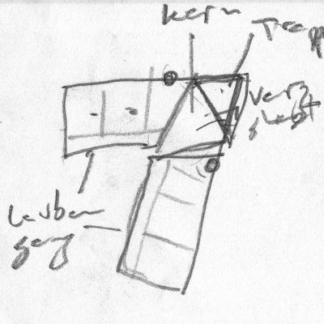

Carl-Keller-Weg 6, D-79539 Loerrach – Gewann Wächtersholden am Huenerberg Suedwesthang – Ort – Anfahrt – Bankverbindung
Hinweis: Diese Webseite ist offen. Unseres Wissens stehen keine Geheimnisse drin. Jede, die hier etwas Vertrauliches entdeckt, moege das bitte schleunigst kundtun und melden, so dass wir es entfernen koennen. Vielen Dank!
Vorschlag von Moc zu einer Charta; Anja betont Wichtigkeit, eine eigene zu machen.
Geschaeftskonto:
Waldrain eG i.G.
Carl-Keller-Weg 6, D-79539 Loerrach
Volksbank Dreiländereck EG
Tumringer Strasse 237, D-79537 Lörrach
SWIFT/BIC: VOLODE66
Kontonummer: 1623389
Euro-Konto fuer Zahlungen aus Deutschland und der EU:
CHF-Konto fuer Zahlungen aus der Schweiz; die Einzahlung in CHF wird automatisch zu einem guten Kurs in EUR konvertiert:
Wie kommunizieren wir? Wie teilen wir uns mit und hoeren wir uns zu, so dass alle zu Wort kommen? Wie finden Entscheidungen statt?
Es gibt viele Arten zu Kommunizieren und gemeinsam Entscheidungen zu faellen, z.b.:
Plum Village bietet viel zum Thema friedliche Kommunikatiuon und achtsames Zuhoeren:
Hier ist eine Auflistung einiger Werkzeugen und Techniken, die wir nutzen koennen (und z.T. auch tun):
Am Treffen am 7. Juni haben wir entschieden, vorerst hauptsaechlich per email zu kommunizieren.
Hartmut und Isabell haben Erfahrung mit Konsent und Soziokratie (engl. sociocracy), wie von Sociocracy for All (SoFA) propagiert:
Was ist eine gute Entscheidung?
Wenn alle, die davon betroffen sind, gut damit leben können? In unserem Alltag ist das oft nicht der Fall. Im demokratischen System hat sich deshalb die Abstimmung mit einfachen Mehrheiten etabliert. Je stärker Bedürfnisse, Meinungen und Haltungen auseinander liegen, desto weniger liefert die Abstimmung Lösungen, mit den alle leben können. Man denke nur an Entscheide, die mit knappen Mehrheiten getroffen werden.
Die Soziokratie bietet hier Verfahrensweisen, um alle Betroffenen in die Entscheidung einzubeziehen, deren Widerstände zu hören, in die Entscheidung einfliessen zu lassen und so am Ende die Entscheidung zu treffen, die für die Betroffenen gemeinschaftlich getragen wird.
Dazu gibt es einen einfachen Prozessablauf, der in der Gruppe eingeübt und von ihr getragen werden muss. Neben dem reinen Grundsatzentscheid gibt es weitere Elemente der Organisationsentwicklung, wie die soziokratische Wahl und die soziokratischen Kreise.
Weitere Informationen liefert der Ueberblick Was ist Soziokratie? (25 Minuten).
Eine Reportage des SRF zum Thema Konsum, mit einem interessanten Beispiel einer Gemeinschaft in der Schweiz:
Der 3. Beitrag handelt von einer Gemeinschaft, die eine sehr neuen und recht extremen Form lebt.
Macht mut, solches zu wissen, finde ich!
Ein Beispiel, wie man ohne Hierarchie solidarisch und ökologisch miteinander leben kann, bietet die interessante 45-Minuetige Reportage und Dokumentarfilm vom Hessischen Rundfunk am 19.08.2020:
Wenn Marcus ins Kino geht, nimmt er sich Geld aus der Gemeinschaftskasse. Braucht er Geld für einen Urlaub mit der Familie, entscheidet das Plenum, das tagt immer dienstags. Marcus findet das selbstverständlich, wie auch seine 80 Mitbewohner*innen in der Kommune in Niederkaufungen bei Kassel. 1986 gegründet, ist sie heute ein Unternehmen mit Bauernhof, Gemüseanbau, Hofladen, Schreinerei, Kita und Altenpflege. Viele Bewohner arbeiten in den kommuneeigenen Kollektiven, manche verdienen das Geld extern. Das Einkommen wird für die Gemeinschaft erwirtschaftet, einmal im Monat hängt der aktuelle Finanzstand aus, absolut transparent. Sie teilen Wohnungen und Wertvorstellungen. Das sind vor allem: Ohne Hierarchie solidarisch und ökologisch miteinander leben. Auf Besitz zu verzichten, nicht in Kleinfamilien zu leben, über alles gemeinschaftlich zu entscheiden – ist das ein Modell für die Zukunft? Neue, junge Mitbewohner zu finden, gestaltet sich gar nicht so leicht. — Kommune Niederkaufungen e.V., Kirchweg 1, D-34260 Kaufungen
Der Beitrag kann uns alle evtl. ein wenig sensibilisieren, wie ein Gemeinsam-Gefühl, ein Teilen mit Ressourcen-Nutzen und Nachhaltigkeit gelebt werden kann. Dieses Projekt gibt es schon 35 Jahre als Kommune mit seine 80 Mitbewohner*innen im hessischen Niederkaufungen bei Kassel.
Zufaellig stiess ich auf einen weiteren Teil, ein Interview mit Jakob, 12 Jahre alt, der 25 Minuten aus der Kindersicht ueber dieselbe Kommune berichtet:
Jakob ist zwölf Jahre alt und lebt mit seinen Eltern und seiner Schwester Charlotte in einer riesigen Wohngemeinschaft. In der 'Landkommune Niederkaufungen' wohnen 80 Menschen – vom Baby bis zum Senioren ist alles dabei. In seiner Kommune gibt es keine Hierarchien. Alles wird in Gemeinschaft entschiedeen. Auch Auch beim Geld heisst es: alles gehört allen.
Wohnen im Cluster – Ein Zukunftsmodell?
Cluster-Wohnen, was ist das überhaupt?
– Eine Cluster-Wohnung ist eine Kreuzung zwischen Wohngemeinschaft und Kleinstwohnung, sozusagen eine „Luxus-WG“. Es gibt darin abgeschlossene Zimmer mit einem Bad und meistens auch mit einer kleinen Teeküche. Zusätzlich gibt es einen größeren Wohnbereich mit einer Wohnküche, die gemeinschaftlich genutzt wird. So sind Cluster-Wohnungen in der Regel 150 bis 800 Quadratmeter große zusammenhängende Strukturen, die sich ohne große bauliche Veränderungen auf ganz verschiedene Art und Weise belegen lassen. Dadurch entsteht eine hohe Flexibilität.
Gemeinschaftliches Wohnen im Cluster – Ein praktischer Leitfaden zum Planen, Bauen und Wohnen.
Hartmut hat etwas gesucht zu den Grössen von Clusterwohnungen. Im Kraftwerk 1 in der Schweiz leben 100 Leute auf 3260 qm in 11 Clusterwohnungen, vgl. das Konzept und die Bewerbug fuer das Koch-Areal Koch, ein Zürcher Originalrezept. Das sind natürlich riesige Gebäude und sehr urban – ein wenig mehr Platz kann es bei uns ja schon sein...
Ein Zitat aus der Beschreibung von Cluster-Wohnungen im Artikel Architektur für Wohnprojekte – Impulse für innovative Wohntypologien:
In der Konzeptionsphase für ein genossenschaftliches Mehrgenerationen-Projekt – Kraftwerk 2 in Zürich – suchte eine Gruppe Älterer nach neuen Wegen, um in der zweiten Lebenshälfte gemeinschaftlich und zugleich möglichst selbständig zu wohnen. Die Besonderheit: Die Gruppenmitglieder hatten bisher in Wohngemeinschaften gelebt. Sie wollten diese Wohnform grundsätzlich beibehalten, wünschten sich aber ein grösseres Mass an Privatheit, als es in einer klassischen Wohngemeinschaft der Fall wäre.
Der aus diesen konzeptionellen Vorüberlegungen entwickelte Wohnungstyp – die sogenannte Cluster-Wohnung – kombiniert Elemente eines gemeinschaftlichen Wohnprojekts mit denen einer Wohngemeinschaft. Innerhalb einer grossen abgeschlossenen Wohnung gruppieren sich separate Wohneinheiten rund um einen gemeinsam genutzten Wohnraum, eine grosse Küche und ein Bad. Anders als in einer klassischen Wohngemeinschaft verfügt jede der Kleinwohnungen über ein eigenes kleines Bad und eine Kochgelegenheit. Im Gegensatz zum gemeinschaftlichen Wohnprojekt sind private Wohneinheiten und Gemeinschaftsflächen stärker miteinander verzahnt. Diese Gestaltung lässt ein Maximum an gemeinschaftlichem Leben zu und ermöglicht zugleich den Rückzug in die eigene komplette Wohnung.
Im Kraftwerk 2 entstanden in zwei mehrgeschossigen, durch einen Neubau verbundenen Bestandsgebäuden neben herkömmlichen Wohneinheiten unterschiedlicher Grösse auch zwei Wohnungen des neuen Typs. Die beiden Cluster-Wohnungen umfassen jeweils eine Gesamtfläche von 320 m². Der Gemeinschaftsraum, eine Küche und ein Wannenbad, insgesamt ca. 130 m², stehen allen Bewohnern zur gemeinsamen oder individuellen Nutzung offen. Über den zentralen Raum besteht Zugang zu (je?) sieben Kleinwohnungen, die für eine oder zwei Personen ausgelegt sind und über 30 bis 50 m² individuelle Wohnfläche verfügen. Ein knapp bemessener Vorraum mit Nasszelle und Kochnische ergänzt jede dieser Wohneinheiten.
Den Beteiligten im Kraftwerk 2 lag daran, ein Gegengewicht zum wachsenden privaten Wohnflächenverbrauch herzustellen. Dafür akzeptierten die Initiatoren Abstriche an persönlicher Wohnfläche und Ausstattung im Vergleich zu einer konventionellen Wohnung, zumal die gemeinsamen Flächen diesen Verzicht ausgleichen.
Ein zweites genossenschaftliches Schweizer Projekt für das Wohnen Älterer setzt die Idee des Clusterwohnens nicht innerhalb einer gemeinsamen Wohnung, sondern in einem kompletten Haus um. Auf jeder der vier Etagen des Gemeinschaftswohnhauses 'Kanzlei-Seen' in Winterthur finden sich sowohl Gemeinschaftsflächen als auch zwei bis fünf komplette abgeschlossene kleine Wohnungen. Mit 45-60 m² Fläche und der Aufteilung in zwei separate Räume sind diese Wohneinheiten grosszügiger als im Projekt Kraftwerk 2. Etwa ein Drittel der Fläche im gesamten Gebäude steht für eine gemeinsame wie auch individuelle Nutzung zur Verfügung.5
Hier noch ein Podcast aus Berlin zum Thema, Summe der einzelnen Teile, Nachhaltig wohnen: Clusterwohnungen, die WG fürs Leben (13 Minuten).
Wir muessen uns alle drueber klar werden, wie viel Oekologie und wie viel Luxus wir uns goennen wollen!
Und schauen und entscheiden, ob wir ein Mass finden (wollen), dass fuer alle passt, oder eine Spannbreite suchen muessen.
Links:
Ganz kurz: unsere Erfahrungen, Tipps an andere Hausprojekte vom 4-Häuser-Projekt in Tübingen zu den bereichen Gruppenprozess, Sanierung, Finanzen/Kauf und Öffentlichkeitsarbeit.
Ausfuehrlicher: der Leitfaden für Hausprojekte bietet eine wichtige Grundlagenlektuere mit Aufsaetzen zu folgenden Themen:
Soll die Spekulation und Veraeusserung fuer immer und ewig verhindert werden?
Will die Hausgemeinschaft unabhaengig bleiben?
Michael und Jeremy nahmen teil an dem 2. Symposium WohnWandel – Gemeinschaftliches Wohnen in LÖ am Samstag 30. November 2019, wo sie Vortraege uund detaillierte Infos erhalten konten von:
Lena oder das Lenahaus ist die Bau- und Wohngenossenschaft Lebenswerte Nachbarschaft Basel.
Das Konzeptpapier von Lena ist lesenswert.
Siehe auch die Lena-GV-Unterlagen vom 6.9.2020:
Das Mietshäuser Syndikat entzieht Mietshaeuser dauerhaft der Immobilienspekulation.
Hier ist ein Vergleich zu unserer gewaehlten Form: Genossenschaft oder Mietshaeuser Syndikat?
Wir haben uns fuer die Gruendung einer kleinen Genossenschaft entschieden, bei der wir von der ZdK unterstuetzt werden.
Artikel zum Thema:
Fragen und Ideen zur Satzung:
Pachtvertrag:
Im Moment sieht es eher so aus, als ob die Genossenschaft Waldrain das Grundstueck erwerben moechte, sobald die Gruendung abgehakt und die Finanzierung geklaert ist.
Die verschiedenen Formen des Pachtvertrages fuehren mehr Komplikationen als Loesungen mit sich.
Die gesammelten Dokumente zur Genossenschaft findest du oben unter Waldraindokumente.
Stefan Best sagt:
Das Entwickeln eines in vielerlei Hinsicht stimmigen Raumes ist ein überaus vielschichtiger Prozess. So vielschichtig, dass wir nicht allein kognitiv-intellektuell an eine solche Planung herangehen können. Um etwas originär Neues in die Welt zu bringen, das die unterschiedlichsten Aspekte unseres Daseins und Zusammenlebens miteinbezieht und die dazugehörenden wechselseitigen Bezüge und Vernetzungen neu empfindet und denkt, braucht es eine ganzheitliche Herangehensweise, die auch das Immanent-Zukünftige, die werdende Wirklichkeit miteinbeziehen kann.
Im angehängten Merkblatt habe ich versucht, meine eigene Praxis der Raum- und Gartenplanung und -gestaltung strukturiert zusammenzufassen. Es enthält auch intuitive und imaginative Elemente. Sie sind wesentlich, damit sich auch das zeigen kann, was von unserem kognitiven Radar nicht erfasst wird. Es ist auch empfehlenswert, gewisse Schritte gemeinsam als Gruppe oder auch zu zweit zu gehen.
Vielleicht kennt ihr die Theorie U von Otto Scharmer – vgl. hierzu den Vortrag von Claus Otto Scharmer über sein Buch Theorie U (10 Minuten). Sie beschreibt sehr schön, wie man wirklich Neues entwickeln kann, ohne nur alte Erfahrungen zu wiederholen.
Ich hoffe, das Merkblatt hilft euch weiter.
Der Lageplan kann eingesehen und abgefragt werden ueber das geoportal > Stadt Loerrach > Nutzungsbedingungen akzeptieren > Zu Adresse Flst. Navigieren > 3640 > 3640 Loerrach waehlen > Navigierknopf druecken. Das sieht dann ungefaehr so aus:

Fuer genaue Masse der Kantenlaengen der Grenze koennen wir auf die Umlegungskarte zurueckgreifen:

Ueberpruefung der Koordinaten, Kantenlaengen und Grundstuecksflaeche in Python durch die geolocation_waldrain geolocation calculation for the Waldrain plot of land.
Man kann die Koordinaten auch interaktiv umrechnen, z.B. in dem koordinaten-umrechner.de oder in epsg.io.
Es gilt der Bebauungsplan "Suedhang Huenerberg" noerdlich der Wallbrunnstrasse und oestlich bzw. suedlich des Huenerbergweges.
Der Bebauungsplan bestimmt genau, was wo wie gebaut werden darf inkl. genehmigte Ausnahmen von den Regeln:

Die wesentlichen Bestimmungen sind:
Wolfgang Gottschalk hat uns in November 2019 mit weiteren Infos zum Bebauungsplan aufgeklaert.
Laut der Broschuere Cluster der Netzwerkagentur GenerationenWohnen STATTBau Berlin, s.o. Wohnform Cluster-WG:
Wohnungen, die über 400 m2 groß sind, müssen erhöhte Brandschutzauflagen erfüllen. Aus diesem Grund ... werden Cluster-Wohnungen häufig so geplant, dass sie in kleinere Wohnungen unterteilbar sind.
(5) Geschosse sind oberirdische Geschosse, wenn ihre Deckenoberkanten im Mittel mehr als 1,4 m über die Geländeoberfläche hinausragen; im Übrigen sind sie Kellergeschosse. Hohlräume zwischen der obersten Decke und der Bedachung, in denen Aufenthaltsräume nicht möglich sind, sind keine Geschosse.
(6) Vollgeschosse sind Geschosse, die mehr als 1,4 m über die im Mittel gemessene Geländeoberfläche hinausragen und, von Oberkante Fussboden bis Oberkante Fussboden der darüberliegenden Decke oder bis Oberkante Dachhaut des darüberliegenden Daches gemessen, mindestens 2,3 m hoch sind. Die im Mittel gemessene Geländeoberfläche ergibt sich aus dem arithmetischen Mittel der Höhenlage der Geländeoberfläche an den Gebäudeecken. Keine Vollgeschosse sind
Hohlräume zwischen der obersten Decke und dem Dach, deren lichte Höhe geringer ist, als sie für Aufenthaltsräume nach § 34 Abs. 1 erforderlich ist, sowie offene Emporen bis zu einer Grundfläche von 20 m2 bleiben ausser Betracht.
Darf das Dach ueber die Baugrenze herausragen? Also vor allem an der Ostseite, am Carl-Keller-Weg entlang?
Die Baugrnze ist die im Bebauungsplan festgesetzte beziehungsweise eingezeichnete Linie, welche von Gebäuden oder deren Teilen nicht überbaut werden darf... Ein Vortreten von Gebäudeteilen in geringfügigem Ausmass kann zugelassen werden...
Laut Diskussionen ueber Dachüberstand außerhalb Baufenster und muss Dachüberstand ins Baufenster koennte eine Dachueberstand von 50 cm als geringfuegig toleriert werden:
Egal sind die Dachüberstände nicht, zur überbauten Fläche zählen auch Dachüberstände, meist bleiben diese bei der Berechnung unberücksichtigt, sofern keine Stützen, Pfetten darunter sind aus denen sich Visuell ein Baukörper ablesen lässt.
für Baugrenzen ist die Aussenhülle des Gebäudes maßgebend, wenn besagte Dachüberstände die max. Ausladung einhalten und Abstandsflächen nicht entgegenstehen.
Nach § 16 Abs. 3 BauNVO wird das Maß der baulichen Nutzung ... die Größe der Grundfläche ... festzusetzen. Demnach sollte die Außenwand bis auf die Baugrenze möglich sein. Der Dachüberstand ist außen vor.
In Niedersachsen z.B. gilt ein Dachüberstand bis 50 cm als unbeachtlich, darüber hinaus ist er mit zu berücksichtigen!
Hier stellen wir ein paar Beispiele von existierenden Bauten vor, die dem Bebauungsplan 'Suedhang Huenerberg' unterliegen. Wir wollen kein solches Bauwerk erstellen. Sie zeigen, was man sich vorstellen kann unter 'Einzel- oder Doppelhaeus mit zwei Vollgeschosse und Satteldach, Traufhoehe max. 6.5 m':
Diese Bauten entsprechen dem Bebauungsplan Huenerberg Suedhang.
Ausnahmen von den Vorschiriften im Bebauungsplan wurden nur am Holdenrain 5-7 beantragt und genehmigt: Anzahl Vollgeschosse + Dachform. Wegen dem Flachdach zaehlt in diesem Fall die Attikaetage als Vollgeschoss.
Ich habe mit den Bauherren im Holdenrain 24 gesprochen. Sie wiesen drauf hin, dass die Baubehoerde in den letzten Jahren eher noch pingeliger geworden ist, und dass man besonders bei der Traufeoehe des Satteldachs auf das Einhalten der vorgeschriebenen Maximalhoehe achten muss.
Ein paar Infos zum Bauplan von einem befreundeten Architekten, Wolfgang Gottschalk, am 2019-11-08:
Q: Koenntest du mir sagen, wo die genauen Baugrenzen innerhalb dieses Grundstueckes verlaufen?
A: Siehe die dicken Strich-Punktlinien auf dem Bebauungsplan.
Q: Wie viel Wohnflaeche, Kellerflaeche und Volumen duerften wir da hinstellen?
A: Grundfläche des Gebäudes 0.4 x 1040 qm = 416 qm, Geschossflächen 0.8 x 1040qm = 832 qm, offene und geschlossene Bauweise – d.h. Einzelhaus oder Doppelhaus möglich, max. 2 Wohneinheiten pro Haus.
Q: Gibt es Vorschriften und Beschraenkungen bzgl. Dachausformung, Stockwerkszahl, usw.?
A: Satteldach mit einer Dachneigung von 15-27°, max. 2 Vollgeschosse + Keller + Dachgeschoss. Allerdings ist der Bebauungsplan jetzt schon fast 40 Jahre alt. Deshalb wäre eine entsprechende Beratung bei der Stadt für dein Vorhaben sinnvoll.
Man sollte unbedingt eine Bauvoranfrage stellen bevor man den entgueligen Bauantrag stellt.
Man darf also laut dem Bauplan von 1978 nur 4 Wohnungen draufstellen und etwas ueber 800 m2 Wohnfläche schaffen.
Die Traufhöhe ist Bestandteil des kommunalen Baurechts und wurde zeichnerisch ermittelt. Sie ist nicht zwingend mit der Dachrinne gleichzusetzen. Die Höhe zwischen Traufpunkt und dem gewachsenen Gelände wird als Traufhöhe bezeichnet. Die maximale Traufhöhe kann in einem Bebauungsplan festgeschrieben werden. Im Bebauungsplan kann eine maximale Traufhöhe auch abhängig von der Dachneigung festgelegt werden, so kann sie z. B. für eingeschossige Einfamilienhäuser 3,5 m bei 45° Dachneigung und 4,0 m bei 35° Dachneigung betragen. Ausserdem wird auch die Firsthöhe festgelegt. Dies kann zu weiteren Einschränkungen bei der Traufhöhe führen.
Die Bezugspunkte der Traufhöhendefinition beziehen sich in der Regel auf die Oberkante der öffentlichen Strasse und dem Schnittpunkt zwischen aufgehendem Mauerwerk und Aussenwand mit den Dachsparren. Auch hier kann durch den Bebauungsplan exakt festgelegt werden, ob die Unterkante des Dachsparrens oder die Dachhaut massgebend sind. Dachaufbauten lösen keine Traufhöhen im Planungsrecht aus. Die Traufhöhe ist immer an die Decke des letzten möglichen Vollgeschosses und der aufgehenden Aussenwand angebunden.
Herr Nils Janz vom Vermessungsamt Loerrach hat am 2020-04-07 das Grundstueck offiziell vermessen:
Die folgenden Daten wurden von der Stadt zur Verfuegung gestellt:


Hier kann man das digitale Gelaendemodell in 3D drehen, von verschiedenen Seiten betrachten und Schnitte generieren:
In 2D werden die Nachbarhaeuser, Hoehenlinien und -Angaben, Strassen und Grenzpunkte angezeigt. In 3D kann man das Gelaendemodell rotieren und von allen Seiten und Richtungen aus betrachten. Anleitung zum Navigieren, Ansichten schalten, Abstaende messen usw. oben.
Unten das etwas naivere Ergebnis der manuallen Hoehenmessung von Jeremy, das nur die Nordhaelfte des Grundstuecks abdeckt. Die Messung erfolgt in einem 3 Meter Raster entlang parallelen Linien in 3 Meter Abstand voneinander, parallel zu der Norgrenze, von dem Carl-Keller-Weg runter, von Ost nach West, von Nord nach Sued.
Hoehenversatz in cm:
Das ergibt folgende Hoehenversatz- und kumulierte Werte berechnet mit hoehenversatz.py:
0 0.00 0.33 0.54 0.61 0.54 0.65 0.51 0.61 0.67 0.83 0.68
kum 0.00 -0.33 -0.87 -1.48 -2.02 -2.67 -3.18 -3.79 -4.46 -5.29 -5.97
3 0.02 0.57 0.42 0.70 0.57 0.47 0.62 0.61 0.72 0.96 0.80
kum 0.02 -0.55 -0.97 -1.67 -2.24 -2.71 -3.33 -3.94 -4.66 -5.62 -6.42
6 0.00 0.78 0.45 0.61 0.54 0.64 0.50 0.73 0.90 1.30 0.40
kum 0.02 -0.76 -1.21 -1.82 -2.36 -3.00 -3.50 -4.23 -5.13 -6.43 -6.83
9 0.00 0.88 0.68 0.52 0.37 0.66 0.61 0.69 0.96 1.11 0.28
kum 0.02 -0.86 -1.54 -2.06 -2.43 -3.09 -3.70 -4.39 -5.35 -6.46 -6.74
12 -0.05 1.08 0.56 0.38 0.52 0.80 0.51 0.83 1.44 0.53 0.29
kum -0.03 -1.11 -1.67 -2.05 -2.57 -3.37 -3.88 -4.71 -6.15 -6.68 -6.97
15 -0.03 1.22 0.51 0.20 0.99 0.65 0.73 0.77 1.23 0.34 0.37
kum -0.06 -1.28 -1.79 -1.99 -2.98 -3.63 -4.36 -5.13 -6.36 -6.70 -7.07
18 -0.05 1.30 0.64 0.44 0.74 0.62 0.59
kum -0.11 -1.41 -2.05 -2.49 -3.23 -3.85 -4.44
Das Baufenster innerhalb der Grundstuecksgrenzen ist im Bebauungsplan mit dicken Strichpunkten markiert und erfordert 5 Meter Abstand vom Carl-Keller-Weg (siehe Bemassung) und ca. 6 Meter von der Grenze zur Villa Elben. In der folgenden Skizze sind ausserdem 3 m Abstand von den Nord- und Suedgrenzen vorgesehen. Die Abstaende an den Nord- und Suedgrenzen werden laut Landesbauordnung LBO geregelt, minimal 0.4 mal Fassadenhoehe. Entlang der Nordgrenze entsteht moeglicherweise ein Zufahrtsweg. Das blaue Rechteck in der Nordwestecke auf dem Grundstueck vom Huenerbergweg 30 stellt Michaels Wohnmobil dar:

Laut Wikipedia sei moderne Geomantie 'das Erkennen und Erspüren von guten Plätzen in Raum und Landschaft und damit die Grundlage für ein harmonisches und gesundes Wohnen und Leben. Die Aufgabe eines Geomanten bestehe darin, 'baubiologisches Wissen' mit der geomantischen Kunst zu vereinen, Räume zu gestalten, den guten Ort zu erkennen und zu erspüren und mit den Menschen in Einklang zu bringen.'
Susan Galster hat fuer uns eine Bewertung des Grundstueckes vorgenommen:
Wir haben die Lage von neun wesentlichen Baeumen trianguliert:
| Nr | Baumart | Messpunktabstand in m | ||
| Messpunkte | NO | OM | Zaun | |
| 1 | Nuss | 5.20 | 8.80 | 1.90 |
| 2 | Eiche | 6.80 | 7.40 | 2.10 |
| Messpunkte | NO | NW | WM | |
| 3 | Ahorn | 21.50 | 11.50 | 19.10 |
| 4 | Ahorn | 28.30 | 14.30 | 11.00 |
| 5 | Eiche (gross) | 35.30 | 20.00 | 10.50 |
| 6 | Esche (gross) | 38.80 | 21.60 | 9.30 |
| Messpunkte | SO | SW | Zaun | |
| 7 | Ahorn (6 Staemme) | 6.40 | 20.70 | 1.50 |
| 8 | Esche | 3.40 | 27.00 | 1.80 |
| Messpunkte | SO | SW | OM | |
| 9 | Ahorn | 13.10 | 26.00 | 16.70 |
Vom 1. März bis 30. September ist das Fällen von Bäumen in der Regel verboten. Dann schützt das Bundesnaturschutzgesetz nistende Vögel... Als ungefähre Faustregel gilt laut Bundesverband Garten-, Landschafts- und Sportplatzbau e. V. (BGL) der Schutz tendenziell für Laub- und Nadelbäume mit einem Stammumfang von etwa 60 bis 80 Zentimetern. Obstbäume seien ausgenommen. Ausnahmegenehmigungen für das Fällen werden aber zum Beispiel erteilt, wenn das Gehölz krank ist, es abzusterben droht, es nicht mehr verkehrssicher ist oder es Baumassnahmen im Wege steht.
Hier erstmal eine Uebersicht ueber Holzmasse und Preise:
In Januar 2020 ist eine grosse tote Esche von selbst umgefallen, weil die Wurzel verfault war. In Februar 2020 haben wir einige weitere Baeume gefaellt, um Platz zu schaffen fuer den Zufahrtsweg: ein paar Eschen und eine grosse Eiche. Manche Staemme koennen wir so nutzen, z.B. fuer eine Ueberdachung vom Sitzplatz. In September 2020 ist unser groesstes Stueck, der Eichenstamm:
Im Winter 2020-2021 werden wir wahrscheinlich weitere Baeume faellen, um Platz fuer den Hausbau zu schaffen.
Telefonat am 2020-09-30 mit Ruben Hugenschmidt ueber die eventuelle Saegerei der vorhandenen und zukuenftigen Staemme.
Axel kam vorbei und meint, die Eschenstaemme seien zu mickrig, um von Interesse zu sein. Der Eichenstamm ist OK. Man koennte das von Peter (?) in Binzen holen und saegen lassen.
Mobiles Saegewerk MN26 ab ca. 4000 euro. Kann man sowas auch mieten? Anscheinend eher Lohnschnitt beauftragen.

Joerg sagt: Mehrgenerationenhäuser erhalten höheren Bundeszuschuss.
Die im Bundesprogramm Mehrgenerationenhaus geförderten Häuser haben bis einschliesslich 2019 jeweils bis zu 40.000 Euro pro Jahr erhalten, davon 30.000 Euro vom Bundesministerium für Familie, Senioren, Frauen und Jugend und 10.000 Euro von der jeweiligen Kommune, dem Landkreis und/oder (anteilig) vom Land. Durch diese verbindlich vorgegebene Kofinanzierung wird die Einbettung des Mehrgenerationenhauses in die Kommune gefördert und die Rolle der Häuser als kommunale Akteure gestärkt. Im Jahr 2020 erhalten alle Mehrgenerationenhäuser einen um 10.000 Euro erhöhten Bundeszuschuss, sodass ihnen zusammen mit der Kofinanzierung insgesamt bis zu 50.000 € zur Verfügung stehen.
Das Bundesprogramm Mehrgenerationenhaus wie auch das ab 2021 geplante Anschlussprogramm sind als Fachprogramm ins gesamtdeutsche Fördersystem aufgenommen worden. Das Bundesministerium für Familie, Senioren, Frauen und Jugend plant die Fortsetzung der Förderung der Mehrgenerationenhäuser im bisherigen Umfang auch für das Anschlussprogramm ab 2021. Die Kofinanzierung seitens der Kommunen, Landkreise und/oder Länder wird weiterhin Voraussetzung für den Bundeszuschuss bleiben.
Informationen über die näheren Planungen für das Anschlussprogramm ab 2021, das für 2020 vorgesehene Antragsverfahren sowie die Förderrichtlinie finden Sie zu gegebener Zeit auf der Website des Bundesprogramms Mehrgenerationenhaus www.mehrgenerationenhaeuser.de.
Wir wollen ein Vollholzhaus, eventuell mit Lehmwaende im Innenbereich.
Interessant scheint z.B. das Vollholzsystem NUR-HOLZ der Firma Rombach, erwaehnt von Andreas fuer seine Villa Larix, siehe Tiny House.
Einstieg:
Der Vortrag zeigt Möglichkeiten, die sich uns beim Bauen auftun, wenn wir die Geschenke der Natur nutzen und auf Chemie verzichten. Häuser in echter Holzbauweise verbrauchen keine Energie und sind am gesündesten für uns und die Umwelt. Wir können mit Freude vorausblicken, denn es gibt keine Zukunft, sondern nur das Potenzial der Gegenwart. Der 1 stündlicher Vortrag hat mich sehr beeindruckt.
Die Firma Thoma wurde 1990 gegründet, weil Erwin Thoma, der Förster, für seine Kinder das gesündeste Haus bauen wollte. Heute ist das Unternehmen als umweltfreundlicher Industriebetrieb weltweit ausgezeichnet. Die Firma ist evtl. auch für unsere Weiterentwicklung eine gute Adresse, um weitere Ideen zu sammeln. Die World Foundation for Natural Science ist auch sehr interessant:
Rene und Pia haben ihre Kueche bestellt bei möbelum, Wiesentalstrasse, Freiburg. Die Möbel sind ein deutsches Fabrikat und aus Massivholz. Obere Küche aus Fichte, untere Buche. Wir haben keine Fronten bestellt, weil wir sie selbst aus eingefärbtem MDF machen wollen. Wir haben uns für farbige Küchenfronten entschieden. Die gibts als MDF schon eingefärbt. Ich hab mich an die angebotenen Masse gehalten laut Euro-Norm, also 30, 40, 50 usw. Das hat soweit immer gut geklappt.
Beispiele von mikroskopischen WCs mit Dusche:
Michael und Jeremy graben und legen einen provisorischen Abwasseranschluss fuer Barbaras Tiny House.
Der wird ziemlich sicher nicht offiziell abnahmefaehig sein fuer die offizielle Gebaeudeentwaesserung.
Es waere zwar moeglich, ueber den Huenerbergweg 30 zu entwaessern. Es ist aber weiter und administrativ aufwendiger, als ueber den Carl-Keller-Weg.
Ich wuerde vorschlagen, die offizielle Gebaeudeentwaesserung ueber den Carl-Keller-Weg vorzusehen.
Damit wir nicht mit Pumpen und Technik arbeiten muessen, wuerde ich vorschlagen, die maximale Tiefe des gesamten offiziellen Abwassersystems des Gebaeudes direkt unter der Unterkante Fussboden vom Erdgeschoss (gleich Kellerdecke) vorzusehen und das gesamte Zu- und Abwassersystem oberhalb dieser Grenze zu beschraenken.
Tiefere Wassereinrichtungen und Rohrsysteme im Keller, wenn noetig, koennten vielleicht beschraenkt werden auf Regenwasser und die provisorische Entwaesserung ueber den Huenerbergweg 30.
Wir haben beim Treffen am 14.2 besprochen, dass wir von einem Rechteck mit Grundflaeche 200 qm ausgehen.
Dazu noch ein paar Gedanken ueber Rechteck oder L-Form.
Da wir mehrere getrennte Privatbereiche unterbringen und die Verkehrswege (Gaenge im Haus) minimieren wollen, folgt daraus, dass der Hauseingang in der Mitte des Hauses sein sollte, und daran anschliessend auch Flur, Treppenhaus und Gemeinschaftsbereich.
Also sollte der Gemeinschaftsbereich in der Mitte liegen, und Privatbereiche im Norden und Sueden.
In dem Fall haben die Privatbereiche im Norden etwas weniger Sonne und Aussicht als die im Sueden.
Um dem Nordfluegel mehr Sonne und Aussicht zu bescheren, koennte man einen Knick einfuegen, diese Privatbereiche in einen Westfluegel, und den Gemeinschaftsbereich in die Nordostecke verschieben.
Damit waeren wir wieder bei der L-Form.
Wenn wir in der Nordostecke eine L-Form bauen, darf das OG nicht auch um die Ecke ragen, weil damit die maximale Traufhoehe von 6.5 Meter ueberschritten wuerde.
Wenn wir in der L-Form zwei Stockwerke auch im Westfluegel unterbringen wollen, muessen daher die zwei Stockwerke in dem Gebaeudeteil eine Etage nach unten ruecken.
Also gibt es im Westfluegel entweder nur ein EG, oder ein EG + UG.
Was haelt ihr von diesen Gedankengang?
Durch eine L-Form wird auch die Unterkellerung besser ausgenutzt.
Ausserdem entsteht dadurch eine geschuetzte Nische in der Ecke mit Sued- und Westexposition, die in den kuehleren Jahreszeiten die Gartennutzung sehr gut unterstuetzen und erweitern kann.
Wenn wir einen Westfluegel mit EG oder EG + UG erstellen, koennte man auf dem Dach der West-EG eine sehr attraktive Terrasse vorsehen.
Vorentwuerfe von AHA:
Hier sind ein paar eigene Entwuerfe:
Anleitung:
Verschiedene Ansichten sind verfuegbar, z.B.:
Zoom und Pan ist in allen Ansichten moeglich: Zoomen mit der Scrolltaste der Maus, Pan mit dem Zeiger.
In 3D kann man das Modell rotieren, von allen Seiten und Richtungen aus betrachten, Schnitte definieren, Abstaende messen, und mehr.
Full Screen klicken, um weitere Werkzeugicons anzuzeigen.
In 3D gibt es z.B. die Werkzeuge Orbit und Section Analysis, um das Modell zu drehen und Schnitte zu definieren. Mit dem Werkzeug Measure koennen centimetergenau Abstaende gemessen werden.
Zum Wechseln der Ansicht auf den Wuerfel (Kubus) oben links klicken.
300000 rohbau 100000
300000 dach fenster tuer 60000
450000 technik 70000
100000 innenausbau 20000
200000 architekt 40000
1350000 summe 270000
270000 baunebenkosten 10-20%
1620000 total inkl baunebenkosten
In der Architekteneinladung sprechen wir von einem Vorentwurf. Dabei wird bewusst noch nicht eine offizielle Bauvoranfrage bei der Stadt angestrebt. Die Bauvoranfrage ist eine wesentliche Stufe weiter, stellt z.B. die Kubatur fest. Vorher muss ein wichtiger erster Schritt genommen werden: die Gruppe muss sich einig werden. Bei dem Vorentwurf geht es nicht um Details. Der Vorentwurf kann aus Handzeichnungen in Bleistift oder Tusche bestehen, ohne Masse und ohne Maße, ein kuenstlerisch Entwurf. Viele Architekten koennen heutzutage nicht mehr freihand zeichnen...
Wir sind eine kleine Gruppe von Menschen, die gemeinschaftlich, ökologisch und nachhaltig Bauen und Leben wollen.
Wir haben ein konkretes Grundstück in Lörrach gekauft, das wir bebauen und beleben wollen.
Dort können wir auf ca. 1000 Quadratmeter Land ein Wohnhaus für ca. 8 bis 14 Menschen auf maximal 400 Quadratmeter Bau- und 800 Quadratmeter Wohnfläche errichten.
Wir streben an, vor September 2020 eine Bauvoranfrage bei der Stadt einreichen, um frühzeitig sicher zu sein können, dass unsere Bauvorstellungen tatsächlich verwirklicht werden können.
Wir sind dabei, eine Genossenschaft zu gründen, um dieses Vorhaben in gemeinsamer, geteilter Verantwortung umzusetzen.
Noch sind wir in einer offenen Findungsphase. Die genauen Mitglieder stehen noch nicht fest. Auch später ist Veränderung zu erwarten, also Flexibilität in der Raumgestaltung wichtig.
Wir sind angetan von Vollholz- und Lehmbau, Permahaus, Baubiologie, Ökologie, Nachhaltigkeit, viel Aussicht, viele Freiflächen, Balkons und Terrassen, gute Einbindung vom Garten.
Wir wollen viel Natur belassen und im Garten aktiv sein, auch mit Permakultur, Regenwassernutzung, Abwasserminimierung, evtl. Kompostklo, usw.
Jetzt suchen wir nach konkreten Lösungsansätzen, wie dieses Vorhaben begonnen werden kann.
Dazu möchten wir mehrere Architekten und Architektinnen auffordern, im Sinne eines Vorentwurfs Vorschläge zu machen, die zu einem Festhonorar oder Bezahlung gemäss Vereinbarung abgerechnet werden können.
Wir freuen uns über Ihre Rückmeldung!
Alles bisherige und weitere sehen Sie auf dieser Website.
Ihr Ansprechpartner: Jeremy Tammik, email (weitere Kontaktmöglichkeiten).
P.S. Die folgenden Absaetze wurden aus der Einladung geloescht, zum straffen und groesseren Freiraum schaffen: Das Gebaeude soll viele gemeinsam genuzte Bereiche beherbergen, wie z.B. ein schoener grosser Eingangsbereich, Wohnzimmer, Kueche, Bad, usw., vielleicht ein bisschen inspiriert von dem aktuellen Konzept Cluster-WG. Vielleicht gibt es einen grossen hellen Keller mit weiteren gemeinsamenen Bereichen wie z.B. Werkstatt, Ateliers, Kreativ-, Tanz- und Bewegungsraeume. Es soll auch private Bereiche geben, in denen sich Einzelne, Paare und eventuell Familien ihr Privatleben fuehren koennen, ohne jeden Gemeinschaftszwang. Manche von uns wollen sehr oekologisch Leben und wenig private Wohnflaeche in Anspruch nehmen; andere wuenschen sich einen groesseren Privatbereich. Diese unterschiedlichen Ausrichtungen sollen Platz haben und respektiert werden.
Marco Jansen schaetzt fuer die Bauvoranfrage Kosten in Hoehe von ca. Euro 4800 anhand vom Bauvolumen, max. 800 qm Wohnflaeche multipliziert mit ca. 3 m Geschosshoehe, macht 2400 Kubikmeter.
Bei einem einfachen Einfamilienhaus mit vorliegenden Plaenen belaufen sich die Kosten einer Bauvoranfrage auf weniger als 500 Euro, bei groesseren Objekten bis zum zehnfachen.
Architektenhonorar insgesamt ca. 15 Prozent der Baukosten.
Leistungsphasen eines Architekten:
Die HOAI und ihre Leistungsphasen: So berechnet der Architekt sein Honorar:
Architekten dürfen ihr Honorar nicht selbst festlegen. Sie sind an die Honorarordnung für Architektenleistungen (HOAI) gebunden, die nur wenig Verhandlungsspielraum lässt. Für Bauherren bedeutet die Honorarordnung, relativ sicher kalkulieren zu können.
Das Nettohonorar wird auf Basis von vier Grössen errechnet:
Das heisst: Je teurer ein Bauwerk, je umfangreicher die Leistungen und je komplizierter ein Projekt, desto teurer wird die Architektenrechnung. Ausgangspunkt der Berechnung des Architektenhonorars sind die Baukosten. Daraus leitet sich der Honorarsatz ab. Dieser fällt je nach Honorarzone etwas höher oder niedriger aus. Je nachdem, wie viele Leistungsphasen ein Architekt erfüllt, darf er das gesamte Honorar oder nur einen Teil davon berechnen.
Bauherren sollten eine Baukostenobergrenze vereinbaren. Dadurch sind dann nicht nur die Baukosten, sondern auch das Honorar des Architekten gedeckelt. Diese Deckelung bezieht sich natuerlich allerdings nur auf das vertraglich vereinbarte Bauprojekt.
Ein Bauprojekt wird nach bestimmten Kriterien in eine von fünf Honorarzonen eingeordnet. Darin fliessen die planerischen Anforderungen an die Einbindung eines Gebäudes in die Umgebung, die Anzahl der Funktionsbereiche wie Zimmer, Küche oder Nassräume, die Anforderungen an die Gestaltung, die Konstruktion, die technische Ausstattung und der Umfang des Innenausbaus ein. Gebäude der niedrigsten Honorarzone I, also jene mit sehr geringen Planungsanforderungen, besitzen beispielsweise nur einen einzigen Funktionsbereich, was etwa bei einer Garage der Fall ist. Ein Einfamilienhaus verfügt über mehrere einfache Funktionsbereiche und fällt üblicherweise in die Honorarzonen III oder IV.
Der Honorarsatz ist verhandelbar und gewährt zumindest einen gewissen Verhandlungsspielraum. Unterschieden wird zwischen dem Mindest- und Maximalsatz sowie drei Zwischenstufen: einen Viertelsatz, einen Mittelsatz, einen Dreiviertelsatz.
Die Höhe dieser Sätze ist in einer umfangreichen Tabelle gesetzlich festgelegt, welcher Satz aber angewendet wird, können Bauherr und Architekt verhandeln.
Der Bauherr kann den Architekten mit neun Leistungsphasen beauftragen. Jeder Phase ist ein gewisser Prozentwert zugeteilt, der sich auf das mögliche Gesamthonorar bezieht, das dem Architekten dann zusteht, wenn er für alle neun Phasen verantwortlich ist.
Welche Kosten kann der Architekt anrechnen (Anrechenbare Kosten)?
Die anrechenbaren Kosten für die Objektplanung sind im §32 der HOAI geregelt.
Diese Kosten sind die Basis zur Ermittlung der Grundkosten gem. HOAI. Es handelt sich bei ihnen um die unmittelbar entstehenden Baukosten einschliesslich der entstandenen Aufwendungen, also die 'Nettobaukosten'. Sie werden ohne einen Mehrwertsteueraufschlag ermittelt und müssen sich in ihrer Höhe an den ortsüblichen Kosten orientieren. Der Architekt muss die Entwicklung der anrechenbaren Kosten während des gesamten Bauprojekts überwachen.
Vereinfachte Ueberschlagsrechnung des Architekturhonorars fuer Liestungsphasen 1 + 2 fuer unsere veranschlagte Bausumme vom HOAI Rechner:
| Mindest | Viertel | Mitte | Dreiviertel | Hoechst |
| 14.653 | 15.115 | 15.577 | 16.039 | 16.501 |
Als Daumenregel kann man sagen, dass das Architektenhonorar (bei Beauftragung aller Leistungsphasen) etwa 12% bis 15% der Baukosten bei Neubauten und 15% bis 17% bei Umbauten beträgt.
Leistungsphase 1 + 2 macht davon 9-10% aus, also waere ca. 1.1% bis 1.5% der gesamten anrechenbaren Baukosten anzusetzen, gleich 10362-14130 euro.
Die obige Tabelle ergibt eine hoehere Summe, 14650-16500 euro.
Die vorläufige Honorarofferte Architekt nach Kostenrahmen von AHA vom 21.07.20 bietet fuer LPh 1 + 2 3084 + 10795 = 13879 euro.
My architect friend W.G. read AHA's proposal and answers:
Der Vertrag ist sonst in Ordnung. Wegen der Honrarzonen kannst Du schauen unter HOAI 2013, DIN 276 und HOAI 2009 – Fachinformatione. Ich verwende normal Zone III Mitte. In Eurem Falle ist Zone IV angemessen wegen der erhöhten Anforderungen mit einen Baugruppe.
Der Waldrain verzichtet auf fossile Brennstoffe.
In der Schweiz duerfen Wärmeerzeugungsanlagen für Heizung und Warmwasser in Neubauten gemaess dem Bundesgesetz über die Verminderung von Treibhausgasemissionen (CO2-Gesetz) ab dem Jahr 2023 grundsätzlich keine CO2-Emissionen aus fossilen Brennstoffen verursachen:
Art. 10 CO2-Grenzwerte:
Ab 2023 dürfen:
b. Neubauten durch ihre Wärmeerzeugungsanlage für Heizung und Warmwasser grundsätzlich keine CO2-Emissionen aus fossilen Brennstoffen verursachen.
Treibhausgase laut Bill Gates: wichtigster Bereich: Energieerzeugung; zwei andere sind Beton und Stahl. Beton, Stahl und Rinder sind schlimmer als Flugzeuge und Autos.
Uli Leibfried: Der Energieverbrauch eines KfW-Hauses bezieht sich auf die Fläche und entspricht ungefähr der angegebenen Zahl in kWh pro qm und Jahr, also z.B. KfW55 = 55 kWh/(m2 a).
Eine andere Definition lautet: KfW 100 entspricht dem Energieverbrauch eines Hauses, das nach heutigen Vorschriften gebaut wird. KfW55 verbraucht 55% davon, KfW40 40%, usw.
Siehe auch die Informationen zum Erdwaermespeicher von Delzer, der allerdings statt 55 nur 33 kWh/m2*a fuer ein KfW 55 oder 40 Haus angibt, und das Telefonat in Maerz 2021.
In der Schweiz gibt es eine Initiative fuer die 2000-Watt-Gesellschaft, in dem jeder Mensch im Schnitt auf Dauer 2000 Watt verbraucht:
Allgemeines zu Wärmespeicher auf Wikipedia.
Informationen zum Erdwaermespeicher von Delzer.
Uli Leibfried am 2020-09-10: Erdwärmespeicher sind ja üblicherweise durch Erdsonden realisiert. Die können in Verbindung mit einer Wärmepumpe den kompletten Winterbedarf abdecken. Für die Dimensionierung von Erdsonden gibt es Faustregeln, damit genügend Energie aus dem umgebenden Erdreich im Laufe des Jahres nachströmt; man kann es auch simulieren (hängt vom Boden ab). Auch mit SOLINK kannst Du die gesamte Energie, die im Winter zum Heizen gebraucht wird, von Sonne und Luft beziehen. Auch hier kommt es auf die Dimensionierung an, denn wenn die Fläche zu klein ist, sind die Temperaturen für die WP zu gering für einen effizienten Betrieb, bzw. der Stromverbrauch steigt. Für die notwendige Grösse gibt es die Daumenregel: 3-4 m2 SOLINK pro kW Heizlast (das ist die max. Heizleistung, die am kältesten Tag gebraucht wird). Wir könnten für einen vorgegebenen Heizwärmebedarf beide Varianten – Wärmepumpe mit SOLINK und mit Erdsonde – simulieren. Den Aufwand berechnen wir mit 200 €, der im Auftragsfall gutgeschrieben wird.
Rene sagt: Wenn wir einen Keller bauen wollen, der Aushub verursacht, und mit dem Aushub Terrassen aufschuetten, koennten wir die Terrassen selbst als Waermespeicher nutzen: beim Aufschuetten Schlaeuche ins Erdreich verlegen, die als wasserfuehrende Waermetauscher genutzt werden. Damit koennten wir:
Articles:
Thinking about storing the summer heat in earth terraces. We have ca. 300 cubic meters of clay earth to make terraces. The density of earth ranges from ca. 1200-1600 kg/m3. The heat capacity of clay earth is ca. 800-1000 J/(kg · K), say ca. 900 kJ/(ton · K). The total weight of 300 m3 of earth is therefore ca. 300 · 1500 = 450 tons. In 450 tons, we can therefore store ca. 450 · 900 kJ/K = 405 MJ/K. According to Delzer, a 600 m2 hause requires ca. 20 MWh/a energy or 72 GJ/a. Conversion kW to Joule: 1 kWh = 3.6 MJ, 1 MWh = 3600 MJ. To store the total energy requirement of 72 GJ for an entire year in our 300 m3 earth terraces would require a temperature difference of 18 degrees K.
Conclusions: This temperature difference is obviously much too high and totally unrealistic. We might be able to achieve and store a couple of degrees, not more. On the other hand, we have less than 600 m2, need only cover a couple of winter months, not the entire year, and can use a PV-driven heat pump even in the winter months, which will add more energy to the equation. Whether a heat pump is fed with zero or minus degree air temperature or +10 degree earth temperature makes a significant difference to the amount of electrical energy needed to drive it.
| Substance | Heat Capacity in J/(kg · K) |
| Water | 4184 |
| Ice | 2008 |
| Average Rock | 2000 |
| Wet Sand (20% water) | 1500 |
| Snow | 878 |
| Dry Sand | 840 |
| Vegetated Land | 830 |
| Air | 700 |
Wir koennten vor dem Haus einen grossen Wassertank als saisonaler Waermespeicher in den 5 Meter breiten Streifen neben dem Carl-Keller-Weg einbauen: 5 meter breit, ca. 2 meter tief, 22 m lang. Ein zylindrischer Tank mit 2.5 m durchmesser und 22 m Laenge hat fast 108 Kubikmeter Volumen, 3 m Durchmasser ueber 155.
Das Oekodorf Degersheim hat 140 qm thermische Solarpanele installiert, 2 Waermepumpen mit je 60 kW, und 2 umfunktionierte alte Oeltanks mit je 50 Kubikmeter Wasser als Niedertemperaturspeicher. Die Technolgie zum Eisspeichern waere zu aufwendig gewesen, also betraegt die minimale Tempertur (im Fruehling) 5 Grad und die maximale (im Herbst) ca. 18 Grad C.
Der Vortrag ueber ein klimafreundliches Haus bietet interessante Grundlageninfos ueber Heizung, von Maris empfohlen:
Allerdings gibt es Kritik an dem Konzept Passivhaus, weswegen wir jetzt in Richtung Permahaus tendieren.
Beim Passivhaus wird stark gedaemmt, um Waermeverluste zu vermeiden. Dabei werden alle moeglichen Waermegewinne verhindert und vollkommen ausser Acht gelassen.
Es gibt kritische Stimmen zum Passivhauskonzept, siehe Kerstin zum Thema Passivhaus, vor allem vertreten und erforscht durch Guenter Pfeifer mit seiner kybernetischen Architektur.
Besser als Passivhaus: Permahaus – ökologie-optimiert, was Energie, Materialen, Resourcenumgang usw. betrifft.
Ein paar Stichpunkte aus dem Vortrag von Pfeifer:
Weitere Informationen:
Konkrete Schritte:
Consolar kann eine Energiesimulation durchzuführen. Dazu braucht es das ausgefüllte Projektdatenblatt. Die wichtigsten Punkte sind:
Die notwendige Kollektoranzahl kann dann dann Consolar abschätzen.
Siehe auch oben Energieverbrauch.

Karin Kroener, unsere Nachbarin gegenueber, teilt mit: Im Carl-Keller-Weg 3, in dem ich wohne, scheint die Sonne von ca. 11 Uhr bis 11.30 Uhr (je nach Jahreszeit) durch und über den Waldrain, macht während des Tages ihren Gang, hat an Hochsommertagen von ca. 14 bis 14.30 Uhr an ihren Höhepunkt bis ca. 18 Uhr. Das heisst, sie gibt so viel Wärme, dass ich dann auf meine Terrasse Waldrain gehe und dort das hervorragende, ja herausragende, ja fantastische Waldrain-Feeling total geniesse... Gegen 18 Uhr gehe ich dann wieder auf meine Sonnenrain-Terrasse und geniesse den Abend bis in die Puppen...
Die Jaehrliche Sonneneinstrahlung ca. 1200 kWh/m2*Jahr in Basel, cf. Globalstrahlung. In Deutschland geht man im Schnitt von einer jährlichen Sonneneinstrahlung von 1.000 Kilowattstunden (kWh) pro Quadratmeter aus. Im Sommer werden Werte bis zum Fünffachen der Sonneneinstrahlung im Winter erreicht.
Selbstbauprojekte zum Basteln und Experimentieren:
Beispiel Treppenlicht im Huenerbergweg 30:
Frage zu 50% halbtransparente lichtdurchlaessige PV-elemente, die Strom erzeugen und auch Licht durchlassen: Die koennte man ja eventuell aufs Dach machen, und auch als Fenster benutzen, oder?
Antwort: Als Dach oder Fenster wäre der Dämmwert zu schlecht, aber z.B. als Dach eines Wintergartens o.ä. Vielleicht auch fuer Dachausbau, z.b. einen unbeheizten hellen Bewegungs- und stillen Raum oben unter dem Sueddach.
Frage: Was fuer ein Winkel und Ausrichtung ist fuer eine PV-Anlage optimal?
Antwort: Ca. 45° bringt den höchsten Jahresertrag. Wenn das Ganze in Richtung Autarkie optimiert werden soll, bringt eine Ost-West-Ausrichtung oder Süd-Ost / Süd-West einen gleichmässigeren Tagesertrag. Das kann aber auch eine Batterie ausgleichen. Für mehr Ertrag im Winter: steiler; dann wird dafuer im Sommer wird weniger Strom produziert und ins Netz gespeist.
Brauchen wir ueberhaupt eine Heizung?
Im Erlenmatt in Basel wurden Wohnungen ohne Heizung erstellt:
Wir koennen zusaetzliche Waerme gewinnen durch:
Wir koennen gut isolieren und temperieren durch:
Andere Aspekte zur Heizung:
Wir wollen auf fossile Brennstoffe verzichten fuer Heizung und Warmwasser.
Stattdessen: Photovoltaik, Waermepumpe, Waermespeicher, wasserfuehrender Stueckholzofen.
Ein Gespraech mit Kerstin Mueller, insitu, in Maerz 2020, zum Thema Passivhaus, Kybernetische Architektur, CO2-Emmissionen, Baustoffrecycling, usw.
Ich fände Strohbau noch toll für das Projekt und die Gruppe, z.B. hier:
Passivhaus eher nicht. Low-tech ist heute angesagt und weg von zu viel Technik. Ich würde den Fokus auf CO2 optimiertes Bauen mit entsprechenden Materialien legen. Und erneuerbare Energien natürlich, Sonne / Holz / Geothermie, je nachdem.
Kennst du das Projekt von unserem Büro, baubüro in situ?
CO2 ist auch im deutschen Energiegesetz ein Thema, aber es gibt noch zu wenige (keine?) Beispiele, siehe den Artikel vom Deutschen Architektenblatt DAB zum Thema Gebäudeenergiegesetz: Experimente wagen.
Marco Jansen ist ein sehr sympathischer, er hat ja das Büro von Gerhard Zickenheiner übernommen. Roman Bockemühl kennst du ja auch, oder? Ich weiss nicht, ob er Zeit hat. Tine Höfler ist ja jetzt bei der Schöpflin Stiftung.
Wenn Wiederverwendung von Bauteilen unf Baumaterialien ein Thema für die Gruppe ist, wäre vielleicht auch unser Büro interessiert, an dem Vorentwurf mitzumachen. Wir sind derzeit in Vorgesprächen mit Züricher Genossenschaften und Basler Stiftungen um die Themen Netto Null / Wohnbau / Wiederverwendung. Das wird ein zunehmend bedeutendes Thema, angesichts der drängenden Klimadiskussion.
Es gibt auch neu noch die Initiative Phase Nachhaltigkeit und ihre Deklaration Nachhaltigkeit.
Ich kann mir vorstellen, dass das nicht schlecht ist, um die Richtschnur für die Planung zu ziehen.
Unser Büro ist bei der Phase Nachhaltigkeit dabei und es gibt ein paar zusammengestellte Unterlagen zu den Theman, die kann ich dir zukommen lassen, wenn du willst. Leider nicht in der Tiefe, die ich mir gewünscht hätte, aber immerhin.
Da fällt mir noch was ein: die Ausstellung Die Clusterwohnung: Bauen und Leben im Kollektiv
Schöner Gruss, Kerstin
Frage: Zu dem Thema Passivhaus hat mich der Vortrag eines Haustechnikers an dem Chaos Computer Club beeindruckt: Wie man ein klimafreundliches Haus baut Ich bin selbst Technikskeptiker und Low-tech-fan. In diesem fall bin ich hin- und hergerissen. Deine Meinung wuerde mich sehr interessieren!
Antwort: Ich hab mir das Video angeschaut. Das Passivhaus Prinzip kenne ich schon. Hier gibt es einige Infos dazu:
Ein Kernpunkt ist die Lüftungsanlage zur Wärmerückgewinnung als grosses Stück Haustechnik. Das mögen nicht alle.
Hier ein anderes Prinzip von Günter Pfeifer, der vom Passivhaus weggekommen ist, hin zu 'klimaaktiven Fassaden':
Und noch ein Haus, das ganz ohne Heizung auskommt, mit einem sehr ausgetüftelten Konzept:
Oben geht es vor allem um den Energieverbrauch im Betrieb.
Ein weiteres wichtiges Thema ist der Energieverbrauch in der Erstellung / Ressourcenschonung / CO2:
Mittlerweile ist es so, dass Gebäude für die Erstellung + Rückbau gleich viel Energie brauchen wie für den Betrieb über die Lebensdauer. V.a. wenn viel Gebäudetechnik drin steckt, wie Lüftungsanlagen. Nur spiegelt sich das in der Geseztgebung und Vorschriften noch nicht wieder.
ERNE AG Holzbau haben eine Reihe Gebäude im Angebot:
Diese werden in ein paar Jahren rückgebaut und sind somit ganz oder in Teilen als Ressource für andernorts verfügbar. Meist sehr hochwertiges Material. Wir haben einen Rückbau solcher Holzelementbauten vor Kurzem begleitet, für ein Projekt in Südfrankreich... die sind superhappy über die gute schweizer Qualität der Materialien. Es waere verrückt das nicht wiederzuverwenden.
Es ist auch wichtig in die Zukunft zu denken, da wird sommerlicher Wärmeschutz wichtiger als heute und der Heizwärmebedarf wird sinken. Ihr seid am Wald? Das ist schon mal gutes Mikroklima!
Jeremy: Jetzt verstehe ich dass das wort 'Passivhaus' besetzt ist von Technik und vor allem die Waermerueckgewinnung. Also ich will lieber keine Technik. In unserem Bau Baustoffe recyclen stelle ich mir ein bissle schwierig, aufwendig und teuer vor. Uns schwebt ja vor allem Holz und Lehm vor. Natuerlich auch Glas, und vielleicht Betonwaende im Keller. Ansonsten sehe ich nur Holzofen, Gasleitung, Wassser, Strom.
Hartmut: Wozu eine Gasleitung?
Jeremy: Kochen? Im Huenerbergweg 30 kochen wir zur Zeit alle mit Gas. Das finde ich sehr angenehm. Die Alternative waere Strom, oder? Faendest du das besser? Vielleicht langfristig schon, wenn wir unsere eigene Photovoltaik haben? Ach so, und ich wuerde auch auf jeden Fall gerne eine wasserfuehrenden Holzofen mit Koch- und Backmoeglichkeit einbauen. Das hat der Rene auch, und der Axel Hugenschmidt schwoert auch drauf.
Hartmut: Strom in den kleinen Küchen und evtl. eine Kombi aus Strom/Gas in der grossen Küche mit Ausgang zum Garten, dann evtl. mit Gasflasche draussen? Spart viele Leitungen und Anschlüsse... Photovoltaik idealerweise von Beginn an, oder?
Zu dem Wort fuer diese Bautechnik: Man koennte es auch Ökologie-optimiert nennen, was Energie, Materialen, Resourcenumgang usw. betrifft. Im weitesten Sinne ist das Permakultur. Das Konzept haben übrigens Architekten nach Europa gebracht. Perma-Architektur... vielleicht Perma-Haus ....
Kerstin: Wie genau nennen, weiss ich auch nicht. Ich glaube aber, wenn ihr euch über eure Schwerpunkte einige werdet, wird es nachher leichter, Entscheidungen in der Gruppe zu fällen. Schaut doch die Themenfelder und Ziele der Phase Nachhaltigkeit an. Dort werden einige mögliche Schwerpunkte aufgelistet.
Lacaton & Vassal haben auch sehr schöne Bauten; so grosse, angebaute Energiegärten / Gewächshäuser / überdachte Aussenräume finde ich super schön:
Dann kann man auch gut z.B. im Aussenbereich mit Lehmputz arbeiten, wenn die Fassade nicht direkt der Witterung ausgesetzt ist. Überhitzung ist halt ein Thema, das hier unbedingt gelöst sein muss.
kämpfen zinke + partner machen energieeffiziente Holzbauten, vielleicht könnt ihr hier ein paar Ideen finden:
Herzlicher Gruss, Kerstin
Daniel hat Informationen zum Thema Isolation am Bau geteilt:
Wenn schon Barbara und Michael da oben sind, und wir auch schon Anschluesse fuer Strom, Wasser und Abwasser hochlegen, koennen wir auch gleich eine schoene Aussenkueche bauen. Eineriesige Kuechenspuele haben wir schon. Fehlen nur noch ein paar Gasflaschen und ein Gasherd fuer das komplette Inventar. Dach drueber, Tisch und Stuehle her, gemuetliche Sitzplaetze dazu, und der vorlaeufige Waldraintreffpunkt ist gebongt. Wuerde ich gerne in Angriff nehmen, sobald der Zufahrtsweg fertig ist, oder schon vorher.
Geometriedaten zu Michaels Wohnmobil – welchen Wenderadius braucht mein WoMo?
Wir koennten eine Parknische fuer das WoMo mitten in den Zufahrtsweg einlassen und mit einer Rampe abdecken. Eine Nische betonieren mit horizontalem Boden. Im Normallfall mit verstellbaren Stahl- oder Alurampen abdecken, damit man darueber hoch- und runterfahren kann. Zum Einparken das WoMo nach unten ueber die Rampe rueberfahren, Rampe entfernen und nach vorne in der Nische einparken. Die Nische muesste ca. 5 Meter lang sein, um den Radabstand des WoMos unterzubringen. Damit waere sie an der tiefsten Stelle an der Bergseite ca. 90 cm tief. Wir koennten auch kuerzere Rampen mit Zwischenstuetzen benutzen, z.B. 2.5 m lang. Aus Alu wuerden sie weniger wiegen und koennen eventuell gebraucht gekauft werden, z.b. vom Militaer. Kommerziell gibt es sie z.B. von:
Barbaras Tiny Haus hat die Masse: Laenge 6.5 m + 1.5 Deichsel, Breite 2.55 m, Hoehe 3.7 - 4 m. Hier is der 2D Bauplan und eine 3D Skizze:

Thomas Schmitz hat mit Herrn Holzmann gesprochen, der das Tiny House baut. Der Anhänger wird vom TÜV geprüft und das Haus oben drauf ist sozusagen die 'Ladung'. Wir weisen in unserem Bauantrag den Stellplatz wo der Trailer steht als Stellplatz für Anhänger oder Wohnwagen etc. aus. Das Abstellen von Anhängern auf dem eigenen Grundstück ist nicht genehmigungspflichtig.
The GL Method: All treehouses produced by Tree House Creations make use of the GL method of construction, which involves attaching a specially made bolt to the inner part of the tree. The GL method is a great improvement over earlier construction techniques, which included sandwiching the trunk with parts on both sides. This placed an undue burden on the cambium layer and was later linked to several problems, including stunting of the tree's growth. The GL method is the result of over ten years of coordinated research by tree biologists and engineers at the World Treehouse Conference in Oregon. As of this date, it has been proven to be the method which is most effective and least harmful to the tree itself. With that said, it must be acknowledged that even with these advanced construction techniques, drilling holes in the bark and attaching metal bolts cannot be said to be good for the tree's health.

Wie gestalten wir die Stuetzmauer fuer Terrassen im Garten?
Beton ist extrem unoekologisch:
Hier sind Beispiele fuer Masse, Gewicht und Ergiebigkeit von Granitsteinquader als Mauersteine vom Steinbruch Huber:
| Masse in cm LxTxH ca. |
Gewichtsspanne in kg / Stk ca. |
Ergiebigkeit in m2 / Tonne ca. |
| 15-40 x 15 x 15 | 9-20 | 2.5 |
| 20-50 x 20 x 20 | 20-55 | 2.0 |
| 30-60 x 30 x 30 | 73-146 | 1.2 |
| 40-80 x 40 x 40 | 173-346 | 0.9 |
| 50-80 x 50 x 50 | 338-810 | 0.7 |
Lieferanten fuer Steine und Erde.
Stuetzmauer unterhalb von Johannas Wiese, um die Wiese zu begradigen: ca. 22 m lang x 1 meter hoch.
Stuetzmauer fuer die Terrasse fuer das Tiny House: ca. 9 m lang x 2 meter hoch.
Insgesamt 22 + 18 = 40 quadratmeter Frontflaeche.
Doerflinger: Bruchsteine 20-40 cm, 40-60 cm, ab 60 cm und plattig.
Barbara und Michael: Übernächste Woche, KW 28, wollen wir mit dem Tinyhousebauer nochmal das Grundstück anschauen. Wir überlegen, dass wir kein teures Provisorium durch den Wald legen, das dann wieder entfernt werden muss, sondern gleich auch den Weg für Michaels Auto auf der Zaunseite. Barbara uebernimmt dafür die Kosten.
Schotter + Wegbelagmaterial (Mergel?) + Bruchsteine.
Eventuell die Oberflaeche mit Mineralbeton? Kann von Doerflinger in Marzell geliefert werden.
Micha weist hin auf den Königsweg für wassergebundene Decken? (→)
Lieferanten fuer Steine und Erde:
Bauplan fuer den Weg:
Masse und Materialdaten:
Materialbedarf laut Daniel:
Telefonat mit Doerflinger.
Doerflingers Angebot geht wahrscheinlich von nur 10 cm Schotterdicke aus und kommt daher auf nur 20 tonnen Schotter 40-60 statt 65 laut Daniel.
Fuer den Belag empfiehlt Doerflinger persoenlich 70-80 mm Mineralbeton 0-45 und 30 mm Mineralbeton 0-30 oben drauf. Das ergibt wahrscheinlich mehr als die 8 tonnen, die im Angebot stehen.
Nachdem der Weg erstellt ist:
Entscheidung mit Michael am 2020-09-14:
Am einfachsten, flexibelsten und guenstigsten wird es sein, Gabionen selber zu gestalten.
Michael d. G. Mitarbeiterin Ehemann stellt Gabionen her.
Search progress:
Aus 100 kg Holz entsteht bei der Verbrennung hauptsaechlich Kohlendioxid und Wasser, und zwar von jedem der beiden ueber 100 kg, in der Summe ca. 207 kg (vgl. What happens to the mass of a burned object?):
Question: Imagine I were to burn a pile of wood weighing a hundred kilograms and I would have a big sack hanging over the burning pile. In this sack I would catch all the smoke that came from the burning pile and all the remaining wood ashes. Would the sack weigh a hundred kilograms or would it weigh less?
Answer: You would have much more mass than 100 kg after the wood was burned. Wood is made mainly of cellulose and lignin. Both are cross-linked glucose polymers, so a good approximation of what you would get is given by the chemical reaction of burning glucose:
This means that 6 oxygen molecules combine with one glucose molecule when it is burned. The molar mass of the glucose molecule is 180 and the molar mass of the six oxygen molecules is 192. This means that when you burn 180 kg of glucose, 192 kg of oxygen take part in the chemical reaction, producing an equal mass of carbon dioxide and water vapor. At these ratios, when you burn the 100 kg of wood, you would collect 207 kg of carbon dioxide and water vapor.
Am 29-30 Juni 2020 fand im Waldrain eine Koehleraktion statt. Montag war Vorbereitung und Aufbau:
Ab 10:30 Planung und Besprechung, danach Ausführung zum Bau des Erdkontiki.
Der Dienstag war dann ganz für die Köhlerei reserviert. Man rechnet vom Anfeuern bis zum Ablöschen ca. 6 Stunden. Essen und Trinken nach Bedarf zwischendurch, nicht alle auf einmal. Erfahrungsgemäss sind 4 bis 6 Helfer ideal, je nach Qualität des Holzes.
Wir verkohlen die vorhandenen Holzreste, um sie mit Kompost zu mischen, Terra Preta herzustellen, sie in Hochbeete einzuarbeiten, und sie im Garten zu vergraben, um Kohlenstoff im Boden zu Speichern, vgl. die verschiedenen Informationen zu Holzkohle oben.
Vorbereiten:
Mitbringen:
Distanz kann gut gehalten werden.
Schlussendlich waren wir zu dritt: Rene, Jeremy und Michael, kurz auch Thomas Schmitz von AHA.
Siehe auch das Fotoalbum Koehlern (kommt noch).
In Baden-Wuertemberg faellt pro Jahr ca. 935 mm oder knapp 1 meter Regen pro Jahr, siehe Niederschlagsmenge im Jahr 2019 nach Bundesländern. Daher kann man pro Quadratmeter Sammelflaeche im Jahr knapp 1 Kubikmeter Wasser sammmeln. Der durchschnittliche Wasserverbrauch pro Kopf in Deutschland betraegt 122 L pro Tag oder ca. 45 Kubikmeter pro Jahr. Am Huenerberg haben wir pro Jahr ca. 300 Kubikmeter verbraucht fuer 8 Leute, oder ca. 37.5 Kubikmeter pro Jahr und Kopf. Mit 50 Quadratmeter Regensammelflaeche pro Kopf und einen genuegend grossen Speicher koennte man also den ganzen Wasserbedarf mit Regenwasser abdecken. Ca. 27% des pro-Kopfwasserverbrauchs wird fuer Klospuelung benutzt. Mit einem Kompostklo koennte man den Anteil sofort einsparen.
Cornelius nutzt bereits ein Osmosefilter fuer sein eigenes Trinkwasser, und filtert damit das Hahnwasser. C + J bauen zur Zeit am Huenerberg ein zweites Osmosefiltersystem, um aus Regenwasser Reinstwasser zum Trinken zu gewinnen.
Living Future defined the Living Building Challenge highlighting seven aspects – or flower petals – of sustainable building:

They are used to define and classify twenty imperative goals and formulate documentation requirements to verify the sustainability of a building project:
Notiz von Ende 2019: Grobe Finanzplaene stehen und sehen haltbar aus. Wir haben es natuerlich leicht, so lang die Zinsen so niedrig bleiben wie heute. Wenn wir es schaffen wuerden, je 100000 einzubringen plus eine miete von 10 euro pro qm zu zahlen, dann haben wir viel geld. 10 euro pro quandratmeter der gesamten wohnflaeche... wie wird das verteilt? Manche wollen nur ganz klein bei sich hocken, andere benuzten wohnzimmer, kueche, bad, atelier, tanzraum, waschkueche usw. Das sind viele quadratmeter, die gezahlt werden muessen, und die wir uns teilen, vielleicht unterschiedlich. Wenn ich z.b. eine miete von 500 euro im monat zahle, sind das 6000 im jahr. Damit kann ich zur zeit fuer einen kredit von 200000 zins plus tilgung zahlen. Multiplizier das mit den anzahl leuten, die zusaetzlich zu uns vier genossenschaftsgruendern kommen sollen. Selbst wenn nur vier leute dazu kommen wollten, haetten wir schon mehr als genug. Wenn es mehr sind, klappt es noch besser... Manche haben auch ein grosses interesse an sinkende Mieten im Alter.
Jeremy hat einige Buchhaltungsoptionen angeschaut. GnuCash ist eine Finanzverwaltung für Privatpersonen und kleine Unternehmen, die alle unsere Beduerfnisse erfuellt, inkl. doppelte Buchführung, Verwaltung von Kunden, Lieferanten und Rechnungen. Am heutigen Tag Ende August 2020 taetigt die Genossenschaft noch keine Geschaefte, sondern muss nur die Geschaeftsanteile der Mitglieder verwalten. Eher braeuchte Jeremy selber eine Leistungsfaehige Buchhaltungssoftware, um seine persoenlichen Ausgaben fuer den Waldrain im Griff zu halten. Ich waehle mal vorerst den Kontenrahmen Wohnungswirtschaft. Mein erstes Problem war schnell und effektiv geklaert: resize Description column. Vielleicht kann ich bestehende Daten mit CSV Import einlesen?
In September 2020 sind unsere Buchhaltungsbeduerfnisse noch denkbar einfach, da wir nur folgende Posten verwalten muessen:
Im Telefonat am 2020-09-30 erklaert mir Herr Voss vom ZdK: Wir koennen einen ganz normalen Kontenrahmen waehlen, z.b. SKR04, evtl. auch SKR03, es spielt keine grosse Rolle. Dort 'Stammkapital' umbenennen in 'Geschaeftsguthaben'. Spaeter kann dort ein Unterkonto angelegt werden fuer ausscheidende Mitglieder. Fuer Wohngenossenschaften gibt es ein paar kleine feine Unterschiede, die fuer uns erstmal keine Rolle spielen. Es koennte sein, dass spaeter kleine Korrekturen noetig werden. Z.B. sollten Betriebskostenvorauszahlungen eventuell abgegrenzt werden gegenueber der Bilanz. Es ist aber kein Hexenwerk, und auch wir kochen nur mit Wasser.
Telefonat am 2020-10-27 mit Herrn Voss vom ZdK: Ich habe die ersten Buchungen eingegeben, und es sieht fuer mich als Laie einigermassen sinnvoll aus.
Die Architektenrechnung wir durch ein Darlehen eines Genossenschaftlers gedeckt. Ist das so ok?
Wenn ja, habe ich zwei kleine fragen:
Antwort:
Nach diesen Korrekturen sieht unsere Buchhaltung aktuell so aus:

Ein sehr gut ausgearbeiteter Vertrag fuer Darlehen an mit einer Genossenschaft mit Rueckzahlung usw. gibt es in der Gemeinschaft in Degersheim – Rene Duveen fragen.
Frau Farnoush Bejnoud von der Zdk betont hierzu auch: In Bezug auf die privaten Darlehen sollten sie sich zu gegebener Zeit (wenn der Abschluss des Vertrages ansteht) mit meinem Kollegen Herrn Weber austauschen, damit sie in der Vertragskonstellation keine Fehler machen, die der Genossenschaft rechtliche Probleme bereitet. Es sind nämlich nur bestimmte Vertragskonstellationen möglich, die nicht gegen das Kapitalanlagegesetzbuch, Vermögensanlagegesetz und weitere Gesetze verstossen.
Daniel empfiehlt uns, ganz frueh im Prozess Klarheit ueber die angepeilten Kosten fuer jede Person beim Architekten anzufordern:
Wer in einer Genossenschaft wohnt, ist weit mehr als Mieter. Er oder sie zahlt ja auch keine Miete, sondern eine moderate Nutzungsgebühr für die Wohnung, die als Eigentum der Genossenschaft allen Anteilseignern gehört – also auch dem Mitglied. Dieses Modell gemeinsamen Eigentums macht Wohnen erschwinglich und stellt die Interessen der Bewohner in den Mittelpunkt... (Zitat Wohnungsbaugenossenschaften Deutschland e.V.)
Genossenschaftliches Wohnen ist weit verbreitet: Sicher wie Eigentum und flexibel wie Miete. Wer in einer Genossenschaft wohnt, ist weit mehr als Mieter. Er oder sie zahlt ja auch keine Miete, sondern eine moderate Nutzungsgebühr für die Wohnung oder das Haus, die als Eigentum der Genossenschaft allen Anteilseignern gehört – also auch dem Mitglied das im Haus wohnt. Dieses Modell gemeinsamen Eigentums macht Wohnen erschwinglich und stellt die Interessen der Bewohner (Mitglieder) in den Mittelpunkt. (Zitat Cehatrol)
Gedanken und Erfahrungen von Pia und Rene aus einer existierenden Gemeinschaft:
In Degersheim werden die Mieten pro Quadratmeter nach verschiedenen Aspekten gewichtet. Das alles ergibt ein Punktesystem:
Fokus gemeinschaftlich, barrierefrei, flächenreduziert; Auf Initiative eines privaten Bauherrn entsteht barrierefreies gemeinschaftliches Wohnen. Um dabei auf immer knapper werdenden Wohnraum zu reagieren, werden beim Haus B neue Wohntypologien untersucht. Hierbei ist das Ziel, die individuelle Wohnfläche zu reduzieren und gleichzeitig durch Gemeinschaftsflächen höhere Wohnqualität zu erreichen. Die beiden Mehrfamilienhäuser teilen sich eine gemeinsame außenliegende Erschließung, wodurch einerseits alle Geschosse barrierefrei erreichbar sind und andererseits ein offener Begegnungs- und Kommunikationsraum entsteht. Die Dachform bildet parallel die Topografie nach und bindet beide Häuser zusammen. Gemeinschaft entsteht und wird nach außen hin sichtbar.
Leider zu spaet bemerkt... Sehr geehrter Herr Tammik, herzlichen Dank für Ihr Interesse an unserem Projektaufruf für die Beispielgebenden Projekte. Die Frist für Projekteinreichungen ist bereits am 19.10.2020 abgelaufen und die ausgewählten Projekte wurden am 28.12.2020 bekannt gegeben (siehe Anhang). Eine Einreichung im Rahmen dieses Aufrufs ist somit nicht mehr möglich. Ob und wie wir die Beispielgebenden Projekte im Rahmen der Wohnraumoffensive BW weiterführen, steht zum jetzigen Zeitpunkt noch nicht fest. Entsprechende Informationen werden jedoch rechtzeitig bekannt gegeben. Mit freundlichen Grüßen Petra Österreicher Ministerium für Wirtschaft, Arbeit und Wohnungsbau Baden-Württemberg Ref. 59 - Innovatives Bauen und Planen, Kopfstelle Wohnraumoffensive Schlossplatz 4 (Neues Schloss), 70173 Stuttgart Dienstsitz: Theodor-Heuss-Strasse 4, 70173 Stuttgart Telefon: +49 (0)711 123-2515 Mail: petra.oesterreicher@wm.bwl.de Internet: www.wm.baden-wuerttemberg.de
Barbara hatte Kontakt mit der GLS-Bank und sagt: Wenn wir irgendwann Kapitalbedarf haben... Mir wurde ein Experte empfohlen für Bauunternehmen, wie wir es planen: Volker Krauth, Tel. 0761-7663131, volker.krauth@gls.de. Er betreut z.B. ein solches Projekt in Bad Krozingen.
Ehemalige:
- Axel + Michaela H
- Marianne S
- Sabine G
- Hartmut S + Isabelle S-N
- Moni
- Sunahla + Govinda
- Joachim L
- Martin Z
- Christine S
- Magnus W
- Daniel B
Eine Sammlung von Fotos und Modelle, die gesehen, geteilt und diskutiert werden wollen.
Aus der Sonntagszeitung vom 24. mai 2020. Liebe grüsse m:
Ich habe Cornelius gefragt, 'Would you like to chop a tree?'
Er: 'really chop, not chainsaw?'
Also haben wir den dritten Baum, der fuer den Zufahrtweg weichen muss, mit Axt (und Seil) statt mit Kettensaege gefaellt.
Viel angenehmer, weniger Laerm, kein Gestank, keine mechanische Technik, nur menschliche.
Er hat das meiste gehackt, viel mehr als ich.
Sehr praezise hingelegt, neben seinem schon umgelegten Zwilling:
Am 9.11. kauft Barbara mit Moni (Beratung und Transport) 10 Sträucher für unsere "energetisch schöne" Suedwestecke, um den Zaun der Villa Elben auf unserer Seite zu verschönern.
Am 11.11. Pflanzaktion mit Barbara, Jeremy, Madlee; Cornelius kommt zum Tee. Stechpalme, Liguster und Weissdorn haben wir oben aus dem Waldstück umgepflanzt.
Nach getaner Arbeit fühlt sich die Ecke wunderbar an und das Rotkehlchen hüpft aufgeregt in den Sträuchern umher.
Straeucher von Norden nach Sueden bis zur Suedwestecke, dann von Westen nach Osten:
Magnus wollte mithelfen beim Holzen, auch um seine Jungs zu beschaeftigen. Wie in August beim letzten Baumfaellen wurde auch diesmal die Axt eingesetzt:
Videos:
Man müsste in einer Projektgruppe zusammen kommen und schauen was der beste Weg wäre. Am Einfachsten wäre es sicher, in einer kleinen Gruppe ein Projekt auszuarbeiten, es von einem Architekten zeichnen zu lassen und dann entweder in Form einer Genossenschaft oder in Form einer Eigentümergemeinschaft, Eigentumswohnungen/ Anteile zu verkaufen. Architekturbüros planen und beginnen mit dem Bau sobald die Finanzierung gesichert ist. Für uns wäre eine klare Strukturierung des Projekts und Übersicht über ein Kostendach sehr wichtig. Zudem müssten wir auch abklären, wie die rechtliche Situation für uns Schweizer wäre. Von mir aus gesehen wäre eine Realisierung mit 6 Anteilen preislich für uns tragbar... Geschätzte Gesamtsumme: 2-2,5 Millionen/ 600m2 Wohnraum/ 100m2 Gemeinschaftsraum Wesentlich hier wäre, von einem erfahrenen Projektleiter profitieren zu können. Hanglage ist immer aufwändiger zum Bauen, je nach dem wie erschlossen das Gelände ist ist es teurer oder günstiger...
Ich füge noch meine persönlichen und unvollständigen Notizen des letzten Treffens bei:
Die Bauordnungen 1978 kann man beim Geoportal einsehen.
GBR ist eine problematische Gesellschaftsform, da jedes Mitglied mit seinem Privatvermögen für alle anderen haftbar ist.
Es gibt für kleinere Genossenschaften wie unser Projekt eine günstige und unkomplizierte Form. Er erkundigt sich mit Jeremy.
Unverbindliche Vorstellungen für Platzbedarf
Ergibt 380-400m2.
Die jetzige Gemeinschaft am Huenerbergweg hat keine gemeinsamen Innenräume, nur der Garten wird geteilt. Man kann seine Türen zumachen und so funktionierts bestens.
Anwesend: S + G, Mar, Moc, B + Mi, M + J
Themen
Anwesend: B + Mic, J
Thema: Standplaetze, Infrastruktur und Zufahrt auf das Gelaende einrichten.
Anwesend: A + J, J + Mon
Filmvorfuehrung The Biggest Little Farm.
Unverbindliche Vorstellungen für Platzbedarf der aktuellen Interessenten in Quadratmetern von Moni und Jeremy frei geschaetzt:
Ergibt 60+100+80+45+100+60+60+60+80 = 645 m2 Wohnflaeche fuer 12 Menschen, vgl. Skizze zur Wohnflaechenberechnung.
Das ist schon mal recht viel. Laut Bebauungsplan haben wir maximal 832 m2 Geschossfläche. Wir brauchen ja noch Eingang, Treppenhaus, geminsame Bereiche, Keller, Werkstatt, Bewegungsraum, usw. Laut dem Artikel zur Nutzungsfläche teilt sich die Geschossfläche auf in:
Durchschnittliche Flächen- und Raumkennzahlen fuer Wohnhäuser:
Danke fuer die anregenden Fragen!
Wir haben sie angeregt diskutiert, und sie werden sicher auch weiterhin fruchtbare Inspiration schenken.
liebe interessierten rund um WALDRAIN in Lörrach
Am Samstag 14. März 2020 nachmittags ist die nächste Gelegenheit fürs Kennenlernen, Information und Austausch.
Ich schildere das Zusammensein an diesem Tag, ab Basel SBB mit öffentlichem Verkehr, der viel Zwiegespräch ermöglicht.
Billett für 4 Zonen lösen.
Stefan Best zeigt uns Naturgarten, selbstgebautes Lehmhaus, Power-Ofen, erläutert seine Gedanken dazu und Erfahrungen damit.
Er wohnt dort mit Franziska Würtenberg und jüngeren Leuten, eine WG.
Dort werfen wir einen Blick auf das Mietshaus Mattenstrasse 74/76 vom Mietshäuser Syndikat Basel.
Danach geht es gleich weiter quer zur Erlenmatt Ost.
Da wimmelt es von gemeinschaftlich orientiertem Wohnen jeglicher Art.
Yvonne Portenier empfängt uns und führt uns durch das Gelände.
Wir landen schlussendlich im Café OST Bar Erlenmatt Ost, wo die bei der Stiftung Abendrot Wohnenden ein Sitzungszimmer haben.
Da verweilen wir, können nebendran uns verköstigen, aber ich empfehle, sich ein wenig zu trinken und picknicken für zwischendurch mitzunehmen.
Offizieller Schluss ist dann gegen 19 Uhr; vorher haben Jeremy und andere noch etwas zu Waldrain erzählt und werden wichtigste Planungsschritte erläutert und diskutiert.
Und ein weiterer Gesamttermin vereinbart...
Diese Einladung und viele andere Informationen findet ihr auf der Waldrain Webseite, auch neue und aktualisierte Eintraege.
Herzliche Grüsse von moc mike m.
Erst Garten planen, dann Haus!
Wohnflaeche im Garten ist billig und begehrenswert.
Windschatten, Bepflanzung, Ausrichtung.
Haus nicht maximal hoch setzen, eher einbetten, um die Anbindung in den Garten zu maximieren.
Kosten, um Gartenflaeche schaffen 80-100 euro pro qm, fuer Wohnraum im Haus 3000-5000.
Holzofen von Claude Chiquet erfunden, jetzt sopra Solarpraxis AG, Hombergstrasse 4, 4466 Ormalingen.
Hypokaustenheizung, geheizt mit Sonneneinstrahlung und (selten) den zentralen Holzofen.
Basler Wandaufbau (auch Pariser) gute Schalldaemmung: 27 mm Schrottbretter eine Lage quer eine lage senkrecht, Schilfmatte drauftackern, Grund~lehm, Decklehm.
Stefans Haus ist echt kybernetisch, vollkommen Permahaus.
Anwesend: Joerg Mariann Moc Hartmut Stefan Michael Hanna Jeremy
Bau- oder Zirkuswagen fuer B.: A-Bulletin und alternativweb.ch
Michaels Wohnmobil: 8 x 3 m, 3.5 hoch.
Wohnflaechen, Gemeinschaftsflaechen.
Kommunikations- und Entscheidungsfindungsgrundlagen; im Genossenschaftskonzept steht schon was drin, aber es ist noch gar nicht vollstaendig ausgearbeitet.
Wir haben nichts mehr ausgetauscht seit dem Besichtigungstermin von dem Lehmpermahaus von Stefan Best und dem Cluster-WG und andere moderne Wohnformen im Erlenmatt Ost am 14. Maerz.
Beide waren lehrreich und inspirierend.
Stefan hat betont die Wichtigkeit, erst den Garten zu planen, dann das Haus! Wohnflaeche im Garten ist viel billiger und sehr fruchtbar und lebendig: Gartenflaeche schaffen kostet 80-100 euro pro qm, Wohnraum im Haus 3000-5000. Man kann achten auf moeglichst ganzjaehrige Nutzung, Windschatten, Bepflanzung, Ausrichtung. Das Haus muss nicht maximal hoch gesetzt werden, wie oft angestrebt, um die Aussicht zu verbessern. Oft ist es viel schoener, es gut in die Natuer einzubetten, um die Anbindung in den Garten zu maximieren. Neben seinem grossen Suedfensterfront, im Sommer durch den Dachueberstand und mit schnellwachsendem Hopfen beschattet, im Winter voll Sonnenfang zum waermen, nutzt er auch einen Holzofen, von Claude Chiquet erfunden, jetzt sopra Solarpraxis AG. Fuer Schalldaemmung innen hat er gute Erfahrungen gemacht mit dem Basler Wandaufbau (auch Pariser): 27 mm Schrottbretter eine Lage quer, eine Lage senkrecht, Schilfmatte drauftackern, Grundlehmputz, Decklehmputz. Sein Kellerboden ist nicht zubetoniert, sondern mit losen Ziegelsteinen gepflastert, z.T. einfach direkt auf Lehm, z.T. auf Schotter gebettet. Viele weitere tolle Ideen! Sehr beeindruckend!
Im Erlenmatt Ost haben wir modernen oekologischen Betonbau erlebt. Yvonnes erster Eindruck: nie moechte ich da wohnen! Jetzt lebt sie da ganz und gar und freut sich sehr ueber eine grosse lebendige Gemeinschaft.
Moc hat angeregt, dass wir jetzt angfangen, uns ein bisschen verbindlicher zu formieren und auch klare Interessens- und Arbeitsgruppen zu bilden.
Stichwoerter: prozessorientiert gruppendynamisch regulierungen in worte fassen ideologische arbeit huenerbergerfahrung regelmaessigkeit feste termine agenda vorab einrichten konsensual inspiriertes leitbild
Moc, Michael, Barbara und Jeremy bilden ja schon ein Kernteam in Sachen Genossenschft und Finanzen... wer da auch mehr einsteigen moechte ist herzlich willkommen.
Hartmut hat einen Text verfasst zum Thema Kommunikation und Entscheidungen, Stichwort Soziokratie. Ich hoffe, dass alle das lesen, den Vortrag dazu anhoeren, und Stellung dazu nehmen. Vielleicht kann das schon vieles zum dem Themenbereich klaeren.
Die Architekteneinladung ist jetzt schon bei manchen gelandet und erste Rueckmeldungen liegen vor, z.T. ueberaus begeistert. Zur Klaerung der Begriffe und Erwartungen habe ich noch zwei Notizen hinzugefuegt:
Eine unmittelbare Reaktion der meisten Architekten auf die Einladung ist die Frage nach dem Honorar.
Ich habe zwei Fragen an uns allen dazu:
Barbara hat eine Einladung zum Meditieren geteilt:
Wir stehen derzeit in einer grossen Herausforderung und gleichzeitig riesigen Chance zur Veränderung der Mutter Erde und unser aller Leben. Da wir nicht in physischer Gemeinschaft sein sollen, kam mir der Impuls, dass ich jetzt jeden Abend um 19.30 Uhr, wo auch immer ich bin, mir ein paar Minuten Zeit schenke und in der Stille verweile. Zeit zum Danke für den geschenkten Tag, Danke, was ich erlebt habe, Danke für unsere Gesundheit, Freunde, Natur und und und, jeder hat seine eigenen Dankes. Wir können uns mit der Vorstellung gemeinsam verbinden, dass wir als kleine Sterne von der Ursonne gespeist leuchten, an uns und was auch immer mit Liebe denken und so ein kleines Netz von Lichtern in den Abendhimmel senden.
Ich lade euch ein, wenn ihr Lust dazu habt, mit mir zu leuchten, andere die ihr kennt auch einzuladen und mit Vertrauen, Hoffnung, Zuversicht, Gelassenheit und Liebe den Tag zu verabschieden.
Hartmut weist hin auf einen Aufruf zur kleinen Klimademo der WWF: Earth Hour 2020: trotz Corona ein Zeichen für unseren Planeten setzen. Das Thema Klimawandel sollten wir trotz Pandemie auch nicht vernachlaessigen...
Schliesslich die wichtigste Frage: Treffen in Zeiten der Coronakrise.
Wie wollen wir uns treffen und austauschen, wenn wir uns physisch nicht begegnen duerfen?
An dem Emailverteiler sieht ihr, wen ich aktuell als Interessiert betrachte. Zusaetzlich zum Email wuerde ich zwei weitere Kommunikationskanaele vorschlagen:
Telegram ist so was aehnliches wie WhatsApp, aber die Daten und persoenlichen Informationen werden nicht so stark ausgewertet, weitergeleitet und missbraucht wie dort. Ich benutze Telegram schon jetzt fleissig in der Hueberberger Hausgemeinschaft, mit meinen Kindern, mit meinen uebrigen Verwandten, und in anderen Zusammenhaengen.
Zoom ist eine beliebte, effektive und einfache Videokonferenzsoftware. Aus aktuellem Anlass wurde erst letzte Woche eine aktuelle 18-Minuetige Deutsche Zoom-Anleitung geteilt.
Also: wer will wobei verbindlich und kontinuierlich mitmachen?
Sobald das feststeht, koennen wir Termine abmachen, auch regelmaessig und langfristig.
Ich freue mich auf eure Rueckmeldungen.
Liebe Gruesse, Jeremy.
Wir haben kurz getestet, wie wir live und virtuall gemeinsam zeichnen koennen. Das geht ganz leicht, z.B. mit draw.chat.
Danach haben wir uns aber trotzdem mit Handzeichnungen und der Videokamera von Zoom begnuegt.
Cluster-WG gut. Marianne braucht zwei Raeume mit flexibler Trennwand, kleines Bad WC/Dusche. Gemeinsam Kueche + Wohnzimmer. Sozialzone Terrasse. Gemeinsames Luxusbad. Statt grossartige Aussicht von den oberen Wohnungen machen wir einen Meditationsturm, freistehend oder angebaut, oder in den Baeumen. Damit befreidigen wir alle Aussichtswuensche. Schwimmteich wie im Blauen Rhein, ca. 3 x 8 meter. Sandfilter, grosser Sandhaufen, geklaert ins Schwimmbad. Wir sollten einen kleinen Bagger kaufen. Keller mit Werkstatt, Atelier, Tanz- oder Gruppenraum. Cluster-WG-Zimmer vielleicht im Doppelpack mit verschiebbarer Wand, entweder ein grosses oder zwei kleine. Oder Waende in Schienen haengend von der Decke, koennen verschoben werden. Aussenbereiche einbeziehen, Aussenkueche, ueberall Balkons, Treppen runter in den garten, bei Bedarf fuer moeglichst ganzjaehrige Nutzung verglasen.
14 Uhr Freitag Nachmittag. Eine Stunde mit Herren Jansen und Koenigsfeld konferiert, Vorstellungen und Vorgehensweise geklaert. Viel Begeisterung geteilt und Uebereinstimmungen festgestellt.
Ein Bisschen bremsen:
Vielen Dank fuer Ihre Begeisterung, ihr Besuch, und den spannenden Austausch am Freitag Nachmittag!
Ich bin ein bisschen zurueckgepfiffen worden von der Waldraingruppe fuer mein Vorpreschen mit der Entwurfsplanung. Ich bin ja nicht der Bauherr und kann alleine natuerlich keine Auftraege erteilen. Daher wuerde ich Sie bitten, nicht ohne Auftrag vom Bauherr irgendwelche kostenpflichtige Planungs- oder Entwurfsschritte einzuleiten. Der Gruppe geht es auch nicht nur um das architektonische, sondern auch um das menschliche Miteinander-reden-und-umgehen-koennen, die Zusammenarbeit, die Kooperationswilligkeit und Faehigkeit, mit uns, mit ausfuehrende Firmen, eventuell auch mit anderen Architekten. Davon will sich die Gruppe ein Bild machen, bevor ein Auftrag erteilt wird. Alles Besprochene ueber unsere Vorstellungen, Ziele, Wuensche und Vorgehensweise gilt natuerlich weiterhin unveraendert. Ein Liste von wesentlichen Fragen an uns als Gruppe waere auch sehr willkommen. Wir wollen und muessen uns allerdings auch selbst diese Fragen erarbeiten und stellen. Diese unabdingbare Eigenleistung koennen wir nicht auslagern oder abgeben.
Wir freuen uns daher eine baldige Moeglichkeit eines persönlichen Treffens der Gruppe mit den Architekten, zwecks Kennenlernen und Vertrauen. Zur Zeit sind diese Moeglichkeiten ja eingeschraenkt... also noch etwas Geduld...
Diese Woche probieren wir mal aus, uns virtuell zusammenzuschliessen und konkret und verbindlich unser eigenes weiteres Vorgehen in diesen aussergewoehlichen Zeiten zu planen.
Ich melde mich spaetestens gleich danach bei Ihnen, und stehe gerne auch vorher fuer weitere Gespraeche zur Verfuegung.
Ich wuensche Ihnen allen einen schoenen Sonntagnachmittag und einen angenehmen und produktiven Wochenanfang!
Fuenf Stunden lang mit Matthias die zwei restlichen Haselstraeucher auf dem geplanten Zufahrtsweg gekappt, das Geaest verraeumt und weggefahren.
Kaffee getrunken und weiteres Vorgehen besprochen, vor allem wie wir uns virtuell treffen, weiter kennenlernen und Entscheidungen treffen koennen, sowie Vorgehensweise mit Architekten, unsere eigene Planung, Klaerung unserer Beduerfnisse, Vorentwurf usw.
Telefonat mit Günter Pfeifer.
Telefonat mit Siegfried Delzer, Kybernetik.
Berechnung von Speichermasse und Energiegewinn.
Delzer hat die ersten Berechnungen fuer Guenter Pfeifer ausgefuehrt in den 80er Jahren.
Er studierte bei Prof. Kleinwaechter 1980 an der Uni Stuttgart Technische Kybernetik.
Seit 1984 Selbststaendig und aktiv mit Kybernetik sowohl in Architektur als in anderen Bereichen.
Architektenempfehlugen:
Hypokaustenheizung:
Photovoltaik:
Warum nicht ueberall schon lange Kybernetik?
Baumaterial Holz:
Architektenwahl und -Team:
Nachtrag 2020-04-07:
Wir haben mit DK-INTEGRAL ein sehr leistungfähiges Tool für die dyamische Simulation von Gebäuden und Anlagentechnik entwickelt. Hier sind zwei Artikel, die unsere Arbeitsweise mit DK-INTEGRAL und unsere Strategie aufzeigen:
Nachtrag 2020-04-16:
Telefonat mit Delzer ueber die Schnittstelle DK-Integral einerseits und Herangehensweisen an einen kybernetischen Architekturentwurf Waldrain andrerseits:
Besichtigung Huenerbergweg 30 und Carl-Keller-Weg 6 2020-04-17:
Liebe Waldrainer,
Ich hoffe es geht euch gut und ihr habt ein schoenes Wochenende erlebt!
Das Leben aendert sich und es ist spannend mitzuerleben wie und wohin es geht.
Wir haben hier eine schoene Woche gehabt, uns an die vielen Sonnenstunden und die Entschleunigung gefreut.
Persoenliche Treffen sind jetzt erschwert, vor allem grenzueberschreitende.
Ich wuerde gerne trotzdem weiter an dem Projekt dranbleiben.
Die Neu-interessentinnen, die zum Teil gar nicht mehr so neu sind, haben manche nach gar nicht getroffen.
Ich lade daher ein zu einem Onlinetreffen in Zoom an einem passenden Wochentagabend diese Woche.
Dazu bitte erstmal in dem Doodle eintragen, welche Tage fuer dich fuer so ein Treffen in Frage kommen koennen:
Bitte moeglichst viele Termine ankreuzen, alle die fuer dich gehen.
Unser Ziel ist es natuerlich, vollzaehlig zu sein.
So bald sich alle in den Doodle eingetragen haben, koennen wir den Tag fuer das Treffen festlegen.
Als Vorbereitung auf unser Treffen bitte Zoom einrichten. Das ist auf allen Geraeten moeglich, inklusive PC, Smartphone und Tablet.
Mach doch vorher mal als Test und zum Spass ein Zweiertreffen ab mit einem befreundeten Menschen, um zu erleben, wie leicht es ist, sowohl das Einladen als auch das Annehmen einer Einladung.
Hier ist eine sehr kurze Anleitung zum Teilnnehmen an einem Zoom Meeting (3 Min), sowie eine laengere detaillierte Zoom-Anleitung fuer Veranstalterinnen und Teilnehmerinnen (18 Min).
Der Veranstalter verschickt eine Einladung zu dem Zoom-Meeting. Du muesst nur draufklicken, dann bist du drin.
Am besten funktioniert es mit einem Kopfhoerer und Mikrofon. Die im PC eingebauten Geraete funktionieren auch, koennen sich aber manchmal gegenseitig stoeren.
Es ist gut, dich immer stumm zu shcalten, wenn du nicht sprechen willst. Das verringert Stoergeraeusche und Verwirrung.
Bitte immer schoen langsam sprechen und Pausen machen. Es ist manchmal schwierig zu wissen, ob man jemand anders unterbrechen wird, wenn beide gleichzeitig losreden. Das muessen wir ueben. :-)
Vielen Dank fuer eure Teilnahme an der Terminfindung.
Bisher haben wir neun Teilnehmerinnen; Mittwoch der 1. April ist der einzige Termin, der allen passt.

Daher schlage ich vor, dass wir uns dann online treffen, um 19:00 Uhr.
Manche haben vielleicht die Email noch gar nicht gelesen und daher kein Votum abgegeben. Ich hoffe, sie koennen es sich dann auch einrichten.
Bitte installiert vorher Zoom, wie oben beschrieben.
Ich verschicke am Mittwoch die Einladung zu dem Treffen.
Eine andere Anregung, um die Mailflut (von mir) ein bisschen einzudaemmen und auch vielleicht diejenigen besser zu erreichen, die nicht so oft ins Email gucken: wollen wir eine Chat-Gruppe auf Telegram einrichten? Wenn ich von allen die Mobilnummer bekomme und ihr euch alle bei Telegram mit dieser Nummer anmeldet, kann ich euch dort zu einer Waldraingruppe einladen. Das koennte fuer kurze Nachrichten und interaktive Diskussionen angenehmer und effzienter sein als ein Emailaustausch.
Ziele und Infos Vorab:
Unser Hauptziel ist erstmal das Kennenlernen, Socialising, Vertrauen und Verbindlichkeit aufbauen.
Wir haben nur eine begrenzte Zeit!
Bleib bitte kurz und wesentlich, vom Herzen.
Die zwei Themen Umgang/Kommunikation und Permahaus koennten vielleicht auch in der Genossenschaftssatzung festgehalten werden?
Der Vortrag von Pfeifer in der Diskussion mit Kerstin wuerde ich fast zur Pflichtlektuere erkueren. Ich habe sehr viel gelernt in dieser Diskussion und mit den Unterlagen, auf die Kerstin hinweist.
Weitere Neuigkeiten fuer Architekturinteressierte sind die Hinweise auf Bauideen, -Materialien und -Gestaltungen von Rene, Marianne und Kerstin: Haus Eins, Chalet Schauer, Lacaton & Vassal.
Die Vermessung schreitet voran; die Haelfte des Grundstuecks habe ich Hoehenmaessig erfasst.
Jeremy hat sich am 27.3 zu einer Besichtigung mit Architekt Marco Jansen und sein Kollege Koenigsfeld auf dem Grundstueck getroffen, und am 30.3 ein spannendes Telefonat gefuehrt mit Guenter Pfeifer.
Hartmut hat die Architekten Gies und Konietzny fuer Mittwoch 8.4. am späten Vormittag oder frühen Nachmittag eingeladen, Treffen am Grundstück. Vielleicht will ja noch jemand teilnehmen?
Die Wuensche nach Wohnflaeche und Anderes haben wir ein paar Mal schon angeschaut:
When your world falls apart and you’re left with just yourself, you’re forced to discover who you are without all the beliefs, expectations, views and self-image provided by some teacher or system. The calculating mind gives way to the intuitive mind. Knowing without thinking. – Gabrielle Roth
Notizen:
Herr Nils Janz vom Vermessungsamt Loerrach hat das Grundstueck offiziell vermessen.
Eine Stunde mit Thomas Schmitz und Mathias Duffner von AHA Architekten. Hartmut ist auch dazugekommen. Sehr konstruktives Gespraech, grosse Offenheit fuer alle Bauformen, Arbeit mit Gruppe, teamarbeit mit anderen Architekten, Workshop, nach der Planung auch die Ausfuehrung durchfuehren, Mitarbeit der Gruppe an der Baustelle unterstuetzen, kybernetische Architektur, ...
Wir melden uns bei denen wieder.
Sehr kompetent, Flexibilitaet durch systematische Planung, Zusammenarbeit mit Technik und Statik fuer optimierte und kostenguenstige Loesung. Viel Erfahrung, retrospektiv.
Das erste Treffen hat ja gut geklappt und viel gebracht.
Ich lade ein zum zweiten Onlinetreffen in Zoom an einem passenden Wochentagabend diese Woche.
Dazu bitte erstmal in dem Waldrain Online Doodle eintragen, welche Tage fuer dich fuer so ein Treffen in Frage kommen koennen.
Bitte moeglichst viele Termine ankreuzen, alle die fuer dich gehen.
Unser Ziel ist es wie immer, vollzaehlig zu sein.
So bald sich alle in den Doodle eingetragen haben, koennen wir den Tag fuer das Treffen festlegen.
Beim Treffen koennen wir gerne fuer die Zukunft einen festen Wochentermin verabreden, um nicht jede Woche neu entscheiden zu muessen.
Ich arbeite noch an den versprochenen Fragenkatalog, in dem wir unsere Wuensche und Visionen strukturiert und uebersichtlich zusammentragen koennen.
Uebrigens: als Einstimmung auf zukuenftige Garten- und Hausplanung und den angestrebten Visionsworkshop hat uns Stefan Best eine moegliche Vorgehensweise fuer eine integrale Raumplanung beschrieben.
Anwesend:
Neuigkeiten:
Am 15.4 haben wir uns zum dritten Mal online getroffen.
Anwesende: Anja, Araceli, Barbara, Doris, Jeremy, Joachim, Joerg, Marianne, Michael, Moc, Moni.
Wir haben zum ersten Mal Joachim dabei gehabt mit seinem bezaubernden andalusischen Hintergrundbild.
Wir haben uns recht ausfuehrlich mit dem Fragenkatalog befasst.
Jede Person kann dort auch Aenderungen vornehmen und neue Zeilen einfuegen. Bitte vorsichtig damit umgehen, damit keine bestehenden Eingaben beschaedigt werden.
Erfreulicherweise werden viele an unserem Treffen am Samstag 2020-04-15 teilnehmen koennen: Anja, Barbara, Doris, Jeremy, Joachim, Marianne, Michael, Moc, Moni. Araceli und Joerg eventuell auch.
Agenda:
Erstelle doch gerne als Vorbereitung auf das Treffen und um innerere Raeume und Traeume zu oeffnen eine Skizze deines Wunschhauses.
Plaene von dem Grundstueck sind auf der Webseite vorhanden:
Bitte auch alle anderen moeglichen und unmoeglichen Themen aufschreiben und mitbringen, die dich interessieren.
Anwesende: Anja, Araceli, Barbara, Doris, Jeremy, Joachim, Joerg, Marianne, Martin, Michael, Moc, Moni.
Runde:
Dabei flossen auch Gedanken zu dem Fragenkatalog ein.
Wir besprachen danach:
Unsere Zeit zusammen war voll und fruchtbar.
Naechste Aufgaben und Treffen:
Uebersicht der Waldraindokumente.
Marianne hat eine uebersicht der quadratemeterbeduerfnisse erstellt, inklusive gemeinsam genutze flaechen, pro person, getrennt laut norm und ausgescprochener wunsch:
mailentwurf moc:
am 24.4., freitag abend, zoomten bzw. sassen zusammen: jeremy, jörg, michael und moc.
achtung, alles, was ihr seht, ist zum prüfen, zum diskutieren, zum verändern.
also, es hat entwurfs- und modellcharakter.
hier sehr knappe erläuterungen:
jeremy machte 5 finanzpläne für verschiedenartige ausgangssituationen.
zusammen haben wir einen 6. Finanzplan gemacht; die anderen 5 tabellenblätter können eingeblendet werden.
Spannend ist es natürlich von vornherein, ob 600'000 weitere Einlagen von Genossenschaftsmitgliedern kommen, kommen können. Eine Differenzierung von sogenannten Geschäftsanteilen (in der Schweiz nennen wir das Anteilscheine) und Privatdarlehen haben wir zu diesem Zeitpunkt nicht vorgenommen.
Einen Rückstellungsfond (evtl. auch noch andere Fonds) wird geäufnet, um Instandstellungen, Erneuerungen, Erweiterungen zu finanzieren.
Alles wird erläutert, steht zur Diskussion! Liebe Grüsse, Moc
P.S. spaeter: in der ueberarbeiteten onlineversion sind alle zellen mit kleinen dreiecken rechts ausgestattet mit entweder formeln, notizen oder kommentare. diese erscheinen dann, wenn du die jeweilige zelle anklickst.
Hallo Jeremy Tammik, danke für die vielen, tollen Unterlagen. Ich hab das meiste gelesen und bin überwältigt, wie viele Gedanken Sie und ihre Mitstreiter sich schon gemacht haben. Da steckt ein riesiges Potential drin. Trotzdem , um all dies zu ordnen, zusammen zu fassen und in ein Projekt zu integrieren , bedarf es eines erfahrenen Architekten, der nicht nur Detailkenntnisse hat, sondern fähig ist diese vielen Wünsche an diesem Ort (Hanglage, Erschliessung, Besonnung, Grün- und Aussenbereiche, Aussicht usw.) in Schritten in einen schlüssigen Bauentwurf inkl. aller ökologischen Notwendigkeiten zu generieren. Ich kenne das Grundstück, da ich ca. 300 m weiter wohne. Als langjähriger Hochschullehrer , bin ich geübt, in Seminaren, Wissen zu vermitteln und in ein Konzept zu integrieren, abzuwägen, Wichtiges von Unwichtigem zu unterscheiden und in Prozessen zu einem Erfolg zu führen. Sollten Sie und Ihr Team einmal eine generelle Sitzung anberaumen und es wünschen, dass ich Ihnen da mal das 'procedere' aufzeige, so wäre ich dazu bereit. Jedenfalls Kompliment für Ihre interne Vorbereitung eines solchen gemeinschaftlichen Projekts für ca. 12-16 Personen. Über unser Büro können Sie sich unter www. wilhelm-hovenbitzer-patner.com informieren. Wir machen vom öffentlichen Bücherschrank bis zum Forschungszentrum , vom kleinen, preiswerten Wohnhaus bis zu grösseren Wohnanlagen, viele Bauten, die individuell und vor allem speziell aus der jeweiligen Aufgabe heraus entwickelt wurden.
Mit freundlichen Grüssen Prof. Fritz Wilhelm
Jeremy verschickt kurz vor dem Treffen eine Einladung via Zoom.
Joerg und Araceli werden nicht dabei sein koenen, da unterwegs. Araceli besucht ab heute Joerg in Freitag und kann also auch nicht am Freitag an dem Schweizer Architekturfrauen-Livetreffen teilnehmen.
Doris, Moni und Joachim werden auch nicht teilnehmen.
Teilnehmer:
Am Ende waren nur Barbara, Michael und Jeremy uebrig und haben sich mit Barbara und Michaels Zoomeinstellungen vergeblich abgemueht.
Fragen und Antworten zur Architektur
Ideen:
Mailflut und Kommunikation:
Ich wuerde mir sehr wuenschen, dass wir irgendwie alle zusammen in Dialog kommen koennen, um solche Fragen gemeinsam mit allen zu besprechen, und viele andere Fragen auch.
Wie koennen wir das wohl schaffen, so dass alle Lust haben, mitzumachen, und sich keiner durch Informationsflut oder Emailflut ueberwaeltigt fuehlt?
Ich bin der Meinung, dass Mailflut verringert aber nicht verhindert werden kann. Meine Haltung ist, mehr Toleranz gegenüber zu pflegen, sonst kommt man nicht zum Zweck!
Einige dieser Aspekte sicnd schon einmal in frueheren Runden vereinbart worden, bevor ihr dazugestossen sein.
Manches wurde festgehalten, vieles nicht.
Auch das waere ein interessantes Thema:
Moni und ich haben heute ein Modell von dem Grundstueck gebastelt, mit Wohnmobil und Gewaechshaus, masstabsgetreu 1:100.
Es fehlt noch das Gelaendemodell mit Gefaelle.
Und das Haus... :-)
Telefonat mit Thomas Schmitz von AHA Architekten 2020-05-06
Anwesend: Anja, Jeremy, Joachim, Michael, Moc
Notizen:
Telefonat mit Julia Kuri von kuriarchitekten.
Einladung zum Waldraintreffen am Sonntag 10.5, Kernzeit 14-17 Uhr.
Agenda:
Die Lektuere der ersten vier Waldraindokumente ist sehr erwuenscht, damit wir gezielt und effizient in die Diskussionen einsteigen koennen. Desweiteren als Vorbereitung auf unsere wertvolle begrenzte Zeit zusammen Folgendes bitte moeglichst eingehend beschnuppern, mit Schwerpunkt auf Genossenschaft, Finanzplan und Architektur:
Anwesend: Joachim, Joerg, Araceli, Moc, Anja, Barbara, Michael, Jeremy, Moni, Doris, Lukas, Lara, Marianne
Notizen:
Photos von Barbara:
Naechste Termine:
Thema beim naechsten Treffen am 17.5:
Kurzer Besuch bei Sebastian Müller-Pätzig von Plan-Eco in der Wallbrunnstrasse 48, wenige hundert Meter vom Waldrain entfernt.
Fruehes Vorentwurfsmodell (in Revit erstellt, in dem Forge viewer von A360 dargestellt):
Zehn Ansichten sind verfuegbar, ein 3D-Modell und neun 2D-Ansichten: 3D, Nord, Ost, Sued, West, UG, EG, OG, DG und Site (Bauplatz). Zum Wechseln der Ansicht auf den Wuerfel oben links klicken. Weitere Bedienunsanweisungen beim interaktiven Gelaendemodell.
Einladung zum virtuellen Waldraintreffen am Sonntag 17.5 um 20 Uhr.
Am letzten Sonntag haben wir uns als Thema fuer heute Abend die Genossenschaft vorgenommen:
Dazu haben wir schon am 10.5 die forlgenden Unterlagen erwaehnt und angeschaut:
Andere Neuigkeiten:
Ich finde es wichtig, uns fuer ein baldiges Architektentreffen vorzuberewiten, erstmal mit Ziel Bauvoranfrage. Was muessen wir vorher entschieden, was hat spaeter Zeit?
Anwesend: Anja, Araceli, Barbara, Doris, Jeremy, Joerg, Marianne, Michael, Moni
Michael hat den Vergleich zwischen Genossenschaft und Mietshaeuser Syndikat vorgestellt. Danach haben wir die Entwuerfe fuer das Konzept und die Satzung gemeinsam studiert und viele Fragen geklaert. Wir wollen gerne weiterkommen mit der Gesellschaftsgruendung, damit wir in absehbarar Zeit eine rechtskraeftige juristische Person bilden koennen. Naechten Sonntag koennen wir entscheiden, wie wir fortfahren, und – wenn wir uns einig sind und es wollen – zur Genossenschaftsgruendung voranschreiten. Bitte alle weitere Fragen zu diesem Thema in der kommenden Woche moeglichst vor dem Treffen mit Michael klaeren. Es waere schoen, wenn wir naechste Woche diese Entscheidung gemeinsam faellen koennten. Eventuell will sich Joerg bei dem Mietshaeusersyndikat in Freiburg erkundigen.
Naechste Treffen:
Heinz Geyer von Franz und Geyer Architekten in Freiburg, +49-761/767950, guter Freund von Michael dal Grande, kennt sich am Huenerberg und in der Loerracher Architekturszene gut aus. Sie haben das Maienbuehl Projekt Baugruppe zusammen mit der Wohnbau Loerrach betreut und arbeiten zur Zeit mit Burghard Flieger zusammen an der Gruendung einer Dachgenossenschaft fuer Wohnbaugruppen, siehe die Webseite wohnenfueralle (in Arbeit).
Heinz empfiehlt:
Barbara hat ein Tiny House in Aussicht, Liefertermin ca. September. Besichtigung vom Gelaende zusammen mit dem Anbieter, um sicherzustellen, dass es passt. Besprechung der noetigen Infrastruktur mit Michael: Strom, Wasser, Abwasser kann vorerst am Huenerbergweg 30 angeschlossen werden.
Anwesend: Anja, Jeremy und Marianne. Wir haben uns zu dritt auf den aktuellen Stand gebracht, Wuensche und Vorstellungen geklaert.
Danach haben Anja und Jeremy zu zweit den Wunschkatalog klarer strukturiert und einen getrennten Bereich fuer die Cluster-WG eingefuehrt.
Er definiert jetzt drei getrennte Bereiche fuer:
Die ersten beiden haben A + J nach bestem Wisssen und Gewissen aufgeraeumt. Der letztere ist noch nicht angepasst.
Bitte kontrolliere unsere Aenderungen und passe deine persoenlichen Angaben in allen drei Bereichen und auch sonst ueberall in der ganzen Uebersicht entsprechend an.
Nach dieser Aufraeumaktion kann man die Lage so zusammenfassen:
Das Aufraeumen der gemeinsam genutzen Bereiche ausserhalb der Cluster-WG steht noch an!
A + J haben noch ein bisschen an dem Architekturmodell getueftelt, ohne weltbewegende Veraenderungen.
Moni will keine eigenen Raeume im Waldrain, sondern im Huenerbergweg 30 bleiben und im Waldrain Jeremy besuchen. Sie will gerne Genossenschaftsmitglied werden und aktiv an der Gemeinschaftsbildung mitwirken. Wir muessen unbedingt ein grosses Fest veranstalten, sobald sich eine Gelegenheit bietet!
Einladung zur Strohballenbaubesichtigung von Plan-Eco: Herzlichen Dank, dass Sie mich letzte Woche so spontan in meinem Büro besucht haben. Ich habe mir Ihre Projekt-Homepage angeschaut und finde das Vorhaben äusserst spannend. Wie ich Ihnen angedeutet habe, arbeite ich des Öfteren mit der Zimmerei Grünspecht aus Freiburg zusammen. Eine Bauweise, für die wir uns beide begeistern können, ist das Strohballenhaus. Falls Ihrerseits dafür Interesse besteht, würde ich Sie und Ihre Gruppe gemeinsam mit der Zimmerei Grünspecht gerne zu einer Baustellen-Besichtigung einladen. Aktuell realisiert die Zimmerei Grünspecht 7 Wohneinheiten in Strohballen-Bauweise in Sexau bei Freiburg. Die einzelnen Häuser werden dort in gestaffelter Reihenfolge aufgerichtet, daher kann man aktuell fast alle Ausführungsstände, von fast fertig bis Rohbau, besichtigen. Der zuständige Projektleiter ist jetzt gerade im Urlaub, daher wäre ein grobes Zeitfenster in der zweiten Juni-Hälfte ideal. Geben Sie mir einfach kurz Bescheid, ob in Ihrer Gruppe Interesse besteht, dann kann ich einen gemeinsamen Termin organisieren. Das Ganze ist natürlich eine völlig unverbindliche, reine Informations-Veranstaltung. Selbstverständlich kostenlos, lediglich um die Organisation der Anfahrt bitte ich Sie selbst zu sorgen.
Ich persönlich bin für einen Termin recht flexibel. Das muss ich vor allem mit der Zimmerei koordinieren. Ab dem 8.6. kann ich den zuständigen Projektleiter wieder erreichen. Ein Termin in der Woche vom 22.6. sollte auf jeden Fall machbar sein. Können Sie vorgängig in Ihrer Gruppe 2-3 Termine finden, die passen?
Anwesend: Araceli, Barbara, Doris, Jeremy, Joerg, Marianne, Martin, Michael.
Neuigkeiten:
Anstehende Themen:
Wir wollen fuer zukuenftige Treffen vorab eine Liste der Tagesordnungspunkte vorbereiten. Jeremy stellt dafuer ein Onlinedokument zur Verfuegung und verschickt einen editierbaren link dazu, das alle gemeinsam bearbeiten koennen.
Klaerung des aktuellen Status ueber den Vergleich zwischen Syndikat und Genossenschaft.
Abstimmung: wir stimmen einstimmig fuer die Genossenschaftsgruendung und wollen alle Gruendungsmitglieder der Genossenschaft werden. Anja hat schon vorab ihre Zustimmung per Email mitgeteilt.
Unsere Vorstellungen, Aengste und Wuensche in Form des Vier-Quadranten-Modells wollen wir nicht oeffentlich verfuegbar machen, sondern vertraulich in der Emailgruppe verschicken.
Naechste Treffen:
Thema am 7. Juni: Charta, inkl. wie gehen wir um mit Kommunikation, Entscheidungen, Konflikte; erstmal klaeren, was unproblematisch ist; um das in ganzer Tiefe zu klaeren braucht es wahrscheinlich mehr Zeit.
Es gibt in Loerrrach kein Tiefbauamt. Ueber Umwege habe ich Herrn Mathias Eberhardt erreicht, Teamleiter Grundstücksentwässerung, +49-7621/415-539 (vorher Tel. Hr. Weber, Strassenverkehr und Sicherheit sowie Sekretariat Eigenbetrieb Abwasser 415-521).
Fragen:
Resultat:
Hinweise zur Gebäudeentwässerung:
Ausserhalb von Gebäuden gilt die DIN EN 752 als Regelwerk für die Grundstücksentwässerung. Grundleitungen ausserhalb von Gebäuden sollten in Deutschland in einer Tiefe von mindestens 80 cm verlegt werden. Richtungsänderungen und liegende Abzweige sind in einem Winkel von höchstens 45° auszuführen (einige Entwässerungsatzungen der Kommunen fordern 30°). Die Schnittstelle zwischen der Entwässerungsanlage eines Gebäudes und des Kanalnetzes der Kommune ist in der Regel die Grundstücksgrenze. Für einen besseren Betrieb des öffentlichen Kanals gibt die Kommune jedoch in der Regel vor, in welcher Dimension der Revisionsschacht an das öffentliche Kanalnetz einzubinden ist. Die Mindestgrösse beträgt DN150. Die Dimension der Grundleitung bis zum Revisionsschacht wird von einem Fachplaner hydraulisch berechnet. Das gilt sowohl für Leitungen unterhalb eines Gebäudes als auch ausserhalb eines Gebäudes. Der Mindestdurchmesser beträgt in der Regel 100 mm; falls die Berechnung es zulässt sind auch 90, 80 und im Einzelfall sogar 70 mm möglich. Eine Überdimensionierung sollte unbedingt vermieden werden, um die Selbstreinigung der Grundleitung zu gewährleisten. Ein- und Zweifamilienhäuser sind bei üblicher sanitärer Ausstattung immer mit Grundleitungen der Nennweite DN100 an den Revisionsschacht einzubinden. Es kommt häufig zu Verwechslungen bei der Bezeichnung der Leitungsabschnitten, sodass Grundleitungen bereits vor dem Revisionsschacht auf grössere Nennweiten erweitert werden, bei Einfamilienhäusern teilweise sogar auf Nennweite DN150. Querschnittsverengungen sind grundsätzlich zu vermeiden. Querschnittserweiterungen sind so auszurichten, dass der Rohrscheitel höhengleich verläuft. Eine Ausnahme bilden Grundleitungen. Hier sollte die Sohle des Rohres ohne Höhensprung durchlaufen, um im Falle einer Inspektion die Kamerafahrt nicht zu behindern. Unmittelbar in der Nähe einer Richtungsänderung sollte bei Grundleitungen eine rechteckige Reinigungsöffnung oder ein Schacht mit offenem Durchfluss vorgesehen werden. Sammel- und Grundleitungen sollen nicht mit einem Gefaelle ueber 5% (3 Grad) verlegt werden.
Fazit: DN100, direkt in den Schacht, mit ein paar Kurven direkt davor.
Wir brauchen vier Verbingungen: Abwasser, Elektro, Kaltwasser und ein Leerrohr, evtl. fuer Regenwasser, Internet, oder eine andere elektrische Verbindung.
Telefonat mit Mathias Eberhardt von der staedtischen Grundstücksentwässerung. Leitungsfuehrung besprochen mit Magnus, Daniel, Martin. Ausgemessen und berechnet mit Michael. Fuer Kaltwasser und als Leerrohr koennten wir PEHD benuzten, fuer Elektro Drehstrom NYY-J 5x2.5, ca. 70 Meter. Das Abwasser wird in KG-Rohr 110 gefuehrt DN 100/110:
Hier sind ein paar passende Produkte:
Bestellungen:
Anwesend: Anja, Araceli und Marianne
Tagesordnungspunkte (hier klicken, um sie online zu editieren):
Marianne: ich hätte gern mehr Informationen zu unserer Finanzlage. Wieviel kostet ein Ökohaus mit unserer Bruttogeschossfläche? Wieviel Geld können wir zum Bauen zusammenbringen? Wieviel müssen wir aufnehmen? Marianne fragt nach bei Bau Fritz in Bayern. Anja und Araceli finden es auch absolut wichtig mehr über die Finanzen zu wissen, um überhaupt zu wissen ob man dabei sein kann.
NN: Ich werde mir einen (netten!) Hund kaufen. Im Moment werde ich ihn mit meiner jetzigen Nachbarin Susanne teilen. Ist ein Waldrainer interessiert, ein dogsharing mit mir zu wagen?
Vermerk: Bitte zu jedem Traktandum den Namen dazu schreiben.
Von Michael zum Thema, wie geht es weiter bei der Genossenschaftsgründung Waldrain?
Wir sollten am 7.06.20 einen Termin ausmachen für die Gründungsversammlung bzw. erste Generalversammlung. Die Einladung für die Versammlung muss 14 Tage vor dem Termin von den Initiatoren an allen interessierten evtl. Genossenschaftsmitglieder verschickt werden. Einlander werden sein Barbara, Jeremy, Moc und Michael.
Folgende Beschlüsse und Wahlen werden auf der Tagesordnung stehen:
Damit wären wir dann eine G.i.G., d.h. Genossenschaft in Gründung.
Danach wird von unserer Betreuerinnen eine Unterlagenüberprüfung durchgeführt. Sind alle nötigen Unterlagen o.K., werden die Unterlagen an den Prüfverband übersandt, für ein Gutachten zu unser Genossenschaft Waldrain. Ist das Gutachten positiv, können wir uns in das Genossenschaftregister eintragen lassen.
Wenn wir dann eine eingetragene Genossenschaft sind, können wir dann das Grundstück von Jeremy kaufen und davor alle Verhandlungen mit den Banken als juristische Person durchführen. Zur Genossenschaftsgründung gehört auch ein geprüfter Finanzplan, den die Banken natürlich sehr interessiert und als gute Grundlage zur Finanzierungen betrachten wird.
Würde mich sehr freuen, wenn wir bis ende Juni es schaffen können, eine Gründungsversammlung zu organisieren.
Wünsche allen eine schöne erholsame Zeit, bis Sonntag, liebe Grüsse, Michael
Telefonat mit Thomas Schmitz von AHA Architekten am Freitag 2020-06-05:
Treffen verabredet am Montag, 8. Juni, vormittags um 11 Uhr.
Kernzeit 13-16 Uhr.
Neuigkeiten:
Tagesordnungspunkte (hier klicken, um sie online zu editieren):
Anwesend: Anja, Araceli, Barbara, Jeremy, Joerg, Marianne, Michael, Moc, Moni, dann Doris, spaeter noch David, Katrin und Olivia
Moc stellte seine Lage dar. Zieht nicht ein, emotional weiter dabei und unterstuetzend, unterstuetzt weiterhin finanziell, will gemaess Darlehensvertrag sein Geld ab 2023 zurueck.
Moni wird voraussichtlich nicht in den Waldrain einziehen, bleibt lieber im Huenerbergweg 30.
Betonkeller und Bodengutachten versus Stuetzpunkte und Stelzenbau...
AHA bestaetigt: unser Wunschkatalog ist super! Raumbuch weiter vorantreiben.
Architektenwahl: Bauvoranfrage, Kostenschaetzung.
Finanzplanung: Marianne hat eine provisorische Kostenschaetzung erstellt. Es fehlt uns ein bisschen am Eigenkapital...
Wunschmieten: Michael 500-600, Barbara 700, Araceli + Joerg 1000, Doris 1200, Jeremy 500; insegesamt (so weit) 4000 Mieteinnahmen pro Monat.
Kommunikationsmedium: einige Waldrainer schliessen alles ausser Email aus. Die Telegramchatgruppe koennen wir weiterhin beibehalten.
Genossenschaftsgruendungsversammlung: 28. Juni 12 Uhr, high noon. Barbara, Michael, Moc und Jeremy verschicken zwei Wochen vorher fristgerecht die Einladung per Email..
Wer macht den Vorstand? Zur Frage der Personenwahl bitte das Video ueber Soziokratie und die Kommunikations- und Entscheidungsfindungsgrundlagen anschauen. Nominiert: Michael, Jeremy, N.N. (gerne eine Frau; Marianne? Doris? Araceli?)
Nach Abschluss unseres offiziellen Treffens kam David mit Familie zu Besuch. David, 44j, Frau Katrin 39j, Tochter Olivia 6 Monate und Davids Mutter Sabine, 70j. Sie haben Interesse an gemeinschaftliches und mehrgenerationen-Wohnen, haben reingeschnuppert in andere Projekte, z.B. Mietshaeusersyndikatsprojekt Esperanze, Auroville, usw. Einmal alle Themen durchexerziert mit Moni, Michael und Jeremy.
Anwesend: Thomas Schmitz, Matthias Dufner, Barbara, Marianne, Patrick Koenigsfeld, Marco Jansen, Michael, Moni, Jeremy.
Thomas und Mathias kommen voll aus der Handwerkerpraxis; Thomas ist als Zimmermannsmeister auf dem zweiten Bildungsweg zur Architektur gekommen; Mathias Vater ist Holzbauer; sie sind taeglich aktiv am Bau vor Ort und mitbeteiligt.
Marco ist Innenarchitekt, Patrick schon als Schueler in der Waldorfschule Schopfheim am Bau aktiv, woraus sich der Traumberuf Architekt ergab.
Bavoranfrage: Fuer die Bavoranfrage interessiert nur die aeussere Form und Kubatur.
Kostenschaetzung: Uns interessiert zeitnah fuer die Genossenschaftsgruendung eine ganz grobe voellig unverbindliche Geasamtbaukostenschaetzung, mit dem wir in unserem Finanzplan kalkulieren koennen. Der wird sowieso ungenau sein und wild geschaetzt; trotzdem muessen und wollen wir ein Summe angeben. Wir haben ca. 500 qm privaten Wohnraum plus Gemeinschaftsraeume, Flure, usw., sagen wir mal 650 qm, mal drei Meter geschosshoehe, macht ca. 2000 Kubikmeter Bauvolumen. Marco kann uns eine grobe Schaetzung dafuer liefern.
Baunebenkosten nicht vernachlaessigen: Pruefstatiker, Bodengutachten, ...
Marianne koennte von Baufritz eine Kostenschaetzung verlangen.
Wunschkatalog und Raumprogramm: Unsere Wunschkatalog ist super, eine gute Grundlage fuer ein Raumprogramm; sollten wir weiter ausarbeiten; Emotialer Anforderungskatalog an unser Zuhause.
Baeume und Holz: Wir sollten mit einem Holzkenner durch den Baumwald gehen und schauen, was schuetzenswert sein koennte und Chancen hat, den Hausbau gut zu ueberstehen. Die grosse Eiche ist ziemlich schraeg, lehnt stark nach Norden, und koennte das Haus beschaedigen. Holz verwerten von den geschlagenen Baeumen? Ein schoener grosser Eichenstamm ist schon vorhanden, und eine grosse Esche; die meisten Baeume im Waldrain sind Eschen. Beim Schlagen auf die Mondphase achten, damit das Holz optimal verwertet werden kann.
Tiny House: Muss das Tiny House doch angemeldet werden? Wir wollten es waehrend der Bausphase als Bauhuette gelten lassen.
Die beiden Bueros waeren durchaus zusammenarbeitswillig; allerdings gibt es dann sehr viele Aspekte vorab zu klaeren, viele Fragen, Verantwortungsbereiche, mehr Diskussion und hoehere Kosten.
Gegen Ende kam Herr Wilhelm dazu und brachte viele gute Ratschlaege:
Flachdach ist in diesem Baugebiet absolut moeglich; zum Beweis siehe auf Google Maps das Flachdach am Unteren Sonnenrain.
Irgendeine Form von Bodengutachten frueher oder spaeter ist unabdingbar, das will der Statiker sehen, um das Fundament zu berechnen. Allerdings reicht eventuell ein Baggerschaufelquerschnitt statt eine volle Bohrung fuer den Bodengutachten; das sollten wir von einem Geologen pruefen lassen. Wie tief muss oder kann man mit einer Baggerschaufel reichen?
Wir sollten ein Raumprogramm erstellen, dann mit Gelaendemodell an zwei-drei Architekten schicken und einen Vorentwurf gegen Festhonorar in Auftrag geben.
Unser eingenes Architekturmodell ist fuer Wilhelm vollkommen irrelevant.
Kybernetische Architektur versus Heizung: Wir sollten mit Uli Leibfried von consolar sprechen ueber das Thema Waermepumpe und eventuelle Zusatzheizung. Mit Delzer und Uli zusammensetzen.
Marco Jansen kommentiert unser Treffen und stellt eine grobe unverbindliche Kostenstruktur auf:
Ich fand das Gespräch sehr anregend – auch die Begegnung mit Thomas und Matthias. Zudem hatten wir ein gutes Gefühl in der Runde. Sollte die Baugruppe mit der Anfrage auf uns zukommen wären wir durchaus bereit zu einer Kooperation mit den Architekten Matthias und Thomas.
Allerdings habe ich noch keine Idee entwickelt, wie wir das über die Bühne bringen. Dazu müssten wir Kontakt mit Thomas und Matthias aufnehmen, wenn das für Euch in Frage kommt.
Wenn ich einen schnellen Blick in den Baukostenindex (Stand 2020) werfe liegt der m3 bei 370 bis 495 € (brutto) ohne Baunebenkosten (sehr schneller Blick – noch keine Bewertung vorgenommen). Dabei sind noch nicht die regionalen und konjunkturbedingten Faktoren eingerechnet. Letzteres ist nach Corona Zeiten eh schwer zu bewerten und es könnte sein, dass sich die zu Gunsten der BH entwickelt.
Baukosten - Kostenrahmen unverbindlich: 495 * 2.000 m3 = 918.000,- € Startpreis, hängt von den Wünschen der Baugruppe ab und die Anforderungen an die Architektur. Nimmt man jetzt den Regionalfaktor für Lörrach von 1,077 (BKI) an, sowie eine jährliche Kostensteigerung von 0,05 %/pA, kostet der Hausbau in 3 Jahren 918.000,- € * 1,227 = 1.126.386,- €. Nicht enthalten sind die Frage zu der Gestaltung des Grundstücks, etc. (mittlerer Standard – oberes Perzentil – zum Vergleich: der hohe Standard geht bis 640 €/m3 – die Einordnung hinsichtlich des Standards fällt zum jetzigen Zeitpunkt noch schwer, weil vieles unklar ist. Fakt ist, dass Ihr mit Holzbauweise und Anforderung an kybernetische Prozesse über dem üblichen Standard liegt – ebenso in Punkte regenerativer Energien etc.)
Bei den Baunebenkosten kommt einiges auf die Gruppe zu.
Das Honorar ist abhängig von der Bauaufgabe. Hier spielen viele Faktoren hinein. Die Betreuung der Gruppe sind besondere Leistungen, ebenso wie die Einbindung der Vorstellung einer kybernetischen Architektur. Es gibt verschiedene Fachplaner die berücksichtigt werden müssen. Ich lege Euch auch die Idee ans Herz eine Moderation vorzusehen. In Eurem Fall würde ich die Baunebenkosten eher bei 30% der reinen Baukosten ansetzen.
Am Beispiel oben gerechnete Baunebenkosten unverbindlich: 1.126.386,- * 0,3 = 337.915,- Brutto. Das alles ohne genaue Kenntnis zu dem Planungsumfang sondern nur so aus dem Bauch heraus. Unklar ist zu dem heutigen Zeitpunkt die Frage nach den verschiedenen Beratungsbedarfen und Akteuren. Wenn das geklärt ist können wir das enger fassen. Ehrlich vermute ich, dass der Ansatz der Baunebenkosten auch höher angesetzt werden muss.
Baulich spielt die Hanglage für die Honorare eine Rolle bei der Einordnung in die Honorarzone und natürlich die Funktionsbereiche und Ihre Zuordnung, die oberhalb der normalen Anforderungen stehen. Alles weitere muss im Laufe des Entwicklungsprozesses angepasst werden.
In Eurer Gruppe solltet Ihr eine Projektleitung definieren. Das ermöglicht Euch Themen diesen Delegierten anzutragen, die koordinierend einwirken können und den Hauptkontakt zu Planern und Beratern halten. Das ist vor allem wichtig für die andere Seite, die sich nicht an alle wenden kann, sondern einen Ansprechpartner mit Vertretung braucht.
Die andere Seite sind alle Spezialisten, die Eure Ideen verwirklichen helfen. Unter diesen übernimmt das Architektenteam die Koordination aller am Bau beteiligten.
Von diesen unabhängig koordiniert die von Euch bestimmte Projektleitung auch die Moderatoren, Finanzplaner/Finanzplanung.
Die obige betrachtung müsste sich in etwa decken mit Euren bisherigen Recherchen. Wie gesagt: das sagt etwas über das Bauvolumen aus. Und dann auch nicht genug, weil es Eure Ideen noch gar nicht integrieren kann.
Wir bleiben gespannt wie sich das bei Euch entwickelt. Vielen Dank für die Einladung.
Otto hat Stellung genommen zu Themen des gestrigen Archtektentreffens, Kostenteilung fuer Zusammenarbeit im Architektenteam und Anforderung von Vorentwuerfen:
Teamarbeit von mehreren Architektenbueros muss nicht mehr Kosten. Voraussetzung: klare Aufteilung nach Gewerke oder Bauabschnitte, wie in the Honorarordnung vorgesehen. In die Honorarordnng sind die Bauabschnitte aufgelistet. Otto hat in Uschis Projekt die Vorleistungen bis Ende Entwurfsphase berechnet, ein anderer Architekt die Ausschreibung und Bauleitung. Vitra hat es genauso gemacht: internationale Architekten eingeladen, um Entwuerfe zu erstellen, und Guenther Pfeifer mit der Ausschreibung und Bauleitung beauftragt.
Genau so wie gestern von Wilhelm angeregt koennte man auch in unserer jetztigen Situation unser Raumprogramm, Bau- und Lebensvorstellungen ein paar Architekten vorlegen und von denen gegen Festhonorar eine Vorentwurfsskizze anfordern, um neue Ideen einzuladen.
Fuer einen Betrag zwischen 2000 und 5000 Euro sollten die interessierten Bueros innerhalb einer Frist von beispielsweise zwei Wochen sich mit unseren Vorgaben und dem Gelaende auseinadersetzen und eine Bleistiftskizze als Vorentwurf anfertigen, ohne fixe Masse und ohne jegliches Detail.
Preisgekroente kybernetische Architektur:
Virutelles Treffen in Zoom am Sonntag 14.6 um 20:00.
Neuigkeiten:
Tagesordnungspunkte (hier klicken, um sie online zu editieren):
Anwesend: Barbara, Jeremy, Marianne, Michael
Notizen von Barbara:
Marianne hatte einen Fragenkatalog zur Genossenschaftsgründung zusammengestellt. Sie ist der Meinung, dass die Genossenschaftsgründung zu früh kommt, da der Finanzplan noch nicht ausreichend ist. Michael und Jeremy haben versucht, auf die Bedenken von Marianne zu beantworten.
Zur Erinnerung:
Beim Waldrain Leibhaftig-Treffen vom 06.07.2020 haben wir für die Genossenschaftsgründungsversammlung den 28. Juni um 12 Uhr einstimmig mit allen 9 Personen festgelegt. Die Einladung für den Versammlungstermin wird rechtzeitig von den Initiatoren an alle Interessierten evtl. Genossenschaftsmitglieder verschickt werden. Am 28.06.2020 wären wir dann eine G.i.G, d.h. Genossenschaft in Gründung. Das bedeutet mit Unterschrift zur Vorlage an den Dachverband, d.h. bei 9 Unterschriften mit 9000 € Mitgliederbeiträgen. Danach wird von unserer juristischen Betreuerin aus Hamburg eine Unterlagenüberprüfung durchgeführt. Sind dann alle weiteren nötigen Unterlagen o.k., werden sie an den Prüfverband für ein Gutachten zu unserer Genossenschaft Waldrain übersandt. Ist das Gutachten positiv, können wir uns in das Genossenschaftsregister eintragen lassen. Dauer ca. 6 Wochen bis 3 Mon. Wenn wir dann eine eingetragene Genossenschaft sind, können wir ohne Unterschrift des Einzelnen das Grundstück von Jeremy kaufen und davor alle Verhandlungen mit den Banken als juristische Person durchführen. Zur Genossenschaftsgründung gehört auch ein geprüfter Finanzplan, den die Banken natürlich sehr interessiert und als gute Grundlage zur Finanzierung betrachten wird.
Nach der jetzt geplanten Gründung der Genossenschaft am 28.06.2020 müssen folgende Schritte eingeleitet werden:
Weiterhin brauchen wir dieses Jahr zur Vorbereitung noch:
Diese Kosten haben wir in dem provisorischen Finanzplan schon aufgelistet.
Zoombeendigung nach 21 Uhr; die Punkte, die noch auf der Tagesordnung standen, wurden deshalb nicht bearbeitet.
Viele Grüsse Barbara
Mittwoch 17. Juni:
Thomas Kuri, Architekt, Julia Kuri, Innenarchitektin. Grosse Erfahrung mit kybernetischer Architektur, Gestaltung sowohl von Innen- als auch Aussenraeumen, klare Linien vertreten im Interesse des Bauherrn.
Kuri empfieht fuer das Bodengutachten Lenz, Geotechnisches Institut in Weil.
Virtuelles Treffen in Zoom am Sonntag 21.6 um 20:00.
Aktuelles:
Tagesordnungspunkte (hier klicken, um sie online zu editieren):
Anwesende: Anja, Doris, Jeremy
Jeremy hat ueber die beiden Architektentreffen berichtet, das letzte virtuelle Treffen und die Suche und Navigation auf der Webseite erklaert:
Jeremy legt zusammen mit Michael das Abwasserrohr fuer das Tiny House und baut zusammen mit Joerg seine Dachwohnung fuer Joergs Probewohnen in Loerrach um.
Jeremy trifft sich mit Nathalie am Montag 22.6 17:30.
Marianne tritt aus.
Doris gruendet mit.
Anja zieht sich ein bisschen zurueck und macht gerne weiterhin im Hintergrund mit.
Anja findet, wir muessten mehr Zeit und Verbindlichkeit einbringen. Es ist noch offen, ob sie am Sonntag vorbeikommen kann auf dem Weg in den Urlaub. Eventuell kommt sie zum Treffen, eventuell wird sie nicht mitgruenden.
Genossenschaft Waldrain – Einladung zur Gründungs- und Generalversammlung
An alle Interessenten zum Wohnprojekt Waldrain in Lörrach:
Hiermit möchten wir dich recht herzlich einladen zu unserer Gründungsversammlung der Waldrain eG.
Wir die Initiatoren würden uns freuen, dich persönlich am 28.06.2020 um 12 Uhr im Carl-Keller-Weg 6 in D-79539 Lörrach begrüssen zu können.
Folgende Tagesordnung ist vorgesehen:
Mit freundlichen Grüssen, Lörrach, den 11.06.2020
– Barbara Stecher, Michael Claussen, Jeremy Tammik, Michael Schreier
Bei einer eigenen Verhinderung besteht auch die Möglichkeit, einen Teilnehmer zu bevollmächtigen, in deinen Namen an der Abstimmung und Wahl der Gründungs- und ersten Generalversammlung teilzunehmen und die Satzung zu unterzeichnen. Die Vollmacht muss schriftlich erteilt sein (ein Gründungsmitglied kann bis zu zwei anderen Gründungsmitgliedern vertreten).
Anlagen:
2020-06-28, Sonntag, 28. Juni 2020, 12 Uhr.
Moc besteigt mit Regina den Napf (1400 m) und laesst sich durch Doris mit ausgefüllter Beitrittserklärung bzw. Beteiligungserklärung vertreten.
Anwesend: Araceli, Barbara, Jeremy, Joerg, Michael, Moni, Doris, Lara, Lukas, Nathalie.
Danach: Gemeinsame Feier mit der Gemeinschaft vom Huenerbergweg 30.
Zusammenfassung von Michael an Moc: Ich hoffe du hattest mit Regina einen schönen Tag und eine gute Fernsicht auf 1400 hm. Ja es war schade, dass du bei der Gründung nicht dabei warst; Doris hat dich gut vertreten. Und du hattest recht mit der der Versammlungsleitung, Moni hat diese Aufgabe übernommen. Nach genau 35 Min. könnte wir unsere Versammlung erfolgreich beenden. Jeremy und ich sind nun der Vorstand und werden von Doris als Bevollmächtigte unterstützt. Alle Beschlüsse wurden einstimmig angenommen und danach haben wir mit den Bewohnern vom Hünerbergweg 30 unsere Gründung feierlich gewürdigt.
Jeremy trifft sich am 6.7. 18:00 mit Nik und Leandra, um einen gemeinsamen erlebnispaedagogischen Tag zu planen.
Was koennten wir uns wuenschen von so einem Tag?
Arnold hat uns auf dem Hochzeitsfest von Magnus und Andrea nochmal die Wichtigekeit von Soziokratie betont am Beispiel von drei Wiener Bau-, Haus- und Oekeodorfgemeinschaften.
Alle drei sagen ganz klar: ohne Soziokratie gaebe es uns in der Form nicht mehr.
Etliche oesterreichische Gemeinchaftprojekte beteiligen sich uebrigens am Vermoegenspool.at, um sich zu finanzieren udn Privatevermoegen gemeinsam nutzbar zu machen.
Treffen mit Nik und Leandra 2020-07-06.
Ziele:
Wie gehen wir hier und heute miteinander um, wie wollen wir zusammen sein?
Wichtig, den Heunerbergweg 30 in Zusammenhang mit dem Waldrain betrachten.
Waldraintreffen am Donnerstag 9.7 17:30.
Anwesend: Araceli, Barbara, Jeremy, Joerg, Michael, Nathalie plus AHA, also Matthias und Thomas, spaeter noch Nik.
AHA stellt sich vor. Sie kommen zuletzt vom Buero Alma Maki in Basel, waren die letzten drei Jahre dort, sind dem Holzbau verpflichtet, setzen auf der Baustelle Holzbauarbeiten um, vom Rohabu, Fassaden, Schreinerei, Innenausbau, Dachausbauy, alles, eigenes Geruest, Dach, Spenglerei, Konstruktion. Thomas wohnt in Brombach, verheiratet, zwei Kinder. Matthias wohnt in Basel, kommt aus dem mittl. Schwarzwald, Haslach, in Konstanz studiert. Alma Maki war auch ein junges Buero, hat vorher nur Schreinerei gemacht, Thomas und Matthias haben die Holzbauabteilung aufgebaut. Grobe Zimmereiarbeit, Schreinerei, Innenausbau. Moeglichst viel auf der Baustelle, um optimale Kommunikation sicherzustellen. Drei Jahre bei Alma Maki. AHA wurde Anfang 2020 gegruendet.
Vorstellungsrunde der Waldrainer.
Wie gestalten wir den Einstieg in die Architekturplanung?
AHA uebersetzt gerne Lebensmodelle in Raum.
Architekturhonorar orientiert sich an Bausumme. Das ist doof. Motiviert nicht zum sparen. Alternative Modelle?
Nik stellte seine Ideen zur Gruppenfindungsprozessplanung vor. Er wuerde den Workshop zusammen mit Leandra leiten.
Moegliche Termine mit Nik und Leandra:
Naechstes Waldraintreffen:
An dem Tag sollen wir bitte entscheiden, ob wir mit Nik und Leandra arbeiten wollen, und gegebenenfalls einen ihrer oben angebotenenen Termine auswaehlen und mitteilen.
Waldraintreffen am Donnerstag 23.7 18:00 Uhr.
Anwesend: Barbara, Jeremy, Michael, Nathalie, und Otto als Gast.
Thomas Schmitz von AHA hat uns ihr Honorarangebot geschickt. Otto hat uns beraten zu dieser Offerte, die wir besprochen und abgesegnet haben.
Barbara und Michael haben am 22.7 Susann Galster zu Besuch gehabt, um das Grundstueck energetisch einzuschaetzen. Susann hat uns ein Angebot fuer die weitere Betreuung und ausfuehrliche Analyse des energetischen Zustands des Grundstuecks geschickt. Sie will ihre Arbeit zu einem Stundensatz von 69 euro abrechnen. Es duerfte sich um wenige Stunden handeln, und Barbara ist es wichtig. Daher haben wir beschlossen, ihr Angebot anzunehmen.
Michael hat sich erkundigt darueber, wie wir ein Geschaeftskonto bei der GLS eroeffnen koennen: Ein Genossenschaftskonto bei der GLS kann nur telefonisch eroeffnet werden. Grundgebuehr 8 euro monatlich ohne MWSt. zuzueglich GLS-Beitrag 5 euro, jede Buchung 12 cent. Die Gebuehren werden mindestens 100 euro pro Jahr betragen.
Jeremy ruft bei der Volksbank Dreilaendereck an, um sich dort zu erkundingen, ob es einfacher und guenstiger gehen koennte.
Barbara, Michael und Jeremy muessen einen Arbeits- und Zeitplan erstellen fuer die Einrichtung vom Tiny House: Terrasse, Zufahrtsweg. Bagger?
Todo: Raumprogramms, Wunschliste, Vorbereitung Tiny House, Wochenende Waldrain, Architektenvertrag, ...
Naechstes Treffen am Montag 10.8 18:00-20:00 Uhr.
Wir wollen auch dringend und baldmoeglichst was anderes zusammen machen als nur sitzen und reden, uns nur im Kopf erleben.
Als ersten moeglichen Termin haben wir uns Samstag den 15.8 auserkoren.
Wenn alle an diesem Tag kommen koennen und wollen, koennten wir auch doch was kopfiges machen und den Architekten Thomas Schmitz fragen, ob dieser Tag in Frage kommen koennte fuer den Architekturworkshop, um unsere Wuensche klarer zu fassen und formulieren, um unseren emotionalen Anforderungskatalog an unser Zuhause zu erstellen. Das waere dann zwar wieder ziemlich kopfig, ist aber auch dringend, damit wir mit der Architekturlanung richtig anfangen koennen.
Bitte gibt mir baldmoeglichst Bescheid zu den zwei Terminen:
Genaue Uhrzeit und Dauer vom Workshop ist noch offen... Wuensche?
Wir peilen ja auch ein gemeinsames Wochenende an, um uns ein bisschen besser kennenzulernen, nicht nur am Tisch und am Reden.
Moni, Nathalie und Jeremy haben am Sonntag und Montag Nachmittag 9-10.8 die die Holzkohle aus der Koehlergrube ausgeraeumt und einen neuen grossen Kompost angesetzt, mit Holzkohle, gehaeselter Gruenschnitt, alter Komposterde, EM (effektive Microorganismen), unten drunter Faekalien.
Die Koehlergrube musste aufgeraeumt werden und die Blechumrandung entfernt, damit ein fehlender Baum der den geplanten Zufahrtsweg blockiert noch gefaellt werden kann.
Waldraintreffen am Montag 10.8 18-20 Uhr.
Anwesend: Barbara, Jeremy, Michael, Matthias, Moni, Nathalie, und Thomas.
Hauptthema: Architektenvertrag
Das Hauptziel fuer heute ist die Unterzeichnung des Architektenvertrages, mit dem uebergeordneten Ziel der Einreichung der Bauvoranfrage bei der Stadt noch in diesem Kaenderjahr 2020.
Vorher haben wir in Detail die Gebaeudeplanungsagenda von AHA besprochen und moegliche Termine fuer einen intensiven Architekturworkshop und weitere Meilensteine besprochen.
Der heutige 10.8 liegt in KW 33, Startschuss der geplanten Zeitschiene.
Architekturworkshop Samstag 19.9 Ende KW 38, Anfang 09:30 mit Open End, gemeinsames Grillen und Feiern.
Delzer konsultieren wegen Ablauf, erste Architekturtreffen vor dem Workshop, und Besprechung nach dem Workshop bei den verschiedenen Varianten.
Jeremy nimmt zeitnah Kontakt auf mit Delzer und klaert mit ihm eine Zeitschienenabstimmung.
Nach dem gemeinsamen Ganztagesworkshop basteln AHA ein paar Vorschlaege fuer uns, die danach in einem gemeinsamen Architektur-Waldraintreffen in KW 43 besprochen werden sollten, z.B. um 17-20 Uhr am Montag 19.10 oder Donnerstag 22.10. Dann koennen wir die Varianten und den Vorentwurf besprechen und abzusegnen.
Die Baeume auf dem Waldrain, die wir schlagen, koennen wir saegen und trocknen lassen, um sie im Haus wiederzuverwerten. Saegerei zum Saegen, Schreinerei zum trocknen. Natuerliches Trocknen wuerde zu lange dauern. Fuer Konstruktion oder Fussboden reicht unser eigenes Holz nicht aus, aber fuer Moebel, z.B. Wir haben hauptsaechlich Esche, auch etwas Eiche und Ahorn. Barbara ist in Kontakt mit eine Foerstnerin, die bald den Baumbestand bewerten wird und uns vielleicht Tips geben kann. Jeremy kann Axel fragen, und die Saegerei Himmelsbach in Steinen.
Thomas erlaeutert kurz weitere Aspekte des Architektenvertrags.
Die Genossenschaft stimmt ab, ob wir den Architektenvertrag unterschreiben. Fuenf dafuer, keine dagegen, keine Enthaltungen.
Sonstiges:
Besprechung des groben Raumprogramms; oder gehen wir das erst bei dem Architektenworkshop an?
Michael und Jeremy haben am Vormittag Montag 15.8 das Genossenschaftskonto bei der Volksbank Dreilaendereck eingerichtet.
Es gibt drei potenitiell neue Interessentinnen: Martin + Christine, ein Ehepaar aus Zug, und Niki, Arbeitskollege von Jeremy. Ich schicke Ihnen eine Kopie der Notizen vom heutigen Treffen.
Bitte Stellung nemhmen zu den o.g. verbindlichen Terminen:
Nathalie schlaegt vor, dass wir unsere kommenden Treffen reihum bei jedem einzeln zu Hause abmachen und damit die Wohnungen und aktuelle Wohnform aller Projektmitglieder besichtigen koennen. Bitte nicht vorher (allzusehr) extra aufraeumen, putzen oder herrichten. Thomas und Matthias moechten gerne auch daran teilnemhmen. Dann bekommen wir ein Bild davon, wie wir alktuell leben, lernen uns besser kennen und verstehen. Das sagt viel aus. Das Teilen ist auch verbindend.
Planung des gemeinsamen Kennenlerntages am Samstag 15.8.
Anwesend: Foersterin Svantje, Barbara, Jeremy, Michael, Moni, Thomas.
Saegereien:
Jeremy will noch Axel Hugenschmidt fragen...
Anwesend: Ciprian Tache, Barbara, Jeremy, Michael, Moni, Thomas.
Tiny House, Zufahrtsweg, Querung der Boeschung:
Cipriano empfiehlt, einen Bagger zu mieten statt kaufen. Wir brauchen ihn vorerst eh nur fuer eine Woche oder zwei.
Wir haben uns geeinigt, das Tiny House mit minimalem Eingriff in Position zu bringen. Z.B., geradeaus runter auf Johannas Wiese, dort manoevrieren, und von dort schraeg hoch zwischen der grossen Eiche und der Esche in Position bringen. Keine grosse Terrassen noetig, nur die Stellflaeche fuer das Tiny House selbst. Alles andere koennte sich spaeter als hinderlich erweisen.
Wenn wir Erdaushub uebrig haben, koennen wir damit Johannas Wiese anheben, um ihn horizontal einzuebnen.
Thema Genehmigung des Tiny House. Thomas klaert ab.
Kennenlerntag bei Nathalie am Samstag 15.8 11-17 Uhr.
Idee: mehr zusammen Spass haben, uns gemeinsam in Aktion erleben, nicht nur am Tisch sitzen und diskutieren.
Vielleicht kommen Martin und Christine auch dazu.
Auf Nathalies Vorschlag, unsere kommenden Treffen reihum bei jedem einzeln zu Hause zu gestalten, treffen wir uns bei ihr am Birskoepfli in Basel:
Ab 10:20 kleiner Brunch. Eintrudeln bis 11 schlag ich vor. Danach Rheinschwumm, danach? Ziehen wir weiter? Wohin? Hab im Klybeck noch mein Büro. Ist aber weniger spannend! Am besten mit dem Velo kommen. Ist blaue Zone bei mir. Sollte wissen wer alles kommt für das ausreichende Brunchen. Jeder darf was mitbringen muss aber nicht.
Zugesagt: Araceli, Anja, Barbara, Jeremy, Joerg, Michael, Moni, Nathalie.
Niki ist Architekt und hat sehr viel Erfahrung mit eigenen Projekten, Bauen und Renovieren, oft auch mit vielen Helfern auf der Baustelle. Er hat viele nuetzliche Tips fuer uns.
Er wird sich nicht persoenlich am Waldrain beteiligen.
Ein paar Notizen von unserer lebhaften Begegnung:
Telefonat mit Uli Leibfried von consolar am 23.8:
Dienstag 25. August 14 Uhr Treffen mit Delzer und AHA zu einem Vorgespraech ueber kybernetische Architektur und Abstimmung der weiteren Planungsschritte. Martin B. kommt auch dazu, weil er sich fuer kybernetische Architektur interessiert.
Anwesend: Martin Berendt, Mathias Duffner, Siegfried Delzer, Thomas Schmitz, Jeremy Tammik
Stichworte zu den besprochenen Punkten:
Delzer Kostenrahmen Baubegleitung Kybernetik:
Nach dem Treffen mit Delzer, Tammik, den Architekten Schmitz und Duffner und Herrn Berendt haben wir folgenden Kenntnisstand:
Natürlich bestimmt der Projektverlauf und auch das finale Ziel den Aufwand bei uns. Sollten Mehraufwände bei uns entstehen, so wird das vorab abgestimmt. Hier ist ebenfalls wichtig, dass wir nur Analysen empfehlen, die einen deutlich grösseren Nutzen ergeben als die anfallenden Kosten für die Analyse.
Mitgeteilt von Moc: Lena hat jetzt gerade die Unterlagen für die GV im September verschickt. Interessant könnte für uns sein:
Jeremy stellte Fragen zum Energiebedarf und dem Erdwaermespiecher. Delzer antwortet:
Eine Zusammenstellung von Kennzahlen habe ich für Vorlesungen durchgeführt, da es keine Übersicht gab, die eine fundierte Basis hatte. Meine Antworten habe ich in Ihren Text eingefügt.
J: ich mache mir gedanken hin und her ueber den sinn und aufwand eines erdwaermespeichers. Haben Sie grobe zahlen dazu?
D: Grobe Zahlen habe ich zusammengestellt, aber da die Wechselwirkung zwischen Quelle und Senke einen grossen Einfluss auf den Deckungsgrad hat, ist diese Frage nur mittels dynamischer Simulation zu beantworten. Wir haben viele Erdregister (Wärmetauscher mit Erdwärmespeicher) realisiert, und diese schneiden in Kombination mit einer Wärmepumpe deutlich besser ab als technische Lösungen. Eine grobe Orientierung: Energieertrag als Erdwärmetauscher ca. 50 kWh/m²a plus ca. 50kWh/m²a als Speicher.
J: Wie viel Heizenergie braucht ein kfw 55 oder 40 Haus mit 1500 kubikmeter Lebensvolumen ueber den Winter?
D: Ein ca. 600m² Gebäude benötigt ca. 20 000 kWh/a
J: Wie viel steckt in so einem speicher?
D: Ein Erdregister hat nicht nur die Speicherfunktion, sondern ist ein Erdwärmetauscher, der bei tieferen Temperaturn als das Erdreich Wärme gewinnt. Wie oben beschrieben ca. 100kW/m²a. Für 20 000kWh/a würde dann ca. 200m² ausreichen.
J: Wie viel kann man aus der erde holen ohne aufwendigen speicher?
D: Ein Erdregisterspeicher ist nicht aufwändig, da kein Mehraufwand zum Erdregister notwendig ist, das Erdregister wird nur anders genutzt. Die ca. Kennzahlen stehen oben.
J: Wie viel kann aus der umgebungsluft (ohne speicher) geholt werden?
D: Aus der Umgebungsluft kann die Energieversorgung vollständig realisiert werden, aber bei tiefen Umgebungstemperaturen steigt der Strombedarf deutlich an. Deshalb ist sehr wahrscheinlich eine hybride Variante mit den Wärmequellen: Sonne, Luft, Erdreich und Abwasser die richtige Lösung.
J: Wie viel energie wird von den jeweiligen varianten verbraucht, um die waerme aus dem jeweiligen speicher oder umgebungsmedium in das haus zu uebertragen?
D: Meinen Sie den Strombedarf? Dieser hängt von vielen Einflussgrössen ab und ist pauschal nicht zu beantworten. Von uns optimierte Anlagen kommen in der Regel mit dem halben Strombedarf aus. Auch eine Luftwärmepumpe kann auf mehreren Wegen mit einem Erdregister gekoppelt werden.
J: Ganz grob vereinfacht muesste so eine Aufstellung ja leicht und schnell zu erstellen, bzw. sicher sogar schon irgendwo vorhanden sein.
D: Das ist leider nicht so. Nach meiner Kenntnis hat die Forschung trotz hoher Fördermittel noch keine ganzheitliche Darstellung earbeitet. Das ist auch der Grund, warum viele Projekte die geplanten Ziele nicht erreichen. Wir haben mit der Entwicklung von DK-INTEGRAL seit 1984 einen ganzheitlichen Ansatz umgesetzt und stetig weiter entwickelt.
Das ist aber auch der Grund warum wir die folgenden Neubauten beraten haben:
J: Wissen Sie vielleicht wo ich so was finden kann?
D: Nein, Sie sind schon an der richtigen Quelle;-)
Joergs Freund Stefan hat neuen Input zu dem Zufahrtsweg und zu den Stellplaetzen gegeben.
Zum Zufahrtsweg: Er hat selbst eine Feuerwehrzufahrt fuer einen Campingplatz gestaltet, der 16 Tonnen Last aushalten muss. Er hat keinen Flies drunter, nur den Schotter direkt auf die Erde und verdichtet. Er hat einen 30 cm tiefen Koffer gewaehlt. Er hat keinen Oberbelag, weil er absichtlich den Weg sich begruenen lassen will. Er baut gebrauchte Autobahnleitplanken als Abwasserrinnen ein, und empfiehlt fuer uns drei Stueck davon, nicht nur zwei. Sie sind gebraucht erhaeltlich bei Peets GmbH in Wolterdingen, +49-7705/92630, email an Herrn Heinz Böhm, Niederlassungsleiter.
Zu den Stellplaetzen: Er schlaegt vor, das TH so tief wie moeglich setzen. Tiefer waere auch fuer die Bewohnerin schoener und kuscheliger; die Sicht nach vorne bleibt voll erhalten. Schau mal, wie hoch 4 Meter sind... das behindet die Sicht dahinter sehr. Danach kam eine weitere, noch bessere Idee: Das WoMo steht auf einer Schanze, damit man sich Gefaelle und die aufwendige Kurve in dem Zufahrtsweg sparen kann. Setz doch das TH in die Nische daneben, tiefen unten, auf der Nordseite von Johannas Wiese, auf der Suedseite von Schanze + WoMo. Dann beeintraechtigt sie dem Waldrain den Wald und die Sicht gar nicht mehr, und laesst noch mehr Freiraum fuer alles weitere. Es ist auch einfacher, das TH dort zu platzieren.
Treffen mit Michael, Barbara und Thomas um endgueltig den Zufahrtsweg und den provisorischen TH Stellplatz zu planen: direkt unter unserem bisherigen Sitzplatz und Besprechungstisch, moglichst nah an oder in den Hang und Boeschung eingerueckt. Dort stoert er am wenigsten und steht nicht so hoch raus, mit seinen vie Meter Hoehe. Wir haben dort ein Gestell errichtet aus Holz und Schnur, um die TH-Umrisse in der Realitaet anzuzeigen.
Thomas bittet uns auch, durch Triangulation die Position der wichtigen Baeume zu vermessen, die stehengelassen werden sollen.
Kennenlerntag bei Michael auf dem Tuellinger am Sonntag 13.9 11-15 Uhr. Die Idee von dem Treffen ist dieselbe wie vom Kennenlerntag am 15.8 bei Nathalie.
Einladung von Michael:
Unsere Idee: Uns gemeinsam mehr erleben, nicht nur am Tisch sitzen und diskutieren in unserem Waldraingelände, sondern die aktuellen Lebens- und Wohnbereiche der einzelnen Waldrainmitglieder kennen zu lernen.
Das erste Treffen bei Nathalie hat gezeigt, wie durch so einen Ortswechsel, eine tolle Atmosphäre entsteht und damit unser weiteres Kennenlernen sehr gut bereichert wird.
Treffen in der Dschungel-Oase Luisenhof
Also freue ich mich, euch am Sonntag den 13. September 2020 ca. 11-15 Uhr mal in meiner Dschungel-Oase beim Luisenhof begrüssen zu können: Dorfstrasse 160, Ortsteil Ötlingen, D-79576 Weil am Rhein; Link zum Luisenhofgelände; der helle Punkt im Wald ist mein Auto.
Hoffen wir zusammen, dass wir an diesem Tag auch einen echten Sommertag haben. Wird klappen.
Notizen von Michael:
Anwesend: Araceli, Barbara, Doris, Jörg, Michael, Moni, Lara, Nathalie.
Einige hatten die Dschungel-Oase Luisenhof nicht gleich gefunden, doch alle waren glücklich, es dann doch gefunden zu haben. Daher begann der Brunch erst kurz vor 12 Uhr. Danach gab es einen Rundgang durch das Gelände und eine ausführliche Erklärung zu den verschiedenen Skulpturen, mit anschliessender WoMo-Besichtigung. Alle waren der Meinung, das so lockere Begegnungen an verschiedenen Orten für unsere Gemeinschaft sehr wertvoll sind und weiter fortgesetzt werden sollten. Leider wurde vergessen, einen nächsten Treff, wann und wo, festzulegen. Das koennen wir ja am 19.9 bei unserem Architekturworkshop nachholen.
Besuch von Heiner vom Wandelhof bei Bern. Im Wandelhoif hat jeder ca. 12 qm Privatraum; alles andere ist Gemeinschftsbereich. Stichworte: Prinzip der emotionalen Eigenverantwortung; François Michael Wiesmann, Mitbegruender ZEGG; Spiral dynamics (!= spiraldynamik). Waldrain muss rausfinden: Was haben wir fuer eine gemeinsame Idee? Im Wandelhof gibt es z.B. einen Bewegungsraum, fuer den sich Heiner sehr eingesetzt hat. Sollen Zweierkonflikte ueberhaupt in die Gruppe gebracht werden? Irgendwie betrifft es ja schnell doch alle... Wollen ueberhaupt alle Teil von so einem Gefaess sein oder werden? Es wird sich nur das verwirklichen, fuer das irgendjemand wirklich brennt. Wofuer brennst du?
Moni, Jeremy und Heiner haben sich alle drei angemeldet zum Silvesterfestival 2020/21 27.12.2020 - 1.1.2021.
Wir wuerden uns freuen, wenn wir noch weitere Wandelhofer und Waldrainer motivieren koennen, mit uns zusammen dort teilzunehmen!
Michael: fuer die Genossenschaftsgruendungsakte fehlt noch:
Besuch bei Heiner im Wandelhof bei Bern am 25.9.
Wichtige Diskussionspunkte beim Einzug in die Gemeinschaft:
Platz:
Wiviel Platz braucht jeder? Nicht nur privater Wohnraum, auch Stauraum. Gibt es eine Beschraenkung? Was ist, wenn jemand als Hobby Gleitschirm fliegt, oder Kanu faehrt? Sie hat dann viel Zeug und braucht dafuer viel Platz. Wie wird der verteilt, oder beschraenkt? Ski? Schuhe! Schuhschrank... Stauraum ausserhalb vom privaten Bereich? Kanu, Gleitschirm, sperrige Sportgeraete.
Architektur:
Minenergiehaus. Alle Waende aus Lehm mit eingebauten Niedertemperaturheizschlingen. Die gemeinschaft hat sehr viel Eigenleistung eingebraucht beim Verputzen der Lehmwaende, unter Anleitung fast alles gemacht. Keine Fussbodenheizung. IG Lehm und Lehmbau AG Basel Der Lebensraum wird beheizt, die aeussere Huelle inklusive Flure und Treppenhaus ist voll kalt durchlueftet, wie aussen, auch im Winter. Kleine Einzelzimmer, Gemeinschaftsbereiche, zwei Familienwohnungen. Architekt Tilman Rösler, Planwerkstatt Architekten in Bern. Kalter Flur und Treppenhaus trennt Privatzimmer vom Gemeinschaftsbereich. Aussenhuelle wird energetisch nicht genutzt. Wenig Kontakt und Absprachen zwischen Gemeinschaft und Architekt. Planung und Nutzung der Kueche, Kochen, Spuelen, Ablaeufe, Ergonomie. Ein gemuetliches gemeinsames Wohnzimmer fehlt.
Gruppenprozess:
Im Wandelhof wird ein monatliches Forum a la ZEGG praktiziert. Heiner hat einen Workshop fuer die Bewohner geleitet, 'Begegnung der anderen Art', eine non-verbale Form des Kennenlernens. Seit Februrar hat Amara monatlich ein solches Treffen angeboten. Fuer alle Projekte gilt: die Initiatorin muss fuer ihre Sache brennen und Multiplikatoren finden. Man kann die Projekte nicht delegieren. Heiner einladen, um uns ein Workshop anzuleiten?
Fotos von Moni:
Architekturworkshop Samstag 19.9, 9:30 bis Open End mit gemeinsamer Feier.
Anwesend: Anja, Araceli, Barbara, Doris, Jeremy, Joerg, Mathias, Michael, Moni, Nathalie, Thomas.
Werke und Worte:
Wesentlicher Meilenstein in der Zeitschiene der Gebaeudeplanungsagenda.
Der Architekturworkshop hat das Ziel, unsere Wuensche klarer zu erfassen, formulieren und unseren emotionalen Anforderungskatalog an unser Zuhause zu erstellen.
Ergebnis ist ein Raumprogramm und alle anderen benoetigten Grundlagen, auf dem die Architekten aufbauen koennen, um Vorentwuerfe fuer das Gebauede und die architektonische Wohn- und Lebensgestaltung zu entwickeln.
Vielleicht entstehen im Laufe des Tages oder schon vorher auch eigene Vorentwurfsideen.
Bring alle deine Ideen, Kreativitaet und Offenheit mit!
Uebung 1: besondere Gegenstaende / entbehrlich / Erinnerung / zukuentiger Privatraum
Uebung 2: 1. Beziehung Privat-Gemeinschaft / Grenze / 2. Begegnung / Raumbeschaffenheit
Fotos von Mathias:
Montag 19.10 17-21 Uhr in Nathalies Buero im Klybeck.
Anwesend: Anja, Araceli ab 18:30, Barbara, Doris, Jeremy, Joerg, Mathias, Michael, Moni, Nathalie, Thomas.
Wesentlicher Meilenstein in der Zeitschiene der Gebaeudeplanungsagenda.
AHA stellte drei Vorentwurfsvarianten vor – Haus, Hof und Dorf:
Wir werden sie jetzt weiter auswerten und besprechen, um zu entscheiden, wie wir in die endgueltige Vorentwurfsplanung einsteigen, die in der offiziellen Bauvoranfrage Dezember 2020 muendet.
Mathias fuegte hinzu: anbei noch die ungefähren Flächen in quadratmeter für die verschiedenen Varianten (BGF = Baugrundflaeche):
| Variante | Geschosse | BGF | Privat | Gemeinschasft |
| Haus | 2 | 385 | 344 | 140 |
| Hof | 3 | 310 | 289 | 160 + 150 + 70 |
| Dorf | 2 | 410 | 304 | 180 |
| Hof 2.0 | 3 | 270 | 289 | 160 + 150 + 70 |
Diese Baugrundflaeche stehen allerdings in Widerspruch zu unseren ausgesprochenen Wuenschen nach einem kleinen Fussabdruck und viel Gartenflaeche.
Liebe waldrainer, lieber thomas, lieber matthias,
Ich habe mir auch Gedanken gemacht und ein Haus gezeichnet:
Ich habe versucht sehr einfach zu bleiben und vom ansatz her auf die wünsche einzugehen.
Bitte seht über das dilettantische hinweg, vieles kann ich nicht durchdenken, durchblicken da fehlt mir ausbildung, vorstellungsvermögen und erfahrung.
Vielleicht könnt ihr mit einigen teilen etwas anfangen...
Liebi grüess und e gueti wuche, Moni
P.S. Ich habe zwei N.N.-Wohnungen beibehalten, die zusammen ca. 120 qm Wohnflaeche belegen, plus Treppenhaus usw. Wenn wir diese Personen nicht vorsehen wollen, koennten wir uns ein ganzes Stockwerk sparen, weil es die Zugangswege nicht brauchen. Wir koennen diese Raeume (oder qm) auch fuer Waschraum, Yoga, usw. nutzen, wenn das nicht in den Keller kommt. Oder koennen wir die Gemeinschaft auf nur anderthalb (statt 2.5) Stockwerke unterbringen, EG + grosses Dachgeschoss (statt EG + OG + DG)? Dann koennten wir den Keller problemlos voll ausbauen, ohne die zwei Vollgeschosse zu ueberschreiten, ohne Ausnahmen vom Bebauungsplan.
Feedback zum Architekturvorschlag von Moni:
Darauf basierendes Raumprogramm, Plaene, Ansichten und 3D-Modell:
Montag, 26.10, 18:30 bis 22 Uhr, Eintrudeln ab 16 Uhr moeglich, bei Doris.
Thema: Genossenschafts- und Finanzplan
Anwesend: Anja, Araceli, Barbara, Doris, Jeremy, Joerg, Michael, Nathalie
Notizen von Doris?
Eine Zusammenfassung von unseren Reaktionen auf die Vorentwurfspraesentation:
A. Uns haben an den vorgeschlagenen Varianten folgende Punkte gefallen:
B. Wir würden uns wünschen, dass folgende Aspekte geändert werden, oder eingearbeitet werden:
C. Wir wären zum Erreichen unserer Wünsche bereit, folgende Bereiche zu verkleinern, darauf zu verzichten oder benötigen für folgende Bereiche mehr Platz und sind uns bewusst, dass dieser dann auch die umbaute, bzw. bebaute Fläche vergrössert:
Zusammenfassung der Hauptpunkte:
Wir besprechen unser Feedback bisher beim Treffen mit Mathias im Buero von AHA am 31.10 10:30.
Notizen von Doris:
Punkte, die wir gemeinsam an der Vorentwurfsbesprechung am 8.11 klaeren muessen:
Am Samstag 31.10 trafen sich Anja und Jeremy mit Mathias in Basel zur weiteren Vorbereitung der Vorentwurfsbesprechung am 8.11.
Notizen von Anja:
Hier folgen jetzt noch ein paar Anregungen/ Ideen/ Gedanken von mir, entstanden am gestrigen Nachmittag.
Mathias ergaenzt:
Wie ihr mitbekommen habt, waren Anja und Jeremy am Samstag bei mir zur Besprechung. Wir hatten ein sehr intensives und lehrreiches Gespräch. Ich denke es hat uns alle ein grosses Stück weitergebracht und bin froh, dass gewisse Fragen noch besprochen werden konnten. Vermutlich haben Anja und Jeremy euch schon unterrichtet.
Mir ist aufgefallen, dass weiterhin noch sehr vieles sehr unklar ist und diese Unklarheiten und Verständnisprobleme in Angriff genommen werden müssen. Sonst können wir nicht objektiv über ein Feedback sprechen.
Ich hatte Anja und Jeremy vorgeschlagen, von jedem Entwurf ein Modell im Massstab 1:200 zu bauen. Darüber haben ich erneut nachgedacht und ich finde das nach wie vor sehr sinnvoll, weil auch am Samstag noch ziemlich viele AHA-Effekte aufgetreten sind, als wir genauer darüber gesprochen haben. Man denkt immer recht schnell es wurde verstanden und dann gibt es im Gespräch wieder Punkte, die das Gegenteil aufzeigen. Beim Modellbauen kommen solche Missverständnisse ans Tageslicht, weil es da dann keinen Interpretationsspielraum mehr gibt. Ich gehe davon aus, dass bei richtiger Materialwahl (und da kann ich euch beraten) ca. 2 Tage für jedes Modell benötigt werden. Hat jemand von euch Zeit und Musse sich diesem Thema anzunehmen? Diese Arbeit kann und sollte vielleicht aufgeteilt werden. Sinnvoll wäre wenn sich jeweils 2 Leute ein Modell vornehmen. Ich habe das immer sehr gerne gemacht, weil es etwas sehr meditatives hat. Ihr müsst keine Angst davor haben, das ist kein Hexenwerk, sondern entspannende Fleissarbeit. :) Im Anhang findet ihr Beispiele solcher Modelle. Falls euch 1:200 zu klein ist, weil es zu filigran wird, wäre auch ein Massstab in 1:100 möglich. Unterstützt euch gegenseitig.
Bauen/Planen ist intensiv, braucht einen langen Atem und nervt manchmal ziemlich, das weiss ich. Es ist aber auch sehr erfüllend wenn man tief in den Prozessen mitmacht und am Ende darauf zurückschauen kann, was gemeinsam geschaffen wurde. Wir sind auf eure Mithilfe angewiesen. Ihr könnt euch leider nicht nur berieseln lassen, sonst kommen wir nicht voran oder finden uns in einer Sackgasse wieder.
Ich habe euch die Präsentation noch einmal angehängt, weil ich gemerkt habe, dass es beim Hofentwurf Verständnisprobleme gab. Dort habe ich kleine Anpassungen gemacht. Tauscht die Präsentation in eurem Ordner aus und druckt die Seiten vom Hofentwurf vielleicht noch einmal aus. Dann seid ihr auf dem aktuellen Stand.
Weiterhin dürft ihr mir bei Fragen, die dem Verständnis der Grundrisse dienen, sehr gerne anrufen.
Beispielsweise ist am Samstag die Frage aufgetaucht ob das Schwarze in den Zeichnungen die Wände darstellt → Ja, das ist ein horizontaler Schnitt durch den Grundriss auf einer Höhe von einem Meter des jeweiligen Geschosses. Alles, was darunter liegt, wird als Linie dargestellt, das, was geschnitten wird und Massiv ist auf dieser Höhe, wird schwarz dargestellt, und wenn etwas in der Ebene darüber liegt, wird es in der Regel gepunktet oder strichliert.
Des Weiteren war offenbar noch nicht klar, dass im Hofentwurf die Zonen vor den einzelnen Wohneinheiten (die Laubengänge) eine Pfostenriegelfassade haben und in den Übergangszeiten und im Winter eine Art Wintergarten und somit eine Erweiterung des Wohnraums werden. Im Sommer ist dieser Bereich öffenbar und dient als Aussenbereich.
Ausserdem ist der Hof begehbar, was im Schnitt ersichtlich wird,
Solche Fragen sind für mich schnell zu beantworten, bringen euch aber tiefer in das Projekt.
Überlegt euch auch immer auf was ihr von der jeweiligen Höhe im Grundriss draufschauen würdet… Das hilft das Modell räumlich zu verstehen. Auch hilft euch dabei der Schnitt. Am besten klappt das, wenn die Pläne ausgedruckt nebeneinander hängen.
Und noch ein Tipp... Sprecht darüber und versucht das gemeinsam zu verstehen.
Ich bleibe gespannt und freue mich auf eure Erkenntnisse
Anhaenge:
Hier sind die vereinfachten 3D Volumenmodelle der drei ersten Vorentwuerfe der Architekten in Rhino format:
Wolfgang Gottschalk ist Architekt in Loerrach mit vielen Jahrzehnten lokaler Erfahrung.
Jeremy hat mit ihm die Vorschlaege von AHA und das ueberarbeitete Modell von Moni besprochen; seine Kommentare, auch zu den wesentlichen Bestimmungen laut Bebauungsplan:
Wir sollten die Bauvoranfrage eingeben, und im Falle von Rueckfragen ein Gespraech suchen mit der zustaendigen Frau Buergermeisterin Neuhoefer-Avdic. Der Bebauungsplan von 1978 steht ja zum Teil in Widerspruch zu heutigen Bestrebungen nach Verdichtung und Nachhaltigkeit. Z.B. ist es vorteilhaft, das es einen einzigen Besitzer gibt, die Genossenschaft.
AHA darf sich gerne mit Wolfgang in Verbindung setzen, wenn sie Fragen haben.
Wir treffen uns um 17:30 am Sonntag 8. November in Nathalies Buero im Klybeck und entwickeln gemeinsam eine Stellungnahme zu den Vorentwuerfen der Architekten.
Festgehaltene Punkte:
Wir treffen uns ein zweites mal zum selben Zweck um 18:30 am Freitag 13. November bei der Anja in Arlesheim.
Jeremy wuenscht sich noch eine geschlossene, kompakte Gebaeudehuelle, sowohl waermetechnisch als auch emotional, als Gemeinschaftsgefaess.
Otto zu Monis Entwurf 2020-11-15:

AHA-Termin Anja Doris Nathalie Matthias: Freitag 20.11 zwischen 12:45 und 17 Uhr oder Dienstag 24.11 ab 16:30.
Kennenlerntag bei Moni und Jeremy 28.11 17:00.
Kennenlerntag bei Barbara 11.12 18:00.
Telefonat mit Ernst Sandmeier, Senior Wissenschaftlicher Mitarbeiter, Institut für Gebäudetechnik und Energie IGE, Technik und Architektur, Hochschule Luzern.
Frage:
Ich habe ihre kontaktdaten aus ihrem vortrag im internet entnommen: Das hoert sich ja sehr interessant an. Wir sind eine genossenschaft in gruendung, die in loerrach bei basel ein bauprojekt beginnen will, namens waldrain. Es soll ein groesseres nachhaltiges einfamilienhaus geben, wo allerdings mehr leute drin wohnen, so ca. 10 personen, davon z.zt. 2 kinder. Das wird sich natuerlich sicher immer wieder aendern. Laut Baurecht duerfen wir 400 qm Fussabdruck und 800 qm wohnflaeche erstellen. Wir peilen aber eher 250 qm fussabdruck und 500 qm wohnflaeche an. Wir wuerden gerne in holz bauen, massives vollholz, gerne noch mit lehm dazu. Wir wuerden gerne das haus aufteilen in einen warmen beheizten innenbereich und weniger oder gar nicht beheizte halb-aussenbereiche, die waermepuffer und angenehme aufenshaltsbereiche bilden, die ganzjaehrig nutzbar sind.
meine fragen an sie:
Antwort:
Danke für die Unterlagen zu Ihrem interessanten Projekt.
Ohne zu fest ins Detail gehen zu wollen, hier meine Einschätzung:
Hauptfragen:
Gerne können wir uns mal telefonisch austauchen.
Telefonat:
Mittwoch 16.12 18:00 praesentiert Matthias die ueberarbeiteten Vorentwuerfe:
Ich habe euch den Mitschrieb des letzten Termins abgetippt. Eine kurze Zusammenfassung von der Präsentation ist ebenfalls dabei. Es lohnt sich also, das Protokoll nochmal durchzulesen, wenn ihr parallel dazu die Pläne studiert. Des Weiteren findet ihr die 3D-Modelle angehängt:
Zoom Samstag 17 Uhr.
Notizen zum Thema Naehe und Anbindung an die Gemeinschaftsraeume:
Zoom Sonntag 17:30 Uhr. Mathias kommt ab 18 uhr dazu.
Zoom Sonntag 17:30 Uhr.
Anwesend: Anja, Barbara, Doris, Jeremy, Michael, Moni
Kurzer Austausch ueber Jeremy's Trauer und Resignation.
Naechstes Treffen leibhaftig in Pratteln 26.1 um 18:30.
Leibhaftig in Pratteln am 26.1 um 18:30.
Anwesend: Barbara, Doris, Jeremy, Michael, Moni; per Zoom: Anja und Nathalie
Leibhaftig in Loerrach am 6.2 um 11:00.
Anwesend: Barbara, Jeremy, Michael, Moni; per Zoom: Anja, Doris und Nathalie
In Loerrach am 14.2 um 19:00.
Anwesend: Michael, Jeremy, Moni; per Zoom: Barbara und Doris
Naechstes Treffen am Mittwoch den 17.2 um 19:00 Uhr, um gemeinsam und konkret mit Brainstorming und Spass eigene Machbarkeitsstudien zu skizzieren.
Vor- und Nachteile von allen entscheidenden Punkten festhalten.
In Loerrach am 17.2 um 19:00.
Anwesend: Barbara, Michael, Moni, Jeremy; per Zoom: Doris
Wir hatten beim letzten Treffen am 14.2 entschieden, dass wir von Barbaras Vorschlag ausgehen wollen, zu schauen, ob wir alle unsere Wuensche gut unterbringen koennen in einem Rechteck mit Grundflaeche 200 qm.
Ich hatte vorab ein paar Gedanken zum Thema Hausform notiert.
Bei unserem Treffen haben wir uns erstmal der Einfachheit halber auf ein noch kleineres Rechteck von 22 x 8 Meter konzentriert, also nur 176 qm Grundflaeche.
Darin koennen wir alle unsere benoetigten Flaechen unterbringen:
Balkons, Terrassen, Aussentreppen und andere Aussenbereiche koennen wir nach Belieben hinzufuegen.
Die Form ist auch anpassbar.
Doris hat angefangen, eine eigene Skizze anzufertigen. Da freu ich mich schon drauf!
Weiter haben wir neue konstruktive Gedanken zu dem WoMo-Stellplatz geheckt und besprochen.
Naechstes Treffen am Sonntag 28.2 um 19 Uhr.
Anwesend: Barbara, Michael, Moni, Jeremy; ab 19:00 Uhr per Zoom: Anja
Michael und Jeremy haben sich um 17:00 Uhr getroffen und vor Ort eine neue WoMo-Stellplatzidee in der Nordwestecke entwickelt. Das WoMo in der Nordostecke, direkt angrenzend an das Nordende vom EG des Hauses, deckt doch zu stark die Nordfassade ab.
Karin hat Interesse an uns bekundet und moechte uns kennenlernen.
Im Zoommeeting haben wir Anja berichtet, was in den letzten Wochen besprochen wurde.
Jeremy hat die rechteckige Machbarkeitsstudie vom letzten Treffen am 17.2 weiterentwickelt:
Neue Skizze mit alle neun vermessene Baumstaemme, neue WoMo-Variante, Tiny House, 176 qm Fussabdruck, alle Raeume im EG+OG+DG, Raumtabelle mit Wohnflaeche und Bauvolumen:
Eine neue Idee ergibt sich beim Betrachten der Westansicht (die DG-West-Wand ist dort durchsichtig, damit man besser hineinschauen kann):
Da wir das WoMo nicht mehr in der Nordostecke angenzend am EG plaziert haben, koennten wir das gesamte Haus ein Stueck weiter nach Norden verschieden, um mehr Freiraum an der Suedseite zu gewinnen. Das koennte so aussehen:
Zufahrtsweg markiert und zwei weitere WoMo-Plazierungsversuche:
WoMo vor dem Keller, Terrassen auf Carl-Keller-Weg und EG-Niveau im Sueden:
Terrasse UG mit WoMo und Karin + N.N. im OG:
Balkons und Treppenhaus:
Solarstudie mit Schnappschuss am 25.3 um 10:00 Uhr Vormittags, Ansicht aus Sueden und Nordwesten (anklicken zum vergroessern):
Wir muessen unbedingt im Detail miteinander unsere Wuensche klaeren zu wichtigen Wohn-, Bau- und Lebensaspekten wie Balkons, gewuenschte Ein- und Aussichten, Verkehrswege, Zugang zu den Privatbereichen, Treppen, Fenster, Tueren, Gemeinschaftskueche und -Bad.
Am Mittwoch der 3. Maerz ist das Tiny House geliefert worden.
Zufaellig konnten Anja, Doris, Lukas und Karin auch vorbeikommen und sich treffen.
Anwesend: Anja, Barbara, Doris, Karin, Lukas, Michael, Moni, Jeremy und die Kaltenbachs.
Anjas und Jeremy haben die Reste von der Markierung des Umrisses vom Hof 2.0 Entwurf begutachtet.
Anwesend: Barbara, Karin, Michael, Moni und Jeremy.
Karin stellt sich vor.
Wir besprechen die aktuelle Situation mit Genossenschaft und Finanzen, bzw. den Bedarf nach Finanzplan, Kostenverteilungsplan und Verbindlichkeit.
Oekologie; wollen wir einen Mindeststandard festlegen?
Beispiele:
Wir muessen demnaechst die Finanzplanung besprechen.
Wir beschliessen, den naechsten Termin am kommenden Sonntag den 14.3 um 19 Uhr dem Thema Finanzen zu widmen.
Jeremy hat das rechteckige Modell weiterentwickelt (siehe Varianten in den Notizen vom letzten Treffen) und mit Rene neue Ideen besprochen zu den Themen WoMo-Stellplatz und Wasserwaermespeicher.
Thema: Finanzen und Verbindlichkeit.
Anwesend: Araceli, Barbara, Michael, Moni und Jeremy leibhaftig; Anja, Doris und Karin online.
Vor den Finanzen besprachen wir ein paar Fragen und Antworten von Araceli:
Ist die Genossenschaft eingetragen (so lange es nicht so ist, haften wir mit dem Privatvermögen)?
Falls nicht, wann wird es eingetragen sein?
—
Finanzplan fehlt und deswegen kann sie noch nicht eingetragen sein.
Nach der Einreichung muss der Finanzplan beurteilt werden.
Wenn er akzeptiert wird, kann die Genossenschaft eingetragen werden.
Momentan steht dafuer kein Termin fest.
Wie ist das Verhältnis zu den Architekten?
Sind sie weiter engagiert?
Ist die Kybernetik immer noch ein Thema?
—
Sie warten auf die Erwiderung vom letztem Entwurf.
Die Genossenschaft muss sich darueber klar werden und entscheiden, was sie genau wuenscht.
Wenn wir ihnen das mitgeteilt haben, machen sie weiter.
Kybernetik ist noch Thema aber noch nicht Konkret geworden.
Matthias hat Kontakt gehabt mit Delzer ueber andere Projekte.
Wir wollen es unbedingt in die Planung mit einbeziehen.
Wie viele Menschen sind Genossenschaftler?
Sind immer noch die gleichen dabei?
Wer kommt dazu?
—
Ausser Jörg sind alle weiter dabei.
Karin ist neue Interessentin, jedoch noch nicht Genossenschaftlerin.
Man plant ein Ökologisches Haus.
Ist es eine Heizung vorgesehen oder nur Holzöfen?
—
Jeremys wuenscht sich einen kybernetischen Ansatz.
Auf jeden Fall keine fossilen Brennstoffe; sie sind in der Schweiz ab 2023 im Neubau sogar komplett verboten.
Uebliche Alternativen sind Photovoltaik (PV),
Holzheizung (Pellet oder Stueckholz) und
Wärmepunpe (ca. 1/3 Energie reinstecken, z.B. von PV, und 2/3 als Wärme nutzen).
Die Effizienz der Waermepumpe kann extrem gesteigert werden durch einen Waermespeicher.
Das koennte eine Erdsonde sein, ein Wasserwaermespeicher,
oder die Erdterrassen, die wir mit dem Kelleraushub anlegen koennten.
Alles noch in Planung.
Experten können kalkulieren was geht und was nicht.
Jedenfalls will man doch Heizung haben :-)
Das Haus ist kleiner geplant worden.
Was hat sich verändert?
Falls Jörg und ich einziehen würden, wie viele Fläche ist für uns berücksichtigt worden?
—
Zur Zeit basteln wir an einer Machbarkeitsstudie mit 176 qm Fussabdruck rum.
Dort betraegt die Privatflaeche fuer Araceli und Joerg unveraendert 74 qm.
Noch nicht ganz klar, ist noch in Arbeit.
Das Raumprogramm steht weiterhin unveraendert da.
Der letzte Entwurf mit 176 qm Fussabdruck ist einsehbar am Ende der Notizen
zum Waldraintreffen 2021-02-28.
Dort findet man auch das automatisch erzeugte Raumprogramm, in dem aber Karins Wunsch nach 55 qm noch nicht erfasst ist:
Wir haben den uralten Finanzplan ueberflogen. Er wurde schon vor dem Grundstueckskauf als Machbarkeitsstudie entworfen.
Danach haben wir den allerersten, naiven Entwurf einer Kostenverteilung praesentiert. Er wurde von Michael und Jeremy als Gespraechsgrundlage entworfen. Es Bedarf noch viel gemeinsame Diskussion, um ihn so anzupassen, dass er einerseits eine realisische Finanzierung ermoeglicht und andrerseits fuer aller oekonomisch tragbar wird.
Beide Plaene sind in dem groben Finanzplan enthalten, aufgelistet in den Waldraindokumenten.
Thema: Finanzen und Verbindlichkeit.
Anwesend: Barbara, Michael, Moni und Jeremy leibhaftig; Doris online.
Araceli hat am 20.3 ihren Ausstieg formlos per Email erklaert.
Von Anja und Karin haben wir nichts gehoert und wundern uns, wo sie bleiben.
Wir haben die Finanzierung, Kostenbeteiligung und weitere Planung bis zur Bauvoranfrage besprochen.
Am Samstag den 27.3 ordnen und lagern wir Holz von den gefaellten Baeumen.
Dazwischen schauen wir mal, was wir machen wollen.
Austoben ist moeglich, Baumhaus bauen, Riesenschaukel aufhaengen, Saegen, Hacken, Holz schichten, alte Zaeune und Metall wegraeumen, haeckseln, was ihr wollt.
Kinder und Jugendliche sind besonders willkommen.
Bring was mit, wenn du willst. M + J machen eine Suppe und besorgen Wuerste fuer die, die vorab daran Interesse bekunden.
Leute, es geht hier echt um die Wurst!
Angemeldet, mit fuer die Wurst: Araceli, Barbaraw, Danielw, Jeremyw, Joergw, Karenw, Karinw, Magnus, Michaelw, Moniw
Am Tag vorher, Freitag den 26.3, zieht Barbara ins Tiny House ein.
Anwesend: Araceli, Barbara, Caro + Toby + Max + Paul, Daniel, Jeremy, Joerg, Karen, Karin, Magnus + Janou + Julius + Laurian + Moritz, Michael, Moni
Wir haben viel geschafft, viel gequatscht, es nett gehabt und Gemeinschaft genossen.
Anwesend: Jeremy live und Anja per Zoom, spaeter Michael, Barbara, Karin per Zoom, Doris per Zoom.
Jeremy hat das rechteckige Modell weiterentwickelt, mit Michael den WoMo-Stellplatz diskutiert, Balkons und ein Treppenhaus eingebaut und eine erste Solarstudie ausgefuehrt: siehe weitere Varianten der Machbarkeitsstudie in den Notizen vom Treffen am 28.2.
Moni hat das neue Buch Echter Wohlstand von Vivian Dittmar gekauft, und Jeremy liest mit Begeisterung mit. Die Lektuere beeinflusst und begeistert uns tief und verstaerkt das Interesse und Beduerfnis, in Gemeinschaft zu leben und Gemeinschaft zu foerdern.
Jeremy moechte auch auf die neuen Eintraege zum Thema Wohnform Cluster-WG hinweisen, und wuerde gerne einige aspekte dieser Wohnform konsequenter und systematischer in Waldrain aufgreifen. Z.B. koennte man die Gemeinschaftsflaechen an der Suedfront ansiedeln, die gesamte Erschliessung in Laubengaengen an der Westfassade gestalten, und alle privaten Wohnbereiche ziemlich systematisch aneinanderreihen mit grossen Fensterfronten nach Osten und Westen, ein bisschen wie wie bei Yvonne im Erlenmatt.
Jeremy rechnete mit Anja zusammen ueberschlagsmaessig aus, dass sie sich mit ihren derzeitigen finanziellen Mitteln sehr wohl sinnvoll an die Gesamtprojektkosten beteiligen kann. Das koennen wir gerne konkreter und detaillierter wiederholen, und eine solche Analyse fuehre ich gerne mit jedem einzelnen aus. Besser noch waere es, sich mal mit Zeit und Ruhe zusammenzusetzen und es gemeinsam durchzugehen. Wollen wir das mal konkret angehen? Wann?
Telefonat mit Herrn Delzer am 31.3:
Erstes Waldraintreffen in April 2021 am Montag 5.4 um 19 Uhr.
Anwesend: Anjaz, Barbara, Dorisz, Jeremy, Michael, Moni
Am Mittwoch den 7.4 haben Barbara und Jeremy am Modell rumstudiert und ein noch kleineres Alternativmodell entworfen mit 8 x 20 statt 8 x 22 Meter Fussabdruck. Wir haben zusammmen ueberlegt, ob wir:
Damit das moeglich wird, haben wir Anja ein Stockwerk nach oben verlegt.
Das ergibt einen neuen Plan mit 160 qm Hausfussabdruck (= 8 x 20 Meter) und knapp 400 qm Wohnflaeche:
In dieser Variante waeren alle Treppen aussen. Dazu muessten wir ueberlegen, ob uns das so passt. Es ist auch die Frage, ob dann die einzelnen Privatbereiche zu stark abgetrennt sind, und wie sich das anfuehlt. Ausserdem muss laut Bauordnung eine Wohneinheit entstehen, nicht abgetrennte einzelne Wohnungen. Es waere sicherlich auch ein Kompromiss denkbar, mit Treppenhaus vom EG runter ins UG und hoch ins OG, und dann eine Aussentreppe von OG ins DG. Eventuell waere das die optimale loesung fuer uns?
Tauschen der Wohneinheiten im EG und OG und andere Veraenderungen in der Raumaufteilung sind natürlich weiterhin möglich.
Diese Aufstellung ist eine Machbarkeitsstudie und -Vorschlag.
Bitte anschauen und bis Donnerstag 8.4. Bescheid geben, damit wir es an Matthias zur weiteren Architekturplanung weitergeben können.
Karin meint dazu:
Fragen zu diskutieren:
Notizen von Gespraeche mit Adrian und Falk:
Weitere Infos von Falk:
Unser uebliches woechentliche Treffen am Sonntag 11.4 um 19 Uhr.
Wir diskutierten die aktuellen Plaene, die wir am Mittwoch mit AHA und Delzer kybernetisch unter die Lupe nehmen werden.
Was noch fehlt:
In der Kellertreppe fehlen noch ein paar Drehungen...
Die Unterbringen des Treppenhauses ist mit dem super verkleinerten Gebaeudefussabdruck eine echte Knacknuss. Eine Treppe nimmt einiges an Platz weg. Ausserdem muss man um die Treppe rumlaufen koennen, wenn man eine Etage weiter hoch- under runterwill. Das verdoppelt dessen Platzbedarf. Loesungsansatz: Treppe sich im Halb-Aussenbereich, in einer Einbuchtung des Hauses an der Ostseite, parallel zu dem Ostbalkon, der als Wohnungszugaeng dient. Das scheint mir recht optimal von der Platznutzung her. Nachteil: die Treppe ist nicht im Innenraum, sondern im halb-aussenbereich. Wenn man die Treppe innen und die zur Zeit geplanten privaten Wohnflaechen alle unterbringen will, wird es mit den 20 Metern Hauslaenge sehr knapp.
Wolfgang Gottschalk ist ein erfahrener Loerracher Architekt. Er schaute als Realitaetscheck unsere Machbarkeitsstudie an und Beurteilte, was die Stadt wohl zu einer Bauvoranfrage sagen koennte.
Es ist sinvoll, eine Bauvoranfrage zu machen. Der Dialog mit der Stadt kann dann etwa so aussehen:
Man kann nicht einfach vorab mit ihnen reden oder Fragen stellen. Eine Bauberatung wie frueher gibt es schon lange nicht mehr. Man koennte vorab Kontakt aufnehmen mit der Buergermeisterin Fr. Neuhöfer-Avdić, Architektin, und auf unsere hehren Absichten hinweisen.
Wolfgang's Frau Claudia empfiehlt weiterhin: Kontakt aufnehmen mit Thoma Holzbau; sie koennen auch beraten zu dem Thema Massivholzbau ohne Technik und ohne Heizung. Sie empfielt auch die Buecher von Erwin Thoma, insbesondere Holzwunder: ganz spannend, wie ein Krimi, kommt mir eine Gaensehaut beim Sprechen. So ein Haus moechte ich haben! Z.B. betont er die Wichtigkeit und den starken Materialeinfluss der Faellzeit beim Holz, am besten bei abnehmendem Mond.
Treffen mit AHA und Delzer am Waldrain am Mittwoch 14.4 um 9:30.
Anwesend: Siegfried Delzer, Matthias Duffner, Michael Schreier, Jeremy Tammik
Minimal Technik erwuenscht, moeglichst gar keine Heizung, gerne Stueckholzofen fuer Gemuetlichkeit oder als Unterstuetzung wenn es ausnahmesweise sehr kalt wird.
Holz100 von Thoma und andere Vollholzsysteme ermoeglichen das.
Holz kann viel Waerme aufnehmen und gibt es sehr und gut dosiert langsam wieder ab ab.
Wanddicke 32 cm.
Wenn wir ueberhaupt eine Heizung benoetigen, dann mit einer Waermepumpe. Mit PV koennen wir den dafuer benoetigten Strom erzeugen.
Delzer heizt selbst mit einem Kachelofen, Matthias Eltern auch.
Am besten legt man die Waermepumpen aus fuer einen recht niedrigen Minimalkomfort, und kann zur Not den Rest mit Holz ausgleichen. Die Ausnahmen sind sehr selten, und einen Holzpfen wollen wir sowieso.
Baeume im Sueden muessen wahrscheinlich weg, damit die Sonne im Sueden besser ankommt. Die Baeume auf dem Nachbargrundstueck im Sueden sind klein und behindern die Einstrahlung wenig.
Fazit: Matthias erstellt eine grobe Skizze aufgrund unserer Wunschliste und Architekturpraemissen:
Matthias will uns dazu noch ein paar Fragen stellen, auf die wir zur Zeit noch warten.
Delzer rechnet auf der Basis von Matthias groben Skizze ein paar Beispiele durch, wie der Energiehaushalt mit Einfachverglasung, Dreifachverglasung und Stegplatten (Polyester) aussehen koennte.
Wahrscheinlich wird sich als realistisch erweisen ca. halbe-halbe Dreifachverglasung und Stegplatten.
Stegplatten lassen Licht und Waerme durch, sind nicht klar durchsichtig, sind leicht, preisguenstig und isolieren gut.
Damit koennte man z.B. uneinsehbare Bereiche und leichtere Schiebetueren gestalten, leichter als mit der Dreifachverglasung.
Die Laubengaenge sollen bei gutem Wetter sehr grosszuegig geoeffnet werden koennen.
Treffen heute eine Stunde frueher, am Sonntag den 18.4 um 18 Uhr.
Anja hat sich von diesem und weitere Treffen abgemeldet.
Matthias, Siegfried Delzer, Michael und Jeremy haben sich am Mittwoch zu einer Besprechung zusammengesetzt und ueber den ersten Schritt zu einer kybernetischen Analyse besprochen, der am Anfang der Grobplanung steht.
Jeremy am Dienstag, am Tag vorher, mit Wolfgang Gottschalk Ruecksprache gehalten ueber die Machbarkeitsstudie und die Bauordnung. Etliche Aspekte sind immer noch vollkommen offen und stehen recht kritisch dar.
Neue Abschnitte zu den Themen Gemeinschaftsbildung und Waermepumpe.
Themen: Metall vom Grundstueck aufraeumen (19 oder 26.4), Bericht vom Treffen mit AHA und Delzer, Bauvoranfrage, Finanzierungsplan
Karin passt der zweite Metall-Aufraeum-Montag besser, am 26.4.
Informationen von Matthias nach einem Telefonat mit Frau Sessler, Fachbereichsleitung Baurecht sowie seine Notizen zum Gespräch mit Herrn Delzer:
Wir hatten ein gutes Gespräch und ich habe den Eindruck, dass Frau Sessler dem Genossenschaftsprojekt gegenüber generell sehr aufgeschlossen ist.
Es gibt allerdings einige Punkte, die ich jetzt schon abfragen konnte und bei denen es offenbar nicht so viel Spielraum gibt.
Da kann leider auch kein Auge zugedrückt werden, weil anscheinend ein Bewohner des Hünerbergs sehr fleissig durch die Lande zieht und alles prüfen lässt, was ihm irgendwie neu und oder komisch vorkommt. Das liegt wohl daran, dass ihm selbst vor einiger Zeit ein Bauantrag nicht genehmigt wurde und er diesen Frust jetzt an allen Anderen auslässt.
Das Bauamt will ihm hierzu möglichst wenig Angriffsfläche bieten und greift aufgrund dessen recht streng durch. Des Weiteren gab es vor ca. 5 Jahren eine neue Leitung und da wurden die Spielregeln neu aufgestellt und zwar eher strenger
Das bedeutet:
Tinyhouse:: Das Tinyhouse ist und bleibt genehmigungspflichtig. Es ist also so, dass für das Tinyhouse eine Baugenehmigung im vereinfachten Verfahren notwendig ist und Barbara dann aber auch ganz offiziell dort wohnen darf. Das Tinyhouse kann später in der Baugenehmigung in das Gesamtprojekt integriert werden.
Bebauungsplan: Als nächsten Punkt habe ich die ein oder andere Stelle aus dem Bebauungsplan abgefragt.
Wie ich gesehen habe, habt ihr euch am Sonntag erneut getroffen. Vermutlich haben euch Jeremy und Michael ausgiebig von unserem gemeinsamen Gespräch mit Herrn Delzer erzählt. Hier nochmal meine Mitschriebe vom Gespräch in Stichpunkten:
Anwesend: Barbara, Dorisz, Jeremy, Michael
Wir haben zu Matthias Fragen Stellung genommen:
Frage: Über die Erschliessung wurde noch geredet: Jeremy hat eine Treppe im „ungeheizten” Aussenraum ins Spiel gebracht. Grundsätzlich ist das natürlich denkbar, bedeutet aber, dass ihr immer über einen unbeheizten Raum die Geschosse wechselt. Wäre das eine Option für euch?
Antwort: Wir haben die Grundidee aufgegriffen und weiterdiskutiert, die bei dem Gespraech mit Delzer Thema war: eine Gliederung des Gebaeudes in einen inneren Hausteil mit massive Holzwaende, gerne auch mit grosszuegige Fenster drin, und einen Aussenbereich. Der Aussenbereich koennte als geschlossene Huelle in Glas und Stegplatten gestaltet werden, je ca. 50%. Im Winter koente man diese Huelle schliessen, im Sommer grosszuegig oeffnen. Die Verkehrswege und der Gemeinschaftsbereich koennen in diesen Bereich zwischen Innenwand und Aussenfassade untergebracht werden. Im Osten Zugaenge zu den privaten Bereichen, im Sueden Gemeinschaftsbereich, und im Westen Balkons und Wohnungserweiterungen. Damit erscheint es uns schoen und sinnvoll, auch die Treppe in diesen verglasten Bereich unterzubringen.
Frage: Grundsätzlich haben wir in unseren Entwürfen immer versucht den Treppenraum, der eh da ist und viel Platz einnimmt, zusätzlich um einige Quadratmeter zu vergrössern und dadurch für die Gemeinschaft wirklich nutzbar zu machen. Damit ist der Treppenraum nicht mehr nur Erschliessungsfläche sondern bekommt einen Mehrwert und wird durch wenig zusätzliche Fläche zum Aufenthaltsraum, der verschieden genutzt werden kann. Wir finden etwas schade, dass die Gemeinschaftsflächen Stück für Stück wegrationalisiert werden und wir immer mehr den Weg hin zu einem gewöhnlichen Wohnungsbau einschlagen. Was denkt ihr darüber?
Antwort: Wir moechten gerne den verglasten Bereich zwischen den massiven Innenwaenden und der Aussenfassade grosszuegig und einladend gestalten. Das gilt auch fuer die Treppe. Er soll Verkehrswege, Gemeinschaftsbereich und Balkons beherbergen. Es waere schoen, wenn manche Teile dieses Zwischenbereiches den einzelnen Privatbereichen angegliedert waeren und als Erweiterungen der Privatwohnungen genutzt werden koennen. Eventuell kann man auch die inneren Privatflaechen etwas verringern, wenn Teilflaechen ausserhalb der massiven Holzwaende auch als private oder halb-private Bereiche genutzt werden koennen.
Kein Treffen am 2021-05-02.
2021-05-09: am Sonntag 9.5 treffen sich Barbara, Michael und Jeremy kurz per Telefon; keine Reaktion auf die Zoomeinladung. Barbara und Michael haben die Unterlagen fuer die Baubewilligung fuer das Tiny House an Matthias uebergeben. Barbara, Michael und Jeremy wollen sich am Montag leibhaftig zusamensetzen.
AHA praesentiete am Donnerstag 27.5 vom 19:00-20:00 Uhr ihren angepassten Entwurf basierend auf praezisere Wuensche und dem Gespraech mit Herrn Delzer.
Anwesend: Mathias und Kilian per Zoom, Barbara, Doris, Jeremy, Michael und Moni vor Ort
Der neue Entwurf sieht ein Haus entlang der gesamten Nordgrenze vor, dem Hang entsprechend abgestuft, mit UG und EG im Westen und EG und OG im Osten. Die gesamte Suedfront ist offen, lichtdurchflutet, genutzt als Verkehrsflaeche, teils gemeinsamer und teils privater Bereich. Der neue Gesamtfussabdruck betraegt ca. 214 Quadratmeter, davon 162 qm im inneren noerdlichen Kern und 52 qm im dem suedlich vorgelagerten offenen Bereich.
Hier die Präsentation als PDF:
Wir haben als Besprechungstermin des neuen Entwurfs den kommenden Montag Abend 31.5 um 19:30 auserkoren.
Es sind alle herzlich eingeladen, den neuen Entwurf zu studieren und sich am Montag in die Besprechung mit einzubringen.
Anwesend: Barbara, Dorisz, Jeremy, Karin, Michael
Feedback:
Um unser Raumprogramm zu definieren, erarbeiten wir einen Wunsch- und Fragenkatalog (txt, csv, tsv, schnappschuss als pdf).
Bitte ausfuellen und gerne auch mit eigenen neuen Fragen ergaenzen:
Bitte alle Fragen mit einer Zahl, J/N oder ein geegnetes Kuerzel beantworten, so dass die ganze Chose uebersichtlich bleibt.
Du kannst auch sehr gerne neue Zeilen eintragen mit Fragen ueber weitere Aspekte die dir wichtig sind.
Neue Fragen bitte auch so gestalten, das diese Art von Antwort moeglich und sinnvoll ist.
Bitte vorsichtig, damit keine bestehenden Eintraege beschaedigt werden!
Ich habe aus unseren Wunschkatalog eine vereinfachte Teilinformation entnommen, mit dem Ziel, auf ein Raumprogramm hinzuarbeiten.
Am wichtigsten dabei ist das Nachspueren von jedem, was sie wirklich will und braucht.
In dieser Uebersicht werden Keller, Verkehrsraeume, Atelier, Werkstatt, Balkon usw. nicht aufgefuehrt.
Ich habe Doris, Lara und Lukas als WG-Mitglieder eingeordnet.
Ich habe fuer die WG 4 WCs mit Dusche vorgesehen, ein grosses luxurioeseres Badezimmer, 20 qm Kueche und 30 qm Wohnzimmer.
Ich habe noch zwei zusaetzliche WG-Bewohner vorgesehen, um Flexibilitaet und Unvorhergesehenes abzufangen.
Damit sind wir 8 Erwachsene, zwei Kinder, und 2 NN. Die zwei NN koennten auch eine Familie sein, oder sonst was.
Damit ergibt sich folgende aktuelle vereinfachte Uebersicht:
| 8 Erw + 2 Ki + 2 NN | qm | Zi | qm | Kue | qm | Bad | qm | WC | qm |
| Anja | 60 | 1 | 42 | 1 | 12 | 1 | 6 | 0 | 0 |
| Araceli + Joerg | 73 | 3 | 55 | 1 | 12 | 1 | 6 | 0 | 0 |
| Doris + Lara + Lukas | 75 | 4 | 75 | 0 | 0 | 0 | 0 | 0 | 0 |
| Barbara | 40 | 2 | 40 | 0 | 0 | 0 | 0 | 0 | 0 |
| Jeremy | 30 | 1 | 30 | 0 | 0 | 0 | 0 | 0 | 0 |
| Michael | 0 | 0 | 0 | 0 | 0 | 0 | 0 | 0 | 0 |
| Nathalie | 35 | 2 | 35 | 0 | 0 | 0 | 0 | 0 | 0 |
| N.N. | 30 | 1 | 30 | 0 | 0 | 0 | 0 | 0 | 0 |
| N.N. | 40 | 1 | 40 | 0 | 0 | 0 | 0 | 0 | 0 |
| Gemeinschaft | 75 | 1 | 30 | 1 | 20 | 1 | 15 | 4 | 10 |
| Total | 458 | 16 | 377 | 3 | 44 | 3 | 27 | 4 | 10 |
Bitte schaut und spuert nach, ob diese Angaben sich decken mit dem, was du in der Wunschliste angegeben hast.
Viel wichtiger, natuerlich: bilden sie deine Beduerfnisse und Wunesche ab?
Den emotionalen Anforrderungskatalog an dein Zuhause?
Bitte fragt, wenn was unklar ist.
Natuerlich werden wir diese Daten nochmal ganz genau durcharbeiten, wenn wir mit den Architekten den Workshop machen.
Diese Uerbersicht ist Teil des o.g. Fragenkatalogs und kann dort editiert werden. Du kannst dort selbst Aenbderungen anbringen. Sag mir bitte Bescheid, wenn du das tust, damit ich die Tabelle hier entsprechend aktualisieren kann.
Weiterfuehrende Infos:
Verkleinerung 2021-06-04: ohne Araceli und Joerg, mit Karin 55 qm: 440 qm
Nutzung des 5 meterstreifens am CKW?
WikiHouse is a digitally-manufactured building system. It aims to make it simple for anyone to design, manufacture and assemble beautiful, high-performance homes that are customised to their needs – PDF guide to unsing WikiHouse.
Nik Mueller: mein Architektenfreund Martin Kärcher aus Zürich arbeitet in der Energieberatungtsfirma Walther und hat einen Kollegen, der sich mit konkreten Umsetzungen bei kniffligen individuellen Verhältnissen bestens auskennt. Er ist offenbar auch mit seinen über 60 Jahren voll begeistert das Beste wirtschaftlich tragbare aus einer Situation rausholen zu können: Andres Weber, Amstein und Walthert, Zürich.
{kind=link}
{kind=link}
{kind=link}
{kind=link}
{kind=link}
{kind=link}
{kind=link}
{kind=link}
{kind=link}
{kind=link}
{kind=link}
{kind=link}
{kind=link}
{kind=link}
{kind=link}
{kind=link}
{kind=link}